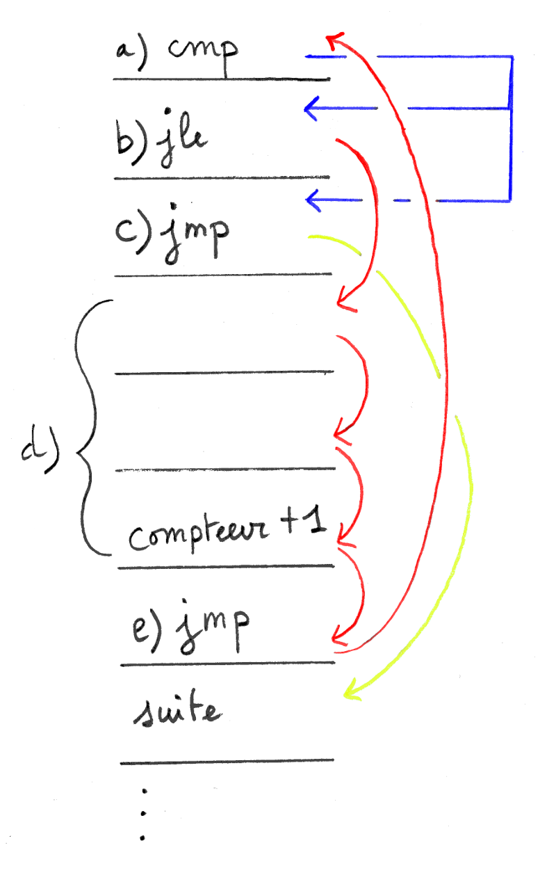
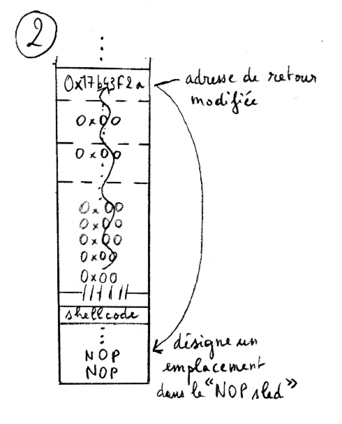

(Re)programmer des boîtes noires
Les hackers face à l’abstraction informatique et une omniprésente disparition du technique.
Élie Gavoty
Mémoire de recherche pour le Master LOPHISS 2015-2016 Université Paris Diderot Dirigé par Mme Nadine de Courtenay, Soutenu le 6 septembre 2016.
Jury : Mme Nadine de Courtenay, Maître de conférence en histoire de la physique. M. Sébastien Broca, Maître de conférence en science de l’information et de la communication.
Ce texte et ses schémas sont distribués sous licence Creative Commons BY-NC-ND Illustration sous licence Creative Commons BY-SA auteur Elie Gavoty, d’après une icône de George Boukeas, basée sur le thème Gorilla Icon de Jakub Steiner.
version pdf
Résumé
Le hacker est une figure à la fois marginale et importante dans l’histoire de l’informatique. La culture hacker fait en effet converger, au sein de ce domaine, des approches techniciennes à la fois inventives et politiques autour de pratiques inhabituelles : le hacking implique une façon particulière de se rapporter aux systèmes informatiques entre création et détournement logiciel. Sans enfermer dans une caractérisation figée ces pratiques diverses et en évolution constante, l’objectif de ce mémoire est d’interroger la façon dont elles permettent de questionner une logique omniprésente de masquage de la technicité.
Notre approche débutera par un panorama de la culture hacker. Il s’agira dans un premier temps d’évoquer les origines de cette culture et certaines caractérisations classiques du hack, acte technicien esthétique et provoquant. Notre approche sera ensuite assez classiquement polarisée entre d’un côté le mouvement du logiciel libre et de l’autre le computer underground et les activités transgressives, souvent appelées cracking, qui s’y développent. Nous chercherons cependant à relativiser cette opposition en évoquant le processus, notamment politique, de sa construction.
Dans une deuxième partie, alimentée par des réflexions issues des STS de la philosophie de la technique et de philosophie de l’informatique, nous étudierons la notion de boîte noire. Cette notion, à la fois métaphore, modèle cybernétique et concept constructiviste nous permettra d’interroger une logique paradoxale du masquage du technique et en particulier des opérations appuyant le fonctionnement des artefacts. Nous proposerons ensuite une caractérisation en informatique de cette logique de la boîte à travers la notion centrale et structurante de l’abstraction.
Dans ce cadre théorique décomposant les systèmes informatiques en différents niveaux de réalité, fonctionnant grâce à des boîtes noires multiples et emboîtées, nous chercherons à mettre en valeur une spécificité de l’action hacker. Pour cela nous étudierons en particulier un exemple de technique de hacking, l’injection mémoire par débordement de tampon. Ce type de masquage joue notamment un rôle important dans la séparation entre une position de concepteur et une position d’usager, qui est transgressée par les hackers. Ces derniers refusent en effet, en tant qu’utilisateurs des systèmes informatiques, de renoncer à un nouer un lien pratique avec la réalité opératoire de ces systèmes.
Enfin, nous aborderons la façon dont la notion de boîte noire qui décrit également la disparition du processus de genèse des systèmes techniques peut être vue comme le support d’une hégémonie de l’industrie informatique. Nous aborderons, cette notion d’hégémonie technique à travers l’exemple des l’interfaces graphiques et de la façon dont elle supprime la possibilité de programmer les ordinateurs. Cette approche ouvrira une direction théorique permettant de rendre compte de la dimension profondément politique des pratiques de hacking.
Mots clés : hack, logiciel libre, cracking, boîte noire, abstraction informatique, hégémonie technique, débordement de tampon,
Abstract
The hacker is an important although marginal figure in the history of computer technology. Hacker culture brings together in this technical domain political and creative approaches through unusual practices : hacking involve a particular relation to computer systems, between software creation and hijacking. Without minimizing the diversity and evolutive character of thoses practices, the aim of this work is to question how hacking reveals a pervasive tendency of technology to hide the operations and conditions of technical systems.
Our approach begins with an overview of hacker culture. It will first present the origins of this culture and certain classical descriptions of the hack, a technical, aesthetic and provocative act. The progression will then be classically divided between on one side the free software movement and on the other the computer underground and its transgressive activities, often called cracking. We will however discuss the construction process of this opposition, notably political, to overcome this apparent duality.
In a second part, based on STS, philosophy of technology and philosophy of computer science reflexions, we will study the notion of black box. This notion, as a metaphor, a cybernetic model and a constructivist concept, will help us to describe a paradoxal hiding of the technical conditions, in particular the operations which support technological artefacts functioning. We will then propose a caracterisation of this tendency in the context of computing through the central and structuring concept of computational abstraction.
In this theoretical framework, describing computers as layered systems, computing through multiple and nested black boxes, we will discuss the specificity of hacker action. Our analyse uses a particular hacking example : the memory injection through buffer overflow method. This kind of black box hiding supports a separation between the user’s and designer’s positions, which is transgressed by hackers. Those refuse in fact, as technically aware computer users, to drop out their practical link with the operational reality of computer systems.
Finally, we will consider that, as the black box notion also describe traditionally the disappearing of the social logic of technological systems, this hiding supports hegemonic strategies from the computer industry. We will discuss the notion of technological hegemony, which through the example of graphicals interfaces and the how they make it difficult and secondary to program computers. This approach will open a theorical direction to address the deeply political dimension of hacking practices.
Keywords : hack, free software, cracking, black box, computational abstraction, technological hegemony, buffer overflow
Remerciements
Tout d’abord, je suis ravi d’avoir eu l’occasion et la liberté de m’intéresser à de nombreux domaines très divers dans le cadre du master LOPHISS. À cette occasion j’ai pu rencontrer de nombreuses personnes passionnantes, étudiant.e.s et professeur.e.s que je remercie pour toutes les discussions enrichissantes que nous avons pu mener.
Mes remerciements vont également à tous ceux qui m’ont apporté une inspiration et un soutien indispensable durant la longue période d’élaboration de ce mémoire.
Je remercie Nadine de Courtenay, ma directrice de mémoire, pour sa confiance, ses encouragements qui ont su me faire croire dans ce projet qui me tenait à coeur.
Ce mémoire doit beaucoup à Maude qui m’a aidé de multiples façons et m’a donné le courage de continuer en des heures d’intense saturation ; à mes parents et mon frère qui m’ont soutenu et apporté leur aide dans le travail de rédaction ; à Aurélien pour son accueil à Bordeau et son intérêt ; à la famille Makhroff qui m’a accueilli chaleureusement à différentes étapes de ce travail ; à Odile, Karo et tous mes camarades de bibliothèque pour leur présence encourageante.
J’aimerais remercier également mes amis du Hackstub, qui poursuivent comme moi l’envie de transmettre une approche différente de l’informatique.
Introduction
Depuis quelques années, la culture hacker gagne en visibilité, en particulier en France. À travers le mouvement des hackerspaces1, ces espaces dédiés à la bidouille informatique qui apparaissent depuis peu dans diverses villes, une certaine forme de passion pour l’informatique trouve de nouveaux lieux d’expression et de diffusion. Parallèlement, un public de plus en nombreux fait un usage courant de logiciels libres, liés à la culture hacker, tels que le navigateur web Firefox, le système d'exploitation GNU/Linux ou encore les services libres en ligne proposés par l'association Framasoft. Cependant si différentes initiatives sortent du bois, l'ampleur de la « galaxie hacker » semble relativement méconnue et sa cohésion problématique. Comment les « exactions » des Anonymous, ce groupe médiatique d'activistes en ligne et les hackathons, événements ponctuels de développement logiciel, organisés notamment par Mozilla (entreprise derrière Firefox), sont-ils susceptibles d'être apparentés ? Cette cohésion de la culture hacker pose problème en terme d'identité pour les acteurs eux-mêmes : qui peut aujourd’hui se revendiquer hacker et pourquoi ? Les avis divergent.
La culture hacker est relativement ancienne. Elle trouve ses racines, durant les années 1960, dans deux mouvements techniciens assez spécifiques. D’une part, les concepts de hack et hacker proviennent d’un collectif étudiant du Massachussets Institute of Technology. D’autre part, une orientation plus transgressive, centrée sur les technologies de communication est héritière d'un mouvement de pirates téléphoniques appelés les phreakers(Sterling 1992). À la conjonction de ces deux tendances, au moment où les PC et les réseaux informatiques se répandent, notamment aux États-Unis et en Europe, s’est développé sous diverses formes un rapport à la fois pratique et politique à l'informatique comme technologie radicalement appropriable et partageable.
Au cœur de la culture hacker, on trouve traditionnellement un motif consacré : le hack désigne un acte technicien, qui en manifestant la compétence technique, l'astuce voire l'audace de son auteur l'élève véritablement au rang de hacker. La dynamique du hack lorsqu'on essaie de l'exprimer de façon générale, apparaît relativement abstraite (Jordan 2008, chap. 1). C'est qu'un hack peut s'appliquer à l'informatique dans de nombreux contextes, mais également à tout dispositif technique, voire pour certains, aux relations humaines. Là encore, ce qui constitue légitimement un hack est sujet à débat(E. G. Coleman 2013 Introduction) et la cohésion pratique du hacking demeure problématique.
Au-delà de ses origines historiques, on peut identifier en suivant notamment le sociologue Tim Jordan, deux orientations principales exprimant en pratique cette notion aujourd'hui. D'une part le cracking désigne généralement des pratiques très diverses de détournement ou de piratage qui visent à outrepasser ou à mettre simplement à l'épreuve la sécurité des systèmes informatiques. D'autre part la création de logiciels libres, c'est-à-dire de programmes informatiques dont le code est librement accessible, ce qui permet leur partage et un développement collaboratif. La mise en regard de ces deux orientations révèle une tension particulière entre, d'un côté, des pratiques de développement logiciel collaboratives, qu'on pourrait aisément qualifier de constructives et qui sont considérées très positivement de façon générale, et de l'autre des pratiques de détournement, transgressives voire délinquantes, c'est-à-dire dont la légitimité est largement contestée et qui sont perçues par beaucoup comme destructrices.
Lorsqu'on cherche à dépasser cette opposition, et que l'on considère les motivations qui guident les hackers dans leur diversité, on comprend que ce qui est au cœur du hacking est souvent le besoin de (re)prendre en main, de s'approprier librement les systèmes informatiques, en particulier de pouvoir les (re)programmer. Il semble notamment que les hackers ne trouvent pas leur compte face aux divisions professionnelles de l'informatique, séparant le travail de développement, c'est-à-dire une tâche de conception de l'usage d'un ordinateur tel qu'il est proposé aux utilisateurs finaux. Ils refusent en particulier une forme d'impuissance à laquelle sont assignés les usagers de l'informatique en tant que récepteurs de machines et de logiciels déjà parfaitement clos.
Cette situation renvoie plus conceptuellement à un paradoxe en philosophie de la technique : les différents aspects de la technicité (les opérations, décisions et réseaux) qui permettent le fonctionnement et la médiation opérée par les objets techniques (on parle plus largement d'artefacts techniques dont font partie les programmes informatiques) disparaissent généralement pour laisser la place à l'objet lui-même dans son identité fonctionnelle. Mais cette disparition participe d'une forme d'impuissance de l'usager à choisir et adapter les conditions de son environnement technique puisqu'elle le pousse à adopter une position de récepteur globalement passif. Même les logiciels libres, pourtant faits pour favoriser une forme d'appropriation plus profonde, semblent parfois pris dans ce paradoxe.
Dès lors, le hacking, lorsqu'il manifeste une volonté de transgression des conditions techniques existantes, nous paraît être un type d'activité philosophiquement intéressant en ce qu'il s'éloigne d'une logique de la boîte noire caractéristique de la technique moderne : plutôt que de réduire la technique, à une alternance de processus de conception et d'actes d'usage, il illustre une façon de remettre au centre de l'action les éléments du fonctionnement d'un artefact (généralement informatique) et une certaine réflexivité technicienne sur la médiation qu'il opère. Il s'agit ainsi de valoriser l'action transformatrice, voire contestataire, plutôt que la stabilisation des artefacts en tant qu'objets non problématiques.
Pour étudier cette originalité du hacking et du rapport hacker à l'informatique, nous chercherons ainsi à mettre en regard une approche transversale des pratiques de hacking inspirée par la littérature sociologique sur la culture hacker avec un questionnement plus conceptuel sur la notion de boîte noire. Cette dernière nous permettra en effet d'interroger sous différents angles la façon dont au coeur du technique se met en place un masquage de la technicité qui incorpore une forme de séparation entre conception et usage comme deux moments distincts. Il s'agira notamment de proposer un cadre théorique pour aborder la profondeur des systèmes informatiques et la centralité des processus de masquage dans leur architecture. Nous nous intéresserons dans ce contexte théorique à une technique de hacking particulière et en en quelque sorte canonique en sécurité informatique : l’injection mémoire par débordement de tampon. À partir de cet exemple, nous proposerons une analyse de l’attitude hacker en informatique comme un rapport particulier aux systèmes informatiques et à leur structure « feuilletée ». Enfin, nous aborderons, comment ces processus de masquage en informatique, en particulier dans le cas de la conception des interfaces graphiques, font écho à des logiques hégémoniques contre lesquelles luttent les hackers.
Les pratiques de hacking et leur dynamique culturelle.
Origine de la culture hacker et descriptions classiques du hack
Le hacking est une notion délicate à manipuler : elle fascine, car elle charrie à la fois une part de mystère en tant que forme d’engagement technique non conventionnel et parallèlement une part de transgression parfois valorisée, parfois minimisée par ceux qui se revendiquent hackers. Au-delà d’une image médiatique construite depuis les années 19802 qui assigne souvent le hacker au rôle du magicien informatique délinquant, la culture hacker manifeste une certaine diversité et une énergie techno-politique frappante3. Ainsi, il existe de multiples caractérisations conflictuelles du hacking comme activité et des qualités qui font le "véritable" hacker, aussi bien chez les acteurs qui se revendiquent de cette identité4 que dans la littérature. En effet, la culture hacker est ancienne et s'est largement diversifiée. Elle est traversée par des conflits générationnels5 et des divergences pratiques aussi bien que de culture politique. Enfin, elle est très stimulante et fait l'objet de nombreuses déclarations d'intention6. Ces tendances participent à un certain flou quant à l'emploi des termes hacker et hacking.
Nous nous proposons d'aborder dans un premier temps quelques approches classiques et de présenter rapidement une double origine historique de la culture hacker. Par la suite, pour donner une image plus actuelle des pratiques de hacking, nous évoquerons deux « genres »7 du hacking qui polarisent en quelque sorte la culture hacker aujourd'hui : il s'agit du « cracking » et du logiciel libre. Nous désignerons le plus souvent le « cracking » comme hacking transgressif ou détournement pour des raisons que nous développerons dans la partie I.2.3. Le logiciel libre met quant à lui en avant le hacking comme une pratique de programmation collaborative.
Ces précisions étant apportées, il semble utile, pour commencer, de s'intéresser à quelques définitions. Le qualificatif de hacker désigne souvent de façon assez générale un informaticien curieux et débrouillard8 ou plus précisément selon le Jargon File, un dictionnaire classique d'argot hacker :
A person who enjoys exploring the details of programmable systems and how to stretch their capabilities, as opposed to most users, who prefer to learn only the minimum necessary9.
Cependant, correspondre plus ou moins à cette définition ne suffit pas pour être considéré comme un hacker. En effet, cette culture est traversée par un certain élitisme et dans de nombreux cas une forme particulière de reconnaissance par les pairs est nécessaire pour faire de quelqu'un un hacker (Jordan 2008, chap. 2). Cette reconnaissance s'opère sur la base d'un type d'acte particulier, le hack qui manifeste l'ingéniosité, la maîtrise technique voire l'humour de son auteur. Le hack n’est pas aisé à cerner. En tant que « Graal »(Taylor 1999, 16) recherché par les hackers, il est réputé revêtir un sens subtil et profond qui défie l'explication10. De façon très générale, le hack est parfois caractérisé comme une « application adéquate de l'ingéniosité ». Il traduit la capacité d'agir de façon non orthodoxe et inventive dans des contextes technologiques et particulièrement informatiques.
Pour prendre un exemple élégant et humoristique de hack informatique, présenté par Gabriella Coleman, considérons un court programme écrit dans le langage de programmation Perl (E. G. Coleman 2013, 93) :
#count the number of stars in the sky $cnt = $sky =~ tr/*/*/;
L'objet de cette courte expression est comme l'indique le commentaire initial de « compter les étoiles dans le ciel ». En pratique, elle compte littéralement le nombre de caractères astérisque (*) d'un texte enregistré dans la variable « ciel » ($sky)11.
En plus du jeu de mots qui lui donne une connotation humoristique et poétique, cette expression célèbre la centralité de l'astérisque dans les systèmes UNIX12, et la puissance du langage Perl. En effet, elle démontre qu'il est possible d'effectuer, grâce à ce langage, un traitement informatique non élémentaire13 en seulement une ligne grâce à la syntaxe originale du langage qui laisse le programmeur condenser plusieurs opérations avec un minimum de symboles. Un programme explicite effectuant la même tâche utiliserait pour ce faire un code sensiblement plus long14. Le jeu qui consiste à condenser ainsi des expressions est très répandu dans la communauté des programmeurs Perl et demande une ingéniosité combinatoire certaine. Par cette simple expression, l'auteur manifeste une maîtrise importante des détails techniques du langage de programmation et de l'environnement informatique. Il élève en quelque sorte, par un acte qui n'est pas uniquement utilitaire, la programmation au rang de discipline poétique. Le hack et son rapport intime aux méandres de la programmation proviennent des pratiques développées par certains informaticiens du Massachussets Institute of Technology (MIT). Revenons sur cette origine de la culture hacker.
Naissance de la culture hacker au MIT et son éthique
Le sens original du terme hack se rapporte en anglais au fait de couper ou tailler grossièrement (Taylor 1999, 14). Il a été détourné, dans un premier temps, par quelques étudiants-ingénieurs appartenant au Tech Model Railroad Club (TRMC)(Levy 2013, chap. 1). Au sein de ce club, organisé* *autour d'une énorme maquette ferroviaire, les étudiants chargés de l'ingénierie électrique se prénommaient hacker avec une certaine fierté. Réparer et étendre cet immense système électrique en ajoutant de nouvelles routes, des dispositifs de contrôle, en testant et bricolant les systèmes à partir de matériel récupéré passionnait ces jeunes, souvent acclimatés à l'électronique depuis l'enfance. L'ensemble de ces pratiques impliquant beaucoup d'astuces et de capacité à résoudre des problèmes techniques avec peu de moyens constitue donc en quelque sorte un ancêtre du hacking en informatique. Les hackers donnaient une dimension héroïque et esthétique à cette activité technicienne. Steven Levy relate l'existence de poèmes vantant les exploits des hackers.
Les étudiants "hackers" du TRMC se tournèrent vers les ordinateurs en 1959, à l'occasion de l'ouverture d'un cours d'informatique débutant, proposé par John McCarthy, pionnier de l'intelligence artificielle. On peut relever une continuité frappante entre l'électronique et l'informatique de l'époque. Programmer une machine était un travail très fastidieux dans un contexte où la mémoire était très limitée et les opérations utilisées extrêmement élémentaires. Les machines tombaient également en panne et il fallait souvent intervenir directement au niveau électronique.
Les hackers développèrent progressivement, au sein du laboratoire d'intelligence artificielle (AI lab), une approche interactive de la programmation très originale à l'époque. Ils rejetaient le principe du traitement par lot, symbolisant une vision étriquée de l'ordinateur comme simple machine à calculs : dans cette approche, les tâches sont soumises les unes après les autres pour obtenir un résultat, concluant ou non. Le programmeur ne se confronte alors jamais directement à la machine. Au contraire, les hackers développèrent des programmes précurseurs, pour suivre l'exécution des calculs en temps réel et « déboguer » le programme au fur et à mesure. Ils conçurent également un des premiers systèmes d'exploitation à temps partagé qui permet à plusieurs usagers d'utiliser simultanément un ordinateur. Dans ce contexte, Levy relate divers types de hacks, ayant trait à l'optimisation des programmes ou encore à des usages innovants de l'ordinateur pour faire de la musique ou jouer (Levy 2013, chap. 2 et 3).
L’activité des hackers du AI lab répondait à un code informel. Il est formulé par Steven Levy, à partir d'entretiens avec les protagonistes, autour de six principes15. D'abord, l'accès aux machines et aux systèmes doit être libre, car l'exploration par le démontage et l'analyse est ce qui permet de vraiment comprendre les systèmes (nous appellerons cet impératif le principe d'accès direct aux machines). Deuxièmement, l'accès à l'information doit aussi être libre, notamment l'information technique qui facilite les hacks ultérieurs* (principe de divulgation* de l'information). Le troisième principe est la défiance de toute autorité et la valorisation de la décentralisation de l'accès à l'ordinateur* (principe anti-bureaucratique). Le quatrième principe concerne le refus qu'un hacker soit jugé sur autre chose que les compétences qu'il démontre en pratique et en particulier sur ses diplômes, son statut ou son âge (principe du mérite par le hack). Le cinquième principe souligne la valeur esthétique du hack informatique (principe esthétique). Enfin, le sixième principe affirme que l'informatique peut améliorer la vie ce qui n'a rien d'évident à l'époque (principe d'utilité générale*).
Ces principes font implicitement référence aux activités des hackers et dessinent en négatif les conditions matérielles et les obstacles, auxquels ils étaient confrontés dans leur pratique. En effet, comme nous l'avons évoqué, les hackers du MIT ont dû lutter pour avoir accès à des ordinateurs, rares et surveillés. Le principe direct d'accès aux machines traduit cette difficulté originelle à pratiquer l'informatique. Mais il ne s'agissait pas pour eux de se contenter d'une utilisation superficielle et indirecte de l'ordinateur, d'accéder en somme à du temps de calcul, mais bien de se confronter directement aux machines à leur interface matérielle (la console du TX-0) et leur fonctionnement interne. La culture hacker remet donc en cause, dès le départ, la constitution de l'ordinateur en une « boîte noire » masquant son fonctionnement pour exhiber un ensemble de fonctions « magiques ». Ce motif de la boîte noire, de l'abstraction masquant les détails techniques, est récurrent en informatique, mais également dans l'architecture de la plupart des techniques. Nous verrons dans la partie II qu'il traduit un aspect épistémologique central et ambigu de notre rapport à la technique. Les pratiques hackers sont, de ce point de vue, à contre-courant d’une attitude dominante face à l'environnement technologique, car elles valorisent l'attention au fonctionnement interne des systèmes.
Accéder aux entrailles d'un système n'est souvent pas suffisant pour le comprendre, le réparer, l'améliorer. Le principe que nous désignerons comme principe de divulgation affirme que l'information doit être libre, d'une part, pour faciliter voir simplement rendre possible l'étude des ordinateurs et des programmes16, mais surtout pour permettre l'utilisation du système. En effet, dès lors que les programmes informatiques, codés sous forme de suites de nombres, sont assimilés à de l'information, l'usage même de l'ordinateur implique de pouvoir accéder à ces outils informationnels. De plus, au-delà de ces considérations pratiques, les hackers du MIT ont perçu très tôt, une certaine universalité de l'ordinateur traitant l'information numérique et perçoivent le monde à travers ce prisme informatique. De ce point de vue, un libre flux d'information est ce qui permet d'améliorer le fonctionnement d'un ordinateur et donc également du monde, perçu comme informationnel17. Ce principe doit, dès lors, être formulé de façon générale et appliqué le plus largement possible. Il en résulte des parallèles amusants :
« To a hacker, a closed door is an insult, and a locked door is an outrage. Just as information should be clearly and elegantly transported within a computer, and just as software should be freely disseminated, hackers believed people should be allowed access to files or tools which might promote the hacker quest to find out and improve the way the world works. » 18
Le troisième principe est lié à une critique de la bureaucratie (principe anti-bureaucratique). Les hackers abhorrent les systèmes centralisés et hiérarchisés, parce qu'ils forment des obstacles à l'accès aux ressources et à la circulation des informations. Ils instituent des règlementations arbitraires entravant la curiosité hacker. Ils sont plus fondamentalement incapables de tolérer les pratiques exploratoires qui forment le coeur du hacking. En effet, ces dernières cherchent toujours à aller au-delà des règles : les hackers du MIT recherchent une liberté radicale dans la programmation qui s'accommode mal des limitations légales. De ce point de vue, IBM, entreprise très largement dominante et hiérarchisée, produisant des ordinateurs énormes et chers constitue la figure repoussoir contre laquelle se définissent les hackers dans leur activité19.
Le principe suivant se présente comme une forme de méritocratie particulière, dans laquelle la source légitime d'autorité est l'investissement dans le hacking et la capacité à produire des hacks remarquables. Les hackers valorisent ainsi les exploits gratuits et un savoir-faire plutôt que les statuts sociaux. Pour ces passionnés, peu sociables, l'idée de devoir justifier leur pratique par des diplômes ou une origine sociale pour pouvoir pratiquer l'informatique est profondément absurde. Ils ont par exemple accueilli un passionné adolescent, dans ce milieu universitaire, qui a été reconnu pour son investissement personnel et ses capacités en programmation. Ce principe central parmi les hackers du MIT semble trouver une continuation au sein des générations suivantes, en particulier dans l'idée de « do-ocracy »20 structurant aujourd'hui le développement communautaire de logiciels libres. Nous aurons l'occasion d’y revenir.
On pourrait considérer le hack musical de Peter Samson comme un bon exemple d'une démarche artistique associée à l'ordinateur : il utilisa un petit son de diagnostic, de hauteur variable, pour jouer un morceau de musique en écrivant un programme informatique. Mais il serait pourtant erroné d'associer le principe esthétique hacker aux créations artistiques produites grâce à un ordinateur, selon des critères culturellement indépendants de l'informatique (la beauté des morceaux de musique numérique dans le paysage global de la création musicale par exemple). La valeur esthétique dont il est question ici concerne bien plus profondément les activités de la programmation et du hacking sur leur versant d'abord informatique et technologique21. Ainsi pour les hackers, le code d'un programme possède une qualité esthétique propre, liée en particulier aux astuces sur lesquelles il s'appuie, à sa taille réduite au minimum, à la maîtrise algorithmique et la connaissance de la machine qu'il manifeste. Dans le contexte technique dans lequel opère les premiers hackers, c'est-à-dire avec un ordinateur comme le TX-0, peu performant et disposant de très peu de mémoire pour stocker les programmes, le fait de pouvoir écrire un programme avec le moins possible d'instructions est très intéressant : disposer d'un programme court permet de charger plus de programmes en même temps et une exécution plus rapide. Hacker consistait alors par exemple à mettre toute son astuce au service de l'économie d'instructions du programme.
Ce critère n'est plus valable de la même façon aujourd'hui, alors que la mémoire disponible sur les ordinateurs est très importante, largement suffisante pour charger tout code nécessaire. On peut cependant retrouver des critères de valorisation de la concision du code, notamment dans le conflit entre les hackers amateurs du langage Python et ceux préférant le langage Perl. Alors que le premier est volontairement très explicite et formaté pour favoriser la lisibilité, le second permet des raccourcis et comportements implicites qui rendent possible de puissantes expressions extrêmement concises. Cependant, il est alors difficile de comprendre le déroulement algorithmique, ce qui rend le code en Perl moins adapté à un environnement collaboratif. On peut dire que le langage Perl est plus adapté à l'exploit individuel du programmeur et aux expérimentations esthétiques sur le code alors que le langage Python a été créé pour favoriser le partage et la transparence. Plus généralement, cette valorisation collective d'une esthétique du hack et en particulier du code informatique, manifeste une mise en culture d'activités techniques traditionnellement très professionnalisées et utilitaires. La valorisation esthétique s'hybride alors avec des considérations, notamment fonctionnelles, que l'on fait habituellement appartenir à un tout autre ordre de valeur.
Enfin, le dernier principe affirme que l'ordinateur peut améliorer la vie humaine. L'informatique est aujourd'hui ubiquitaire, au point que nous ne sommes plus que très partiellement conscients au quotidien du rôle des ordinateurs et des diverses fonctions qu'ils remplissent pour nous faciliter la vie. Dans les années 60, au contraire, les ordinateurs étaient présents principalement aux États-Unis et considérés comme des machines très spécialisées, utiles dans quelques branches professionnelles, pour le calcul scientifique en particulier. Sans imposer aux autres comme une évidence cette intuition d'une utilité très large de l'ordinateur, à une époque où les ordinateurs étaient de fait inaccessibles pour l'immense majorité des gens, les hackers ont vu leurs vies effectivement transformées par les premiers ordinateurs. Cette confiance dans l'intérêt de ces machines et dans l'utilité générale des solutions informatiques a amené les hackers de la génération suivante à défendre la démocratisation de l'ordinateur.
Hack et Phreaking
Le hacking ne concerne pas nécessairement l'informatique. Il peut s'appliquer à de nombreux systèmes technologiques, voir par analogies à de nombreuses situations pratiques(Taylor 1999, 17). En outre, il manifeste souvent une dimension transgressive, voire illégale, centrale dans la culture hacker. Sherry Turkle, dans une tentative classique pour illustrer les caractéristiques s'intéresse à un autre type de pratique, le phreaking. Il s'agit d'une forme de piratage téléphonique, qui consiste pour ses pratiquants à débloquer certaines fonctions de contrôle du réseau, par divers procédés, en particulier grâce à l'utilisation des « phreaking boxes »22 . Le hack étudié par Turkle, initié par un phreaker célèbre nommé Captain Crunch, consistait à l'aide d'une paire de téléphones et d'une « blue box » à déclencher une série d'appels internationaux en piratant le réseau. Ensuite lorsqu’il parlait dans l'un des combinés, on entendait sa voix dans le second avec un délai important indiquant que l'appel venait d'effectuer le tour du monde.
« Appreciating what made the call around the world a great hack is an exercise in hacker aesthetics. It has the quality of [a] magician’s gesture: a truly surprising result produced with ridiculously simple means. Equally important: Crunch had not simply stumbled on a curiosity. The trick worked because Crunch had acquired an impressive amount of expertise about the telephone system. That is what made the trick a great hack, otherwise it would have been a very minor one. Mastery is of the essence everywhere within hacker culture. Third, the expertise was acquired unofficially and at the expense of a big system. The hacker is a person outside the system who is never excluded by its rules. »23
Ainsi selon Turkle, le hack est un acte de détournement qui combine la simplicité, une maîtrise manifeste d'un système technique complexe, et une dimension de transgression des règles imposées par « le système ». Plus largement, comme le présente Gabriella Coleman, la communauté phreaker et sa proximité avec le mouvement politique des Yippies dans les années 70 constitue l'une des origines des positions politiques de critique radicale du système, caractéristiques du computer underground hacker jusqu'à aujourd'hui (G. Coleman 2012).
Les travaux désormais classiques de Steven Levy et Sherry Turkle datent de 1984 et l'informatique a beaucoup évolué depuis avec notamment l'apparition de l'ordinateur personnel et d'Internet. Les hackers ont d'ailleurs joué un rôle important dans ces innovations24. Il s’agit dès lors de s’intéresser aux formes plus contemporaines de cette culture. Pour cela, Tim Jordan propose de comprendre la dynamique du hacking au niveau pratique en mettant en regard les pratiques de développement collaboratif portées par le mouvement logiciel libre et les pratiques transgressives du computer underground. Bien que cette catégorisation classique soit contestable(G. Coleman et Golub 2008 Introduction), elle nous semble correspondre à une perception répandue de l’héritage hacker. Nous la reprendrons donc dans le but notamment de la questionner.
Logiciel libre : mettre en partage les logiciels et défendre leur appropriation technicienne
Le logiciel libre (ou Logiciel Libre et Open Source souvent abrégé F/OSS)25 fait avant tout référence à un ensemble de pratiques de création collaborative de logiciels informatiques dont le code est rendu librement accessible à travers Internet et modifiable à volonté. Cependant, le logiciel libre se retrouve également au centre d'un vaste public qui par ses pratiques et son rapport particulier aux infrastructures informatiques participe de façon centrale à la construction d'Internet et de l'informatique actuelle. Cette forme spécifique de collectif, que Christopher Kelty(Kelty 2008) caractérise en introduisant la notion de « public récursif » sera l'objet de la partie 2.2. Enfin, nous nous interrogerons sur ce qui relie en pratique le développement logiciel à la notion de hack précédemment évoquée et notamment à sa dimension transgressive.
Définition et premières implications informatiques du logiciel libre
Tel qu'on le rencontre en tant qu'usager d'un ordinateur, un logiciel libre est avant tout un logiciel26 librement téléchargeable et utilisable, mais également dont le code source27 est publiquement accessible. Ces logiciels sont souvent gérés de façon communautaire : ils sont développés par des contributions de programmeurs d'horizons différents et distribués sous diverses formes à l'usage de tout un chacun. Mais le logiciel libre est également un mouvement d'un type particulier organisé autour de ces pratiques de développement informatique collaboratif pour défendre leur spécificité, c'est-à-dire une façon d'envisager les programmes informatiques comme des biens communs appropriables.
La notion de logiciel libre (free software) et le mouvement éponyme remontent à 1983. Elle fut introduite par un hacker de l'AI Lab du Massachusetts Institute of Technology, Richard Stallman. Elle découle directement de l'éthique de travail collectif des hackers et des pratiques universitaires de partage du code informatique. Cependant à l'époque, une transformation rapide du monde du logiciel en un écosystème commercial fermé et protégé par des brevets menaçait ce rapport libre à l'informatique. Stallman décida alors de lancer un projet, nommé GNU28, et introduisit pour le caractériser la notion de logiciel libre29, afin d'une part de réaffirmer l'importance en informatique d'accéder au code des logiciels et d'autre part de rassembler les hackers encore susceptibles de défendre cet idéal. Il s'agissait concrètement de développer un système d'exploitation dont le code serait à jamais un objet collectif, librement disponible et modifiable.
Selon cette approche de Stallman, devenue en quelque sorte canonique, un logiciel est dit libre s’il respecte quatre libertés :
- « la liberté d’exécuter le programme comme vous voulez, pour n’importe quel usage (liberté 0);
- la liberté d’étudier le fonctionnement du programme, et de le modifier pour qu’il effectue vos tâches informatiques comme vous le souhaitez (liberté 1) ; l’accès au code source est une condition nécessaire ;
- la liberté de redistribuer des copies, donc d’aider votre voisin (liberté 2) ;
- la liberté de distribuer aux autres des copies de vos versions modifiées (liberté 3) ; en faisant cela, vous donnez à toute la communauté une possibilité de profiter de vos changements ; l’accès au code source est une condition nécessaire. » 30
En 1985, au moment de la distribution du premier logiciel GNU, Stallman écrivit une toute première version de la General Public Licence (GPL), pour qualifier juridiquement les libertés associées au logiciel libre. En effet, si le partage de code, librement disponible et modifiable, était une pratique courante dans le milieu universitaire des années 60 et 70, le cadre juridique habituel du domaine public, n'était pas satisfaisant. Stallman désirait protéger les logiciels libres d'une réappropriation et d'une intégration de leur code dans des logiciels non libres. Il introduisit pour ce faire une clause qui contraint tout développeur utilisant le code d'un logiciel libre sous licence GPL à distribuer son logiciel selon cette même licence, c'est-à-dire en respectant les libertés associées. Ce hack juridique31 fonde ce que l'on appelle le copyleft, c'est-à-dire un retournement du copyright anglo-saxon de façon à protéger non pas une possession exclusive du code, mais une possession collective de celui-ci. Cette première licence libre, encore largement utilisée aujourd'hui dans sa version mise à jour32. De plus, le copyleft s'applique désormais à d'autres objets, par exemple des livres, des images et des œuvres d'art.
Pour clarifier, le cadre informatique qui donne son sens en pratique aux libertés du logiciel libre, il est utile de comparer son code « ouvert » avec son pendant au code « fermé » qu’on désigne habituellement du qualificatif de propriétaire. Les logiciels sont initialement écrits sous la forme d'un code qu'on qualifie de * source. Un tel code est formulé dans un langage potentiellement compréhensible par l'humain, car composé de mots organisés selon une syntaxe régulière. Cependant, sous cette forme le programme n'est pas lisible par le(s) processeur(s) de la machine. Il doit être, à un moment ou un autre traduit en langage machine. Le programme peut alors être compris par l'ordinateur, c'est-à-dire lancé et utilisé, mais non par l'humain. En effet, le code machine* exécutable se présente sous la forme d'un imbroglio binaire (codé sous forme de 0 et de 1). Les opérations sont alors difficilement distinguables et si élémentaires que la logique du programme est extrêmement fastidieuse, voire impossible à reconstituer33. Le processus de traduction d'un code source en un binaire exécutable, appelé compilation, est fondamental en informatique.
Généralement, un logiciel propriétaire (ou encore* privatif)* est techniquement un programme pour lequel le code source n'est pas distribué par ses créateurs. Seul un programme sous forme compilé c'est-à-dire un fichier exécutable est disponible. Le programme se présente alors en pratique comme une boîte noire34 dont seuls les créateurs connaissent la logique de fonctionnement. Au contraire, l'ouverture du code en tant que caractéristique technique a de nombreuses conséquences pratiques et autour d'elle cristallise également la dimension politique portée par le mouvement. En effet, avoir accès au code source du programme correspond, dans les conditions techniques particulières de l'informatique à disposer à la fois d'un artefact technique35 en tant que tel36 et d'une description de sa logique/structure qui constitue une connaissance technique souvent suffisante pour comprendre cette dernière à peu près intégralement. Il est possible, lorsque le code source est disponible de s'approprier, dans la mesure de son temps et de ses compétences, un logiciel d'une façon tout à fait différente d'un usager habituel : chacun peut se faire en quelque sorte (re)concepteur du programme pour changer plus ou moins profondément ses fonctions, améliorer sa conception, supprimer certaines parties jugées inadéquates ou dangereuses37. Pouvoir lire et comprendre le code d'un programme est également la seule façon de s'assurer que ce dernier fait bien ce qu'on pense qu'il fait. En effet, au-delà de l'évidence de ce qui se déroule sur l'écran, les traitements informatiques sont largement invisibles38 et il est très aisé de cacher des dispositifs malveillants39. Comprendre, contrôler et s’approprier au niveau technique ce que fait le programme constitue pour Stallman, et pour une grande partie des hackers dont il s'est fait le porte-parole, une liberté fondamentale de tout usager d'un ordinateur. Cette liberté d'appropriation ne s'impose d'ailleurs pas plus aujourd'hui qu'à l'époque comme un droit des usagers dans nos sociétés dites technologiquement avancées : des smartphones aux consoles de jeu vidéo en passant par les multiples services qui fleurissent sur Internet à l'heure du nuage, la majorité des industriels redoublent ces dernières années d'efforts pour s'octroyer un contrôle en aval sur tous leurs produits et services au détriment des possibilités d'appropriation par les usagers40. Pour Stallman, face à cette tendance, le logiciel libre constitue un mouvement social œuvrant pour défendre la liberté des utilisateurs, notamment à choisir ce qui constitue pour eux une technologie utile et éthique.
Cependant, cette approche politique du logiciel libre comme un mouvement social ne fait pas l'unanimité41 : face aux premiers succès commerciaux du logiciel libre, apparaît en 1998 la notion d'open source défendue notamment par le libertarien Eric Raymond. Cette nouvelle qualification, outre qu'elle règle le problème de l’ambiguïté du mot free en anglais42, fut portée stratégiquement à la fois pour prendre le contre-pied de l'approche engagée de Stallman que Raymond et de nombreux hackers considèrent comme idéologique (Broca 2013, 62‑63, 69‑70), mais également pour changer l'image et les conditions de distribution du logiciel libre et ainsi le rendre plus compatible avec l'industrie. Cette transformation des logiciels libres en un phénomène relativement soluble dans l'industrie logicielle s'est effectivement opérée et les logiciels libres et open source se sont diffusés largement dans divers pans de l'informatique43.
Une certaine forme de rupture s'est confirmée par la suite entre les deux approches, Stallman évitant par exemple de fréquenter les événements étiquetés open source. Il les décrit comme deux factions opposées au sein d'une même communauté, l'une assumant et exprimant la dimension politique de son engagement et l'autre insistant sur la dimension techniquement et économiquement avantageuse de l'ouverture. Pourtant, il affirme également que cette opposition n'empêche pas une certaine cohésion de la communauté, les divergences politiques n'entravant pas la coopération pratique autour d'objectifs communs.
En fait selon Christopher Kelty, le phénomène du logiciel libre excède ce qu'on appelle traditionnellement un mouvement(Kelty 2008, 98). Pour lui, la dimension de mouvement n'est qu'une composante de ce qui fait du logiciel libre et open source un phénomène original et la matrice d'une tendance plus vaste44. Cette composante de mouvement est liée avant tout à la réflexivité de la communauté, aux disputes et clarifications quant aux enjeux pratiques et politiques de l'ouverture et du partage des logiciels. Ainsi plutôt que de se former d'abord autour d'une cohésion symbolique et politique ce collectif fonctionne justement, car autour des logiciels libres et d'Internet qui permettent un partage d’artefact et de culture techniques se construit un contexte dans lequel il est possible de travailler ensemble. Pour parler de cette forme collective, dont il décèle une forme possible de généralisation, Christopher Kelty introduit la notion de public récursif.
Le collectif du logiciel libre : constitution d'un public récursif.
Pour saisir la forme particulière du public récursif du logiciel libre, il s'agit selon Kelty de s'intéresser à une « concentration particulière de pratiques »(Kelty, préface de Broca 20132013, p.10). Il la décompose en cinq composantes qui se développent à différentes époques et convergent pour donner au public du logiciel libre sa dynamique particulière.
La première composante dans cette analyse est celle du logiciel libre et open source en tant que mouvement, c'est-à-dire la prise de conscience de l'existence d'une communauté large valorisant l'ouverture et le partage du code ainsi que les discussions quant à son identité et ses enjeux.
La deuxième composante qui constitue le cœur pratique du logiciel libre est le partage du code source informatique ; comme nous l'avons évoqué, ce partage implique que le code soit facilement disponible et modifiable et permet d'envisager une forme de travail de conception technique à plusieurs mains. Les pratiques de partage de code trouvent leurs racines dès les années 70, avec la révolution constituée par le système d'exploitation UNIX : il s'agit du premier système d'exploitation véritablement indépendant du matériel, c'est-à-dire que le même code était capable de fonctionner sur de nombreuses machines grâce au processus de compilation. Entre autres qualités, cette possibilité d'adapter UNIX à différents contextes informatiques et le fait que le code était distribué avec le logiciel ont garanti sa popularité parmi les informaticiens : distribués librement et améliorés par des professionnels pour leur propre usage, les programmes compatibles et versions du système se sont multipliés jusqu'à créer un écosystème énorme devenu de facto un standard45. L'histoire d'UNIX a en quelque sorte rendu naturelle l'idée du « fork » centrale dans le logiciel libre : dès lors que le code est partagé, il est possible de créer sa propre version d'un logiciel existant en aménageant son code ou en le réécrivant presque totalement, pour l'utiliser ou par exemple pour des raisons d'apprentissage.
Mais le fait de disposer d'un accès au code ne fait pas nécessairement des systèmes informatiques des écosystèmes ouverts et compatibles. Pour pouvoir communiquer informatiquement, il est nécessaire notamment d'élaborer un protocole qui sera respecté par les différents systèmes et logiciels. Le troisième jalon mis en valeur par Kelty est le tournant des réseaux informatiques dans les années 80. Il devint alors largement évident que l'avenir de l'informatique se situait dans le partage d'information plutôt que simplement dans le calcul. Pour cette raison, l'industrie informatique commença à valoriser l'interopérabilité, en particulier des systèmes Unix, autour du concept d'Open System. En outre, les premiers protocoles réseau standard et génériques virent le jour, en particulier la norme TCP/IP à la base d'Internet. Cependant dans un contexte de concurrence où les différents industriels voulaient imposer leur version et abusaient pour cela des brevets logiciels, cette promotion de l'ouverture se solda en pratique par un échec. La « guerre » des versions d'Unix se conclut sur la victoire d'écosystèmes incompatibles et radicalement fermés : les systèmes Msdos, puis Windows, vendus* par Microsoft.*
La quatrième composante apparaît dès lors comme une solution à cet échec des Open Systems. Il s'agit, à travers la création de diverses licences libres, de la formation de cadres juridiques permettant, comme nous l'avons évoqué précédemment de défendre une forme de mise en commun des logiciels et des protocoles. Ainsi, en plus de sa composante technique, la composante juridique est centrale pour le logiciel libre et l'établissement de cadres dans lesquels contester les modes traditionnels de la propriété intellectuelle. En outre, une forme de comparaison entre technique et juridique, présente en particulier dans les travaux du juriste Lawrence Lessig46, nous semble relativement influente dans la culture hacker : en tant qu'il fait exister le cyberespace d'une façon particulière, le code informatique, définit et contraint les comportements collectifs, d'une façon semblable aux lois, si ce n'est que cette législation technique est plus fondamentale, car elle précède et conditionne les processus législatifs traditionnels.
Enfin, la cinquième composante est la constitution de modes nouveaux d'organisation et de gouvernement du travail collectif de développement, tirant notamment parti d'Internet. Un exemple classique en la matière est l'organisation du développement du noyau47 Linux, initié par Linus Torvald et qui a dès l'origine impliqué des dizaines de développeurs. Eric Raymond caractérise cette organisation, par la métaphore du bazar : plutôt que de partir avec un objectif logiciel ambitieux et précisément conçu, Linux Torvald travailla, partant d'un projet minimal de noyau déjà existant et fonctionnel, à son amélioration pour atteindre un objectif pragmatique : le faire fonctionner sur un ordinateur personnel IBM PC. Lorsqu'il mit à disposition son code sur le net, de nombreux développeurs, intéressés par l'existence d'un noyau libre fonctionnel pour PC, aussi modeste soit-il, contribuèrent au projet. Torvalds se laissa guider par les contributions et les besoins de ses usagers en intégrant toutes les modifications intéressantes apportées par d'autres au logiciel. Ce mode de développement, très étonnant au regard des modes d'organisation de projets logiciels de l'époque, s'avéra très fructueux puisque le noyau en vint en quelques années à concurrencer les solutions commerciales. C'est en grande partie l'exemple de Linux qui fut au centre des discussions sur l'open source comme modèle de développement, au point qu'il fut discuté bien au-delà des cercles libristes jusqu'à influencer la pensée managériale. Mais, partant de ces innovations des années 1990, chaque projet libre présente une forme d'organisation collaborative relativement spécifique, plus ou moins doocratique, plus ou moins formelle, exploitant différents outils pour aider à l'intégration du code et la gestion collective des versions48.
À travers ces différents jalons, on comprend que le logiciel libre est un phénomène à de nombreux égards paradigmatique. Concrètement, les logiciels à sources ouvertes sont aujourd’hui au cœur de l’informatique : on peut traditionnellement relever que le navigateur Firefox, les systèmes d’exploitation de la famille GNU/Linux, très utilisés notamment sur les serveurs à la base d’Internet, ou encore des composants logiciels cruciaux comme le logiciel serveur HTTP Apache, sont libres. Plus largement, cette orientation collaborative du développement logiciel a débouché sur un modèle reconnu et largement mis en valeur jusque chez les ténors de l’industrie du logiciel. On pourrait, pour illustrer cette dimension paradigmatique du libre, s’intéresser au phénomène récent qui se constitue autour de la plateforme Github : ce réseau social basé sur le développement contributif et le code source comme vecteur d’interaction sociale, rencontre un franc succès chez nombre de développeurs professionnels ou amateurs, au point de transformer les habitudes dans le champ de l’informatique.
D’autre part, la spécificité de ce phénomène collectif est liée à sa dimension récursive :
« Why recursive? I call such publics recursive for two reasons: first, in order to signal that this kind of public includes the activities of making, maintaining, and modifying software and networks, as well as the more conventional discourse that is thereby enabled; and second, in order to suggest the recursive « depth » of the public, the series of technical and legal layers—from applications to protocols to the physical infrastructures of waves and wires—that are the subject of this making, maintaining, and modifying. The first of these characteristics is evident in the fact that geeks use technology as a kind of argument, for a specific kind of order: they argue about technology, but they also argue through it. »49
La récursivité, concept fondamental en informatique, décrit ici le public des geeks en tant qu’il s’est constitué par et pour l’informatique et Internet. Tels des homo faber numériques, ils produisent un monde technique partagé, des infrastructures logicielles et réseau qui sont à la fois l’objet et le milieu de leur mobilisation collective. Cela implique une articulation permanente du technique et du politique, du pratique et du symbolique.
Nous avons introduit le logiciel libre comme une composante centrale de la culture hacker. Dans quelle mesure, ce public récursif des geeks, mobilisés par le phénomène du libre et de l’open source correspond-il plus généralement à celui des hackers dont nous interrogeons les spécificités ?
Kelty désigne bien par le terme de geek, les héritiers de la culture hacker dans un sens inclusif. Au sens strict, il s’avère qu’il y a des hackers qui ne participent pas au développement du libre et des libristes qui sont gênés par la figure du hacker, voire des partisans des sources ouvertes au sein d’entreprises dont l’idéal est bien éloigné de l’éthique hacker. Cette question d’identité est donc complexe et instable (Söderberg 2011, 22). Kelty utilise justement la figure du geek comme une identité plus générale et détachée des forts enjeux d’appartenance et des disputes qui sont associées à la figure du hacker. Ces enjeux sont marqués en particulier par l’élitisme revendiqué de certains hackers et d’autre part par l’image de déviance associée à cette figure50. En outre, comme nous l’avons évoqué, il y a une forte dispersion de la notion de hacking et donc également des identités associées. Au contraire, Johan Söderberg critique le choix de ce terme de geek (Söderberg 2011, 28) : l’identité de hacker lui semble en effet d’une part généralement revendiquée par les acteurs et d’autre part plus à même de faire référence à leur ambition de maîtrise technicienne, héritée des premiers hackers américains.
Cependant, au-delà, de distinctions principalement terminologiques, la notion de public récursif, en proposant d’aborder cette question au niveau des pratiques, des infrastructures techniques et de l’autonomie collective qu’elles produisent s’adapte bien à une compréhension des collectifs hackers, qu’ils appartiennent ou non à ce que Coleman et Golub appellent le « genre moral » du libre. Pour poursuivre cette interrogation du rapport entre logiciel libre et la culture hacker il nous semble dès lors pertinent de nous intéresser à la convergence pratique entre le libre et les orientations plus transgressives de la culture hacker. Ainsi on peut se demander en quoi les activités de développement logiciel qui sont au centre du libre peuvent-elles se rapporter au motif du hack que nous avons évoqué dans la première partie. Ou dit autrement, en quoi l’approche de création de programmes informatiques au sein du mouvement du logiciel libre est-elle voisine d’autres pratiques de hacking, notamment celles qui consistent à détourner ou pénétrer des systèmes informatiques ?
Le développement de logiciel libre comme activité de hacking.
L’activité de production logicielle prend typiquement dans le cadre des projets de logiciel libre, une forme itérative : le programme se développe par des contributions ponctuelles qui lui ajoutent de nouvelles fonctionnalités ou corrigent des erreurs et bogues. Le programme passe ainsi d’un état fonctionnel à un autre légèrement plus étendu ou fiable. Dans cette approche, le développement n’est pas nécessairement planifié. Elle s’oppose ainsi, comme le relève notamment Gisle Hannemyr51, à une approche d’ingénierie logicielle52, dans laquelle tous les développements doivent préalablement être décrits sous forme de spécifications et où le développement est dirigé hiérarchiquement.
Dans le cadre d’une approche industrielle du développement, il s’agit ainsi de produire des composants logiciels partiels pour répondre à une liste de spécifications préétablies et de scinder les tâches de développement pour les répartir sur une équipe avec des spécialités. Dans le cas du producteur de logiciel, de la même façon que dans le cas d’un ouvrier qui produirait des pièces métalliques sans être véritablement impliqué dans la création de la machine résultante, cela a pour résultat que le producteur est peu concerné personnellement par les qualités potentiellement complexes et non univoques de l’objet résultant. Il ne réalise notamment pas le logiciel, car ce dernier fait sens d’un point de pratique pour lui, mais seulement pour répondre à un cahier des charges largement extrinsèque. Hannemyr qualifie en comparaison l’approche hacker d’artisanale : il s’agit pour un hacker de produire des programmes sur des bases volontaires et autonomes en définissant, souvent pour son propre usage, ce qui constitue la forme et les qualités adéquates de l’artefact informatique. Cette autonomie est intéressante pour produire du travail de qualité, car plutôt que de limiter le jugement au respect d’une spécification, elle permet une véritable implication pratique.
Cependant avec cette opposition entre approche hacker artisanale et approche industrielle tayloriste, Hannemyr nous semble, en tout cas dans le contexte actuel de l’informatique, trancher un peu trop nettement le développement logiciel. En effet, le développement du logiciel libre n’implique pas nécessairement de se passer de spécification ou de planification. Il s’agit également de pouvoir répartir les tâches entre des développeurs. De plus, des méthodes de développement incrémental et autres méthodes « agiles » d’organisation du développement logiciel créées en réaction à des modèles extrêmement planifiés issus de l’ingénierie logicielle se sont largement répandues dans l’industrie logicielle. Cette nuance étant posée, il demeure que l’opposition entre attitude industrielle et position hacker reste pertinente historiquement et politiquement dans la mesure ou l’ingénierie logicielle est une approche de l’informatique qui se développe à la fin des années soixante dans un contexte où il s’agit de rendre « manageables » des régiments de programmeurs pour répondre à une demande croissante de produits logiciels (Tedre 2014, chap. 6). En fait d’après Hannemyr, les hackers se constituent justement en tant que groupe clairement identifié dans les années 70 par leur opposition à cette approche de la programmation qui déqualifie et détruit le sens pratique de leur travail. Söderberg et Dafermos (Söderberg et Dafermos, George 2009) parlent à ce propos d’une forme de lutte ouvrière (labour struggle) dans le champ de l’informatique.
Par ailleurs, un mode de développement contributif et itératif implique également que le programmeur travaille dans le cadre d’un système prédéfini (le logiciel avec ses bibliothèques de fonctions et ses différents modules) voire d’un système qu’il n’a pas conçu et ne maîtrise pas complètement s’il s’agit d’un contributeur ponctuel. En fait, étendre un logiciel consiste à composer avec sa forme actuelle qui impose de nombreuses contraintes : un langage de programmation particulier, un choix de cadriciel et de bibliothèques de fonctions prédéfinies, mais surtout une architecture qui définit les principales masses du logiciel et des points de passages obligés lors de la programmation. Par exemple, ajouter une nouvelle fonctionnalité à un logiciel qui organise ses données d’une certaine façon et les stocke dans une base de données spécifique va imposer au programmeur de respecter cette organisation (on parle de modèle de données) et un ensemble de façons d’accéder aux données. Ce type de contraintes peuvent parfois rendre difficile, voire presque impossible, l’ajout de fonctionnalités originales à un logiciel. Cette affirmation est d’autant plus vraie lorsque celui-ci possède une forte intégration entre ses composants et ne prévoit pas dans son architecture la possibilité d’être étendu.
Dans un tel contexte de contrainte (plus ou moins forte), une dose d’astuce et d’ingéniosité est souvent nécessaire pour toute création technique : lorsque les choix de conception d’un composant ne sont pas suffisamment versatiles (souvent pour de bonnes raisons, par exemple pour optimiser la rapidité d’exécution du programme) et qu’il n’est pas possible d’intégrer simplement ce composant d’une autre manière que celle prévue par les concepteurs, le travail de développement s’éloigne d’un simple travail de production : il est alors tout particulièrement nécessaire de comprendre les conditions de fonctionnement des composants (au niveau de leurs opérations élémentaires) et de construire par exemple une nouvelle interface entre eux pour créer les conditions nécessaires à l’extension du logiciel.
En fait, la tâche d’étendre un système, dès lors qu’il s’agit d’utiliser un code existant, un ensemble de composants définis, pour faire plus que ce que l’auteur original avait envisagé, constitue toujours d’une certaine façon une forme de transgression à l’égard de ce qu’on pourrait appeler à la suite de Madeleine Akrich le « script » du logiciel, c’est-à-dire son scénario fonctionnel (et ici fonctionnant également)53. Comme le résume Gabriella Coleman, le travail contributif de programmation rejoint alors directement la notion de hacking, dans le sens classique d’une façon de retourner un système contre lui-même54.
Cependant, cette approche de certains enjeux pratiques de la programmation, en particulier itérative n’est pas ici spécifique. Il ne s’agit pas d’affirmer qu’il existerait une façon « hacker » de programmer qui se retrouverait uniquement dans certains milieux, mais plutôt qu’une certaine dose d’attitude « hacker » fait partie intégrante de toute activité de développement logiciel et que c’est cette attitude pratique, que certains préfèreront nommer bidouille, qui est mise en avant dans le mode contributif du logiciel libre. Comme l’affirme poétiquement Julian Dibbel55, la nature de l’informatique consiste en une « collusion répétée sans fin entre liberté et déterminisme ». Le savoir-faire informatique valorisé par la culture hacker consiste en cette capacité à transcender les contraintes de la programmation par des astuces techniques afin de pouvoir jouir d’une liberté de création informatique56.
Tous les systèmes logiciels sont loin d’être également contraignants et modifiables. On désigne généralement la facilité de modification d’un logiciel, par le terme anglais de « hackability »57. Un logiciel (propriétaire) sous forme compilée dont le code source n’est pas publiquement accessible sera en pratique très difficilement hackable58. Mais même quand on dispose du code source d’un logiciel, il est parfois très difficile d’intervenir sur lui, notamment s’il est trop complexe, peu documenté et commenté, ou si comme nous l’avons évoqué, son architecture impose trop de contraintes pour développer des fonctionnalités originales. Ainsi la hackabilité dépend souvent de la coopération des concepteurs à cette pratique en un sens transgressive qu’est l’extension non sollicitée du logiciel. De nombreux logiciels libres sont volontairement conservés très simples pour être facilement maîtrisables techniquement59. D’autres, plus complexes, sont activement rendus extensibles grâce à des scripts aisément programmables60.
Insister ainsi sur cette notion de hackabilité et celle de public récursif pour décrire le phénomène du logiciel libre, montre notamment qu’avoir accès au code source n’est qu’une condition nécessaire, mais non suffisante, à la forme d’émancipation technicienne que ce mouvement porte. Ainsi en un sens fondamental, l’ouverture d’un système ne consiste pas seulement en la disponibilité du code, mais plus profondément dans la possibilité d’avoir effectivement une action transformatrice sur les logiciels et les médiations techniques qu’ils opèrent. Inversement, si l’on aborde la fermeture d’un logiciel comme l’impossibilité pratique d’influer sur les conditions de son usage et ses impacts collectifs, on constate que les enjeux de cette dernière dépassent l’impossibilité d’avoir accès au code.
Prenons, l’exemple, d’un groupe de hackers qui effectue l’ingénierie inverse d’une console de jeu vidéo61. Il sera à même d’influer radicalement sur son usage alors que cette machine répondait pleinement à la définition d’un système informatique propriétaire, voire extrêmement fermé. En effet, les industriels ajoutent généralement de nombreux mécanismes pour garantir que leurs machines ne seront pas détournées par des hackers. Ainsi, même des systèmes propriétaires peuvent être, dans une certaine mesure, l’objet d’une appropriation et d’une redéfinition de leur fonctionnement.
D’autre part, un usager pourra malgré tout se sentir impuissant face à un logiciel libre, notamment lorsqu’il n’a aucune compréhension du traitement effectué par le logiciel. Dès lors qu’il n’instaure pas un rapport pratique avec le code et le fonctionnement du logiciel, parce qu’il ne dispose pas des connaissances, n’a pas conscience ou envie d’exploiter cette possibilité, la disponibilité du code ne changera pas sa position d’usager recevant les programmes informatiques comme des objets préconçus. Ainsi, si l’usage de logiciels libres induit dans tous les cas de nombreux avantages, il fait tout particulièrement sens en lien avec une attitude particulière face aux environnements informatiques et techniques de façon plus générale. Cette attitude, que l’on pourrait qualifier d’attitude hacker, bien que cette expression soit à ce stade encore relativement floue, implique une volonté d’explorer et de transformer les conditions des infrastructures informatiques ce qui ne va pas sans poser certains problèmes dans nos sociétés.
Hacking, sécurité informatique et construction d’une figure déviante
Depuis les années 90, les activités de pénétration dans les systèmes informatiques, généralement à travers Internet, attirent l’attention médiatique et sont devenues la face la plus connue et spectaculaire du hacking62, éclipsant les autres types de pratiques63. Nous commencerons par nous intéresser techniquement à ces pratiques de pénétration.
De plus à l’époque, ces activités inédites sont rapidement considérées comme illégales et lourdement punies64. On les associe à des figures de hackers délinquants dont certains sont devenus célèbres, provoquant souvent une certaine fascination. L’une des personnalités marquantes de cette période et l’une des plus intéressantes politiquement est Kevin Mitnick. Enfermé pour ses délits informatiques pendant une durée exemplaire, il revendique son identité de hacker et a participé à rassembler politiquement la communauté du « computer underground ». Pourtant au sein d’autres groupes de la culture hacker, cette identité lui est déniée, notamment en invoquant des raisons éthiques.
Il s’agira alors d’aborder ce conflit, traduit dans l’opposition hacker légitime et cracker comme un processus de construction de déviance, dont la signification politique dépasse le cadre de la culture hacker. Le champ de la sécurité informatique peut alors apparaître sous un jour plus complexe et politique, ce qui permet en particulier de mieux comprendre la teneur de congrès hackers tels que l’historique Chaos Communication Congress65.
Pénétration informatique
Que recouvrent techniquement les pratiques de pénétration informatique (computer break in) souvent associées au hacking ? On présente* *généralement ces problématiques en introduisant une métaphore de la faille de sécurité, une sorte d’interstice dans les murs électroniques du réseau, qui serait habilement exploitée par les hackers (Jordan 2008, chap. 2). Cette métaphore, bien que pertinente à certains égards reste assez mystérieuse. Avec cette image, il est notamment difficile de comprendre pourquoi des possibilités de détournement/pénétration existent dans les systèmes, sont fréquentes, invisibles, et ne peuvent être facilement comblées a priori. Une façon plus précise d’aborder cette idée de faille est d’imaginer qu’il s’agit de faire sortir un système informatique du champ de son fonctionnement habituel en le soumettant à des cas d’interactions extrêmes et soigneusement choisies66. Généralement, ces cas non gérés se traduisent par un bogue ou arrêt brutal du système (crash). Trouver une faille consiste dès lors à identifier l’un de ces cas extrêmes qui, à cause d’un manquement dans le travail de programmation ou simplement à cause de la structure incomplète d’un système, permettent un détournement de son fonctionnement, tel que ce dernier a été défini par ses concepteurs, administrateurs et/ou propriétaires. Il existe une grande diversité67 de failles et plus largement de vecteurs de détournements/attaques68 possibles. Pour introduire plus concrètement une technique d’exploitation de faille de sécurité à travers Internet, prenons un exemple élémentaire utilisant une technique classique, l’injection SQL dans un site web.
Plus que des pages statiques écrites une fois pour toutes, les sites web actuels sont souvent en réalité des applications web c’est-à-dire des programmes complexes qui génèrent les pages web en fonction (1) des requêtes de l’utilisateur et (2) des données accumulées lors de précédentes interactions. Ces données sont stockées dans une base de données, c’est-à-dire un logiciel qui les organise de façon complexe et structurée. Pour récupérer des données dans une base, il s’agit d’écrire une requête, à la syntaxe précisément formalisée, qui définit quel sous-ensemble de toutes les données du site web il s’agit de récupérer. Ces requêtes sont généralement formulées selon le langage standard SQL. Par exemple, la requête « SELECT * FROM users WHERE name = 'bob' ; » récupère l’ensemble des informations (traduit par le symbole « * ») concernant l’utilisateur « bob » contenues dans le tableau « users » de la base de données. Lorsqu’on charge une page web, on interroge un serveur qui se charge d’écrire la page web avant de la renvoyer. Durant le processus, il s’agit notamment de chercher automatiquement (avec une requête SQL) les informations dans une base de données et de les afficher correctement sur la page.
Imaginons maintenant que cette page soit construite en fonction d’une requête personnalisée par l’utilisateur : on lui demande par exemple d’entrer son nom dans un champ et c’est la valeur de cette entrée qui sera utilisée pour récupérer les informations adéquates et les afficher sur la page. Si l’utilisateur fournit le nom « bob » et son mot de passe, les informations correspondantes seront récupérées. Mais imaginons qu’il entre à la place de son nom la phrase suivante « ' OR '1'='1' -- ». Si aucune mesure de sécurité particulière n’a été prise69, le programme chargé de construire la page remplacera le nom bob dans l’exemple de requête précédente par ce morceau écrit en langage SQL. Il en résultera la requête suivante : « SELECT * FROM users WHERE name = '' OR '1'='1' -- ; » qui a une signification en pratique bien différente : cette requête exécutée automatiquement renvoie non pas les informations de l’utilisateur Bob, mais l’ensemble des informations de tous les utilisateurs du site web. Dans un tel contexte, il est donc possible avec une simple manipulation informée, de récupérer des informations auxquelles il n’aurait pas été possible d’accéder de façon légitime en utilisant le comportement habituel du site web.
Plusieurs points sont dès lors intéressants à souligner. D’abord, l’ampleur et les conséquences d’une fuite de données peuvent être extrêmement variables. Il peut s’agir de récupérer les noms d’utilisateurs d’un site particulier pour pouvoir ensuite les cibler avec de la publicité (Jordan 2008, chap. 2), ou de voler des informations critiques (mots de passe et des numéros de carte bancaire). L’ampleur croissante des services fonctionnant grâce à des systèmes informatiques et donc de notre dépendance aux données numériques qui supporte ces services, implique qu’une fuite de données a de plus en plus de chance d’avoir un impact conséquent dans la vie réelle des personnes.
L’injection SQL est une des techniques d’exploitation les plus utilisées de la dernière décennie70. Sa force réside dans sa simplicité de mise en œuvre et les possibilités d’automatisation qu’elle implique : pour l’utiliser, il suffit de tester quelques entrées SQL dans les formulaires ou L’URL des pages d’un site web. De plus, il est possible de développer simplement des outils pour parcourir l’ensemble des pages d’un site web et tester automatiquement si des injections de code SQL sont envisageables voire d’automatiser la recherche de sites vulnérables avec un moteur de recherche comme Google.
D’autre part dans le cas de l’injection SQL comme pour la plupart des techniques basées sur l’injection71, la défaillance qui permet de lancer l’exploitation à un manque de contrôle sur les entrées utilisateurs. L’injection SQL, si elle est facile à mettre en œuvre72 est également aisée à prévenir, soit en utilisant des requêtes préparées qui suppriment le lien direct entre l’entrée-utilisateur et la base de données soit en filtrant simplement ces entrées-utilisateur pour identifier et supprimer les morceaux de code SQL. Ces procédures sont désormais incluses dans tous les cadriciels permettant de développer des sites web. Pourtant ce type de vulnérabilité continue de poser des problèmes aujourd’hui. Pour Mustafa Al-Bassam, hacker du groupe LulzSec et chercheur en sécurité informatique, la persistance de ces failles est due au manque de formation de nombreux développeurs, en particulier concernant les problématiques de sécurité ainsi qu’à la pression mise sur ces développeurs dans leur contexte de travail qui les poussent à privilégier la quantité de fonctionnalités sur la sécurité73.
Plus largement en sécurité informatique, étant donné la complexité des systèmes informatiques et les conditions imprévisibles dans lesquels ils sont déployés, les cas extrêmes non anticipés, qui peuvent constituer des vulnérabilités, sont très difficiles à anticiper et à tester. En fait, comme le rappelle par exemple Paul Taylor, les systèmes informatiques actuels apparaissent comme intrinsèquement non sécurisés74 dès lors qu’il s’agit de composer avec l’ingéniosité d’agents, qu’on qualifie habituellement d’attaquants. Étant donnée la diversité des environnements informatiques c’est-à-dire l’ampleur des configurations et interactions possibles entre les composants, il semble en effet difficile d’imaginer les anticiper a priori de façon exhaustive. Pour garantir, un fonctionnement sans imprévu, il s’agit donc de traquer et de supprimer les possibilités de détournement/pénétration au plus près des configurations concrètes une fois les systèmes déployés.
Le hacker représente ainsi une telle figure capable techniquement et de par son état d’esprit, de rassembler l’ingéniosité nécessaire pour trouver et exploiter des failles. Le mot « hacker » demeure souvent le terme générique pour désigner l’ennemi dans la littérature de sécurité informatique. Pourtant, les hackers ne sont en réalité que rarement délinquants et intéressés financièrement(Taylor 1999, 20). Leurs motivations sont avant tout le défi technique ainsi que la provocation des institutions et ce que Taylor identifie comme le « kick » : une forme d’excitation face aux difficultés et le sentiment de contrôle et de puissance induit par un hack réussi.
De plus, ce qui constitue un hack n’est pas la pénétration ou la fraude numérique en tant que telle, mais bien l’étude et le déploiement de connaissances techniques, de maîtrise pratique et d’ingéniosité par lesquels il est possible de défier les systèmes techniques établis et les organisations qui les contrôlent. À ce titre, on peut distinguer quatre types de façons d’aborder ces activités de pénétration/détournement : les attaques de type script kidding, les attaques zero-day, les attaques zero-plus-one-day et les techniques dites d’ingénierie sociale.
Le script kidding désigne le fait de cibler un système grâce à des outils déjà conçus par d’autres hackers, détectant et exploitant des failles bien connues plus ou moins automatiquement. Par exemple, l’injection SQL si elle a pu être au départ un peu complexe à mettre en œuvre, a vite été un bon exemple de technique automatisable induisant dégâts et fraudes sur de nombreux sites Internet, notamment les plus petits et les moins sécurisés et créant un climat d’insécurité sur Internet. Les script kiddies utilisant ces méthodes automatiques sont généralement appréhendés avec un certain mépris dans la culture hacker en ce qu’ils confondent justement l’acte de pénétration/détournement, souvent irresponsable, avec le hack en tant qu’acte original et complexe manifestant la maîtrise technique. Ils sont de fait présentés par les hackers comme responsables de leur mauvaise réputation.
À l’opposé, une attaque zero-day désigne le fait d’une part de découvrir une vulnérabilité originale, c’est-à-dire identifier une situation non prévue et potentiellement utilisable dans un nouveau composant logiciel et/ou utilisant une technique/forme originale, d’autre part réaliser une preuve pratique de cette vulnérabilité en rassemblant et ou développant les outils logiciels pour produire la situation adéquate et l’utiliser. Un exemple célèbre d’attaque zero-day est l’attaque par IP-spoofing ou usurpation d’adresse IP, probablement initiée par Kevin Mitnick à l’encontre d’un expert en sécurité, Tsuotumo Shimomura, participant à sa traque.
Après avoir scanné le réseau de Shimomura, l’attaquant (supposé être Mitnick) détecta deux ordinateurs faisant parti d’un réseau de confiance, c’est-à-dire que les requêtes provenant de l’un sont exécutées dès lors qu’elles proviennent de l’autre. L’attaque consista à se faire passer pour l’un des ordinateurs, de façon à pouvoir commander à l’autre, ce qui fut possible d’une part en noyant le premier sous des requêtes de telle manière qu’il ne puisse plus communiquer et d’autre part en usurpant son adresse IP75 pour tromper le second. Le résultat se traduisit par une prise de contrôle temporaire de cette seconde machine qui permit de la reconfigurer pour une connexion sans mot de passe76. Cette technique se base sur un usage astucieux des mécanismes du protocole IP et de la confiance qu’il implique77 et sur le déploiement d’un réseau de machines et d’outils permettant de produire cette situation particulière mettant en échec les mécanismes de sécurités en place.
Ainsi l’usage d’une technique d’exploitation connue nécessite, en l’absence d’outil pour l’automatiser ou dans les cas défavorables, la mise en place d’un dispositif relativement complexe et l’utilisation d’astuces pour s’adapter à une configuration particulière78 du système à exploiter. On parle alors d’attaque zero-plus-one-day, c’est-à-dire utilisant une vulnérabilité connue, mais requérant une mise en place spécifique manifestant le savoir-faire et l’ingéniosité de son auteur.
Enfin, l’ingénierie sociale consiste à prendre acte que les humains font partie intégrante des systèmes d’information et à chercher à les manipuler eux pour récupérer des informations sensibles comme des mots de passe ou des précisions techniques. Il s’agit par exemple d’appeler un employé d’une compagnie en se faisant passer pour un technicien afin de pouvoir obtenir un mot de passe ou un numéro d’identification permettant ensuite d’avancer dans la pénétration du système plus proprement informatique.
L’opposition hacker/cracker : constitution d’une figure déviante en informatique et dans la culture hacker.
Kevin Mitnick est une figure très connue de la culture hacker, elle est intéressante, car elle fait ressortir à la fois une certaine cohésion politique du computer underground et un clivage repris par de nombreux hackers entre une figure légitime du hacker et une figure délinquante du cracker.
Mitnick affirme être devenu hacker parce qu’il adorait la magie79. Adolescent, il cultive de nombreuses compétences, en phreaking, en informatique ainsi qu’un talent pour l’ingénierie sociale qu’il a beaucoup contribué à développer80. Dans les années 80, il est condamné cinq fois pour des délits informatiques. Il écope d’abord d’une année de prison assortie d’un engagement à ne plus utiliser d’ordinateur. Il rompt cet engagement en 1992 et disparaît. Durant plus de deux ans il sera sur la liste des criminels les plus recherchés aux États-Unis et pendant cette période, il réalise des hacks significatifs impliquant comme nous l’avons évoqué des techniques informatiques inédites. Arrêté en 1995, il fut traité de façon exemplaire et avec une certaine paranoïa : il passa 2 ans en détention provisoire (dont huit mois en cellule de confinement pour éviter qu’il ne déclenche une attaque nucléaire en sifflant dans un combiné téléphonique) avant d’être condamné à cinq ans de prison pour des charges vraisemblablement surévaluées81.
Entre 1995 et sa libération en janvier 2002, l’emprisonnement de Mitnick suscite une vaste mobilisation, la campagne Free Kevin, à travers laquelle la communauté informelle du computer underground se rassemble physiquement et élargit son répertoire d’action. Les hackers organisent des manifestations, produisent documentaires et éditoriaux, lancent un congrès qui est aujourd’hui l’un des plus populaires du monde hacker. HOPE, Hackers On Planet Earth, est le plus important événement hacker en sécurité informatique aux États-Unis. En 2004, lors d’une édition de HOPE et 2 ans après sa libération, Mitnick prononça un discours dans lequel il revient sur sa vie et revendique clairement cette identité frondeuse de hacker qui lui a valu son emprisonnement82.
Pourtant comme le relate notamment Coleman, certains hackers refusent l’association du hacking avec les pratiques de Kevin Mitnick qu’ils préfèrent nommer cracking dès lors qu’il s’agit de s’introduire dans les ordinateurs d’autrui83. Cette distinction entre hacker et cracker, hacking et cracking se retrouvent également dans le Jargon File, ce dictionnaire d’argot hacker que nous avons déjà évoqué dans la partie I.1. Le cracker y est présenté de façon relativement méprisante :
« Ethical considerations aside, hackers figure that anyone who can't imagine a more interesting way to play with their computers than breaking into someone else's has to be pretty losing. »84
Pour Paul Taylor ce type d’opposition à l’intérieur de la culture hacker apparaît lié historiquement à une rupture générationnelle(Taylor 1999, chap. 2) et à la démocratisation des ordinateurs personnels. Il identifie, après la génération hacker du MIT et les générations ayant contribué au développement du PC, une « quatrième » génération hacker : les jeunes hackers qui en grandissant avec les premiers PC domestiques et une connexion à des réseaux numériques n’auraient pas, selon certains hackers des générations précédentes, développé la même approche éthique de l’informatique que leurs aînés ayant lutté pour avoir accès aux ordinateurs et notamment le respect des informations d’autrui85.
L’exclusion dans la culture hacker se base également souvent sur le critère la compétence technique, dès lors qu’il s’agit de distinguer les hackers légitimes, motivés avant tout par leur passion technique, et des aspirants incompétents en quête de reconnaissance. Ainsi, selon un récit largement répandu, ce ne sont pas les hackers qui génèrent des dégâts aux systèmes informatiques, mais des script kiddies inconscients qui utilisent des outils automatiques (rootkits) pour pénétrer les systèmes ou écrivent des virus par esprit puéril de rébellion. Dans le même ordre d’idée, alors que des hackers experts en sécurité, sont aujourd’hui bien intégrés au travail d’amélioration de la sécurité informatique aussi bien à travers une professionnalisation qu’en tant qu’indépendants86, une forme de distinction morale a priori entre les hackers « chapeau blanc » respectant la loi et les hackers « chapeau noir » délinquants est maintenue et largement reprise dans les discussions sur le sujet et au sein même de milieux hackers. En fait, comme l’analyse notamment Johan Söderberg, il apparaît que de nombreux hackers se défendent contre les images négatives que construisent à leur endroit l’industrie informatique et les médias en produisant leur propre distinction87 entre pratiques technologiques légitimes et illégitimes.
Ainsi, sans remettre en cause que le fait que des pratiques de vols ou de fraudes numériques posent des problèmes éthiques dans notre société de l’information, il s’agit ici de mettre en avant une illusion, elle-même supportée indirectement par certains hackers et chercheurs88, qui associe plus ou moins directement la figure du cracker et une catégorie de pratiques de hacking en partie fantasmée89 à une présomption de délinquance et d’immoralité. Dans certains cas, cette présomption permet d’éviter d’interroger une possible rationalité ou même légitimité90 dans les pratiques dites de « cracking », c’est-à-dire empêche en particulier de les considérer comme des actions dotées en elles-mêmes d’une valeur politique91. Les représentations déviantes, qui appuient toujours le récit habituel en dépit de leur manque de réalisme, masquent en particulier la complexité, aussi bien technique que sociologique, de la sécurité informatique et les enjeux de pouvoir qu’elle supporte.
Pour rentrer plus concrètement dans des exemples qui manifestent ces enjeux et oppositions, il s’agit d’élargir notre approche de la sécurité informatique. Jusqu’ici, nous avons surtout parlé de cas simples de pénétration dans un système informatique. En effet, en limitant la compréhension de la sécurité informatique à cette insistance sur des actes de « pénétration » supposée, on masque le sens des activités hackers, pourquoi elles revêtent une place centrale dans ce champ et manifestent une dimension intrinsèquement politique de l’informatique.
L’ambiguïté des questions de sécurité en informatique et leurs dimensions politiques.
Notre expérience de l’univers hacker s’est initialement forgée par des visites au Chaos Communication Congress, un événement hacker allemand92 de grande ampleur et vieux de plus de 30 ans. Cet événement est soutenu par la principale organisation hacker allemande, le Chaos Computer Club qui défend depuis son origine une approche hacktiviste93 et politisée de l’informatique. Les débuts de cette organisation sont intéressants, car ils illustrent la façon dont le hacking en tant que pratique d’exploration et d’appropriation technique devient de fait transgressif (voire délinquant) dans un contexte de développement technologique propriétaire. Des enjeux pratiques présentés sous le jour de la sécurité informatique apparaissent alors comme traduisant un rapport de force entre des organisations déployant de façon unilatérale une technologie et des usagers refusant de se conformer au scénario ainsi défini.
En fondant le Chaos Computer Club (CCC) en 1984 et son magazine phare le Datenschleuder, Wau Holland anarchiste et technophile essaye d’articuler ce qui apparaît pour beaucoup dans son milieu politique comme une contradiction : comment aimer les ordinateurs et promouvoir l’informatique alors que ces machines semblent radicalement orientées vers le contrôle technocratique ? Le CCC encourage dès lors l’appropriation populaire et « Chaotique » des ordinateurs et des réseaux, par exemple en fournissant des explications techniques permettant de construire son propre modem. Ainsi, cette organisation se revendique de l’éthique hacker tout en entretenant une approche politique assez spécifique par rapport aux hackers américains.
Le club se fait connaître cette même année 84 par un fameux hack, rendu public afin de dénoncer le fonctionnement opaque et centralisé du réseau Bildschirmtext (Btx). Cet équivalent allemand du Minitel (on parle de réseau télétexte) est distribué en exclusivité par l’organisation postale ouest-allemande la Deutsche Bundespost (DBP). Wau Holland et son comparse Steffen Wernéry, en explorant le fonctionnement des terminaux et du réseau supportant le Bildschirmtext, découvrent une vulnérabilité qui permet d’amener un serveur du réseau à révéler aléatoirement le contenu de sa mémoire94. Ils parviennent ainsi à récupérer les identifiants d’une banque hambourgeoise ce qui permet de se faire passer pour elle sur le réseau95.
Ces derniers organisent alors une forme spectaculaire de démonstration publique en utilisant le système de paiement du Btx pour transférer en une nuit 135 000 DM sur le compte du CCC sous forme de micropaiement. Le lendemain ils restituèrent l’argent et convoquèrent une conférence de presse. Ils rendirent compte de cette possibilité de détournement du système de paiement et de la technique qu’ils utilisèrent, en expliquant qu’elle pourrait facilement être utilisée pour voler de l’argent aux usagers du Btx. Ils furent alors relativement célébrés dans les médias, comme source d’une expertise et parce que l’affaire fit écho à un climat général de méfiance à l’égard de déploiement de réseaux informatiques centralisés96.
Or durant les années suivantes, cette image d’hacktivistes défendant les droits des usagers fut éclipsée en Allemagne par un mouvement de criminalisation des hackers qui furent rapidement assimilés à des amateurs97 dont les pratiques à tendance déviante devaient être strictement encadrées par la loi. Ainsi les hackers perdirent à l’époque rapidement leur qualité d’experts et d’activistes pour être relégués à la sphère des activités personnelles. Concrètement, le hacking devint dans la plupart des cas illégal dès lors que toute manipulation du flux d’exécution d’un programme informatique ou des données traitées fut légalement considérée comme une fraude, mais seulement dans les cas où rentre en jeu des pertes financières suffisantes. Ainsi, selon l’analyse de Kai Denker, ces lois portées dès l’origine par les réflexions d’experts au sein d’entreprises allemandes pour pénaliser tout détournement de leurs infrastructures, ne furent pas prévues pour encadrer l’accès abusif à des données personnelles d’usagers particuliers.
La définition traditionnelle de la sécurité informatique met en jeu trois dimensions : la garantie de confidentialité des données (il est impossible d’accéder à des données privées), la garantie de l’intégrité des données et du système (empêcher les modifications indues des données ou des programmes) ainsi que celle de leur disponibilité (le système ne doit pas pouvoir être mis hors service). Ces garanties sont adossées notamment à des réflexions d’éthique appliquée à propos de ce qui constitue un usage loyal de l’informatique et de la traduction dans les contextes spécifiquement informatiques de certains impératifs éthiques98. Cependant en pratique, l’interprétation et l’application de ces principes sont souvent inégales et reflètent des rapports de pouvoir.
Ainsi, une illustration frappante du rôle de l’interprétation pour définir le champ de la sécurité (ici la confidentialité) nous a été proposée lors d’une discussion au Chaos Communication Congress. Alors qu’un programme collectant automatiquement des données, par exemple à des fins publicitaires, sans le consentement de l’usager d’un ordinateur est en général considéré comme un virus informatique et ciblé par des mesures de sécurité, le même comportement provenant des programmes fournis par Google ou Microsoft dans le cadre de leurs services sans en informer clairement l’utilisateur ne rentrera pas dans le cadre de la sécurité informatique99. Comme le résument les auteurs d’un manuel classique sur la sécurité dans les systèmes Unix, la sécurité informatique consiste simplement en pratique à garantir que « tout se passe comme prévu »100. Il s’agit dès lors de savoir qui définit le scénario101.
En fait dans le cas du Bildschirmtext, il est clair que, pour la Deutsche Bundespost, le système est conçu comme un terminal de consommation défini par un cadre d’usage finalement très limité pour un ordinateur102. Or l’usage qu’en font les hackers du CCC excède largement cet usage normal défini par les concepteurs103. L’approche du Btx développée au CCC qui vise la réappropriation technique de la machine et des données rentre dès lors en conflit avec celle de la DBP qui n’accorde qu’un rôle passif aux usagers. C’est de plus cette approche expérimentale de l’artefact qui mène à la mise en évidence de failles, voir se confond avec l’exploitation des failles. La définition juridique de la fraude informatique apparaît dès lors comme une façon de trancher cette opposition en faveur des concepteurs du système.
On peut proposer deux façons critiques d’interpréter l’intérêt de la criminalisation des hackers pour une organisation comme la DBP. D’une part, elle consiste en quelque sorte à traiter le symptôme plutôt que la cause : éviter que des failles soient découvertes plutôt que de faire le pari de les découvrir pour les éliminer104. De ce point de vue, limiter les comportements exploratoires et impliquant des usages non standard du système permet de diminuer la probabilité que les éventuelles failles existantes soient découvertes et exploitées. Ainsi, même après cette révélation, la DBP a nié que le CCC ait pu récupérer les codes de la banque en utilisant la vulnérabilité(Denker 2014, 177), préférant minimiser le risque et faisant probablement le pari qu’en pratique de tels usages du système ne seraient pas réalisables.
D’autre part, cette criminalisation peut apparaître comme une façon de conforter le contrôle centralisé sur son usage : comme pour la plupart des systèmes Videotex européens la version allemande du Bildschirmtext est déployée par un organisme d’État suivant un objectif de modernisation des services d’information et dans une approche de planification technologique. Un aspect intéressant dans le cas d’un tel réseau de communication numérique est que cette façon de restreindre le système à un usage centralisé et orienté vers la consommation d’information par les usagers semble corrélée à une faible adoption par les utilisateurs. Comme le relève notamment Andrew Feenberg, le Minitel, système Videotex français, fait figure d’exception avec ses millions d’usagers réguliers. En cherchant les raisons de ce succès, il met en avant la façon dont le Minitel a été finalement réorienté par quelques hackers vers un usage en tant qu’outil de communication plutôt que d’information. L’engouement pour l’envoi de message grâce au Minitel fit qu’après une courte période de résistance et de transition, de plus en plus d’opérateurs utilisant le Videotex commencèrent à fournir des services de communication, notamment autour de messageries érotiques et de services de rencontre. Pour Feenberg, cet épisode du Minitel français, illustre un « conflit de codes techniques », une controverse opposant deux lectures pratiques du système, et à l’issue de laquelle celle poussée initialement par quelques hackers s’est imposée105.
Programmer, explorer, reconfigurer
Les pratiques de hacking sont diverses et ambiguës : portées par certains comme directement politiques, elles sont pour d’autres avant tout un jeu et un défi technique. On peut voir la culture hacker comme « polarisée » en différents sous-genres106, qui manifestent de plus des spécificités locales107. Nous avons notamment cherché dans cette partie à mettre en regard deux grandes tendances actuelles de la culture hacker, le mouvement du logiciel libre et le computer underground qui reflètent a priori une activité innovante de création technique perçue positivement et une démarche de détournement technique transgressif perçue comme délinquante.
Dans de nombreux contextes de lutte politique, il est caractéristique pour un pouvoir dominant de chercher à discréditer les adversaires qu’il ne peut incorporer, traçant une limite morale entre de bons opposants aux méthodes légitimes et des délinquants qu’il est nécessaire de réprimer. Selon Johan Söderberg notamment, c’est ainsi qu’il s’agit d’analyser, dans le champ de l’informatique appréhendé comme un espace d’opposition politique particulier, les analyses répandues qui cherchent à diviser les activités hackers en un versant créatif, innovant et un versant délinquant.
Au-delà de certains conflits de valeurs et différences culturelles, les hackers du logiciel libre et ceux concernés par la mise à l’épreuve de la sécurité informatique, les déblocages techniques et détournements, partage un même intérêt pour la compréhension et le contrôle des environnements technologiques. Pour Tim Jordan l’intérêt des diverses formes de hacking doit être mis en rapport avec la façon dont la technologie nous détermine quotidiennement et échappe le plus souvent à notre contrôle (Jordan 2008, chap. 1 et 6). En effet, si nous pouvons choisir dans une maigre mesure, quels appareils, logiciels, services nous désirons acheter, nous sommes contraints de les recevoir en tant qu’usager sans avoir l’opportunité de les reconfigurer voir les redéfinir radicalement. En outre, tel le dos d’âne qui nous impose une vitesse maximale108, les formes techniques incorporent une dynamique de contrôle de nos comportements. Les hackers sont, selon lui, caractérisés par une envie de transcender ces déterminations. Héritiers des premiers programmeurs forgeant et configurant leurs environnements informatiques avec fierté et savoir-faire, ils s’engagent pour comprendre, explorer et maintenir un certain contrôle individuel et collectif sur les univers numériques qu’ils habitent.
Cette aspiration s’oppose à des logiques de commodification et de simplification de l’informatique. Les hackers ne semblent pas trouver leur compte dans la façon dont ces logiques imposent une division forte séparant l’activité de développement, c’est-à-dire une tâche de conception et l’usage d’un ordinateur tel qu’il est proposé aux utilisateurs. Une lecture critique telle que celle proposée par Andrew Feenberg amène d’ailleurs à comprendre cette division comme le support d’une forme systémique de domination technique109. Elle se retrouve notamment dans la façon dont les logiciels et les artefacts techniques de façon plus générale, masquent leur logique de fonctionnement et excluent ainsi l’usager d’une compréhension technicienne : on dit alors qu’ils se comportent comme des boîtes noires.
Dès lors, il nous semble pertinent, pour interroger l’originalité de l’attitude hacker en informatique d’étudier plus précisément la division usage/conception et la façon dont elle est incorporée dans les systèmes informatiques. De ce point de vue la façon dont les activités hacker s’opposent à cette séparation nous permettra d’interroger sa logique et la possibilité de son dépassement.
Le hacking à contre-courant dans un monde de boîtes noires techniques
À rebours des usages attendus, les hacks manifestent généralement une dimension surprenante, voire magique, pour un observateur extérieur : poser un aimant sur le boîtier d’une cabine téléphonique pour lancer un appel gratuit110, débloquer une console Xbox et installer Linux pour la transformer en un mediacenter111 ou autre ordinateur, modifier un jeu vidéo pour en faire une performance de synthèse graphique112, etc. Les hackers mettent d’ailleurs régulièrement en scène leurs démonstrations pour provoquer et accentuer ce sentiment chez leur public : la dimension spectaculaire notamment est très présente lors des conférences du Chaos Communication Congress et constitue selon Coleman une caractéristique centrale d’un certain genre moral de la culture hacker113.
Comment comprendre cet effet de surprise alors même que nous vivons au quotidien dans un environnement fortement technicisé et que nous sommes familiers de ces images révolutionnaires associées à la technologie ? Il semble que les hacks soient surprenants, car ils agissent comme des révélateurs : révélateurs, d’une part, d’une complexité des artefacts techniques ; objets cohérents et évidents au départ, ils sont alors perçus comme des objets composés, systèmes suggérant une techno-logique dont l’existence, bien que soupçonnée, cherche habituellement à se faire oublier. D’autre part, les hacks sont révélateurs de possibilités d’action exclues par l’identité même de l’artefact en question en tant qu’elles sont hors du champ de ce qui a été institué comme son usage normal : le scénario fonctionnel de l’artefact se montre alors comme contingent ce qui initie la possibilité de sa contestation.
Les hacks apparaissent en cela comme des actes qui s’opposent à une logique générale de disparition du technique. Ce diagnostic d’une disparition paradoxale du technique dans une société technicisée, assez classique en philosophie de la technique est notamment présenté par Xavier Guchet. Il distingue trois niveaux de cette disparition : une disparition du fonctionnement faisant notamment partie du processus d’appropriation par l’humain de ses outils, une disparition des réseaux dans lesquels nos objets techniques s’inscrivent et dont ils sont dépendants et enfin une disparition de la genèse des innovations techniques et des réalités sociales qui les déterminent114.
Mais le hacking est plus qu’un révélateur : dans sa dimension de détournement en particulier, il consiste en une transformation du rapport pratique normal à un système technique. Dès lors, une des idées centrales qui guident notre approche est que le hacking manifeste dans une certaine mesure le dépassement d’une impuissance pratique face à l’environnement technique dans lequel nous sommes plongés115. Cette impuissance est d’abord, bien sûr, celle de l’usager qui consomme des machines largement automatiques – ou des logiciels dont l’expérience utilisateur est finement balisée. Il moule en cela son comportement dans des scénarios pratiques standard. Il s’agit dès lors en particulier de critiquer les formes techniques d’une civilisation consumériste, dans laquelle l’industrie organise le contrôle et la dépendance des utilisateurs. Nous développerons, en nous penchant sur l’exemple des interfaces graphiques, cette idée que l’impuissance face à la technique participe d’une hégémonie116 dans la partie II.6.
Mais d’autre part, cette forme d’impuissance face à l’environnement technique nous semble participer d’une logique plus fondamentale qui nous intéressera tout particulièrement dans cette partie II : il nous semble en effet qu’elle trouve des racines dans l’établissement même d’une division entre concepteur et usager. Dans la réalisation de cette division, l’usager aussi bien que le concepteur sont privés de quelque chose : le premier d’une possibilité de définir pleinement et librement la forme de son action médiatisée techniquement et le second, dès lors qu’il répond à un cahier des charges, d’une intention personnelle pour guider son jugement pratique. Ainsi, pour le dire à ce stade d’une façon résolument abstraite, la division entre un moment de conception et un moment d’usage nous semble engendrer une impuissance. Elle coupe le lien, qu’on pourrait qualifier de pratique en un sens deweyien, reliant les actions humaines à un environnement
dans lequel elles peuvent véritablement se développer117.
Ainsi posséder un savoir opérationnel118 plus ou moins développé du fonctionnement d’un ordinateur semble inutile du point de vue de son usage. Pourtant face à un dysfonctionnement ou une limitation qui bloque cet usage, ce savoir permet de réduire radicalement l’impuissance qui d’ailleurs entraîne chez beaucoup d’usagers une détestation typique de l’informatique. Ce savoir permet de « réparer » le problème, c’est-à-dire d’interpréter les signes disponibles, de délimiter un champ de ses causes potentielles, d’imaginer et tester une gamme d’actions correctives. En bref, pouvoir retracer, au moins en pointillé, un lien pratique entre la réalité opératoire du système et les actions utiles qu’il est susceptible de permettre. En suivant cette approche, une façon intéressante de décrire l’attitude hacker semble dès lors de la considérer comme une forme de brouillage de la distinction concepteur / usager119. Cependant, il nous semble difficile d’en tirer directement un cadre d’analyse qui permette de rendre compte d’un exemple précis de hack en informatique. C’est dans ce but que nous proposons de faire un détour par la notion de boîte noire, pour étudier comment cette distinction concepteur / utilisateur se traduit dans les systèmes techniques et induit une forme de coupure pratique associée.
Pour qualifier la façon dont les objets techniques apparaissent comme des objets cohérents, caractérisés par une fonction définie, mais dont le fonctionnement est masqué, on emploie en effet couramment la métaphore de la boîte noire. Par* c*ette expression, on figure un système dont la couleur noire traduit l’opacité c’est-à-dire une ignorance radicale de la logique de fonctionnement. De plus, la fonction du système est appréhendée à travers l’activité externe, ou plus formellement, un rapport entre ce qui rentre et sort de la boîte. Cette façon de se rapporter aux objets techniques uniquement par leur »extérieur » fonctionnel et selon un schéma pratique prédéfini au moment de la conception nous semble décrire précisément les conditions de la posture de l’usager.
Mais de plus, lorsqu’on s’y intéresse plus en détail, cette notion revêt au contact de l’informatique et des STS, une polysémie intéressante : en effet, on peut identifier deux types d’usages de cette notion. D’une part, elle désigne un modèle abstrait en théorie des systèmes, héritage notamment de son usage dans le cadre de la cybernétique. L’influence de la cybernétique est encore aujourd'hui120 très importante dans le paysage intellectuel et en particulier en informatique, ce qui pourrait expliquer que la notion de boîte noire revêt dans ce domaine plusieurs usages spécifiques121.
Mais d’autre part, cette métaphore constitue dans le champ des STS une notion spécifique et largement employée à la suite en particulier de son usage par Bruno Latour122 : la boîte noire désigne en ce sens un artefact technique ou un fait scientifique en tant que résultat d’un processus de clôture (appelé parfois blackboxing) par lequel il s’impose comme objectif, asocial et anhistorique. Le mot d’ordre classique des approches constructivistes est dès lors d’« ouvrir la boîte noire » pour déployer le contexte de controverse d’où elle a émergé et ainsi désessentialiser les productions techniques ou même technoscientifiques.
Il ne s’agit pas dans la partie qui suit de prétendre cerner et épuiser cette notion de boîte noire. En tant qu’expression aujourd’hui courante et relativement générique, elle apparaît dans de nombreux contextes et notamment dans de nombreux articles scientifiques123. Elle est généralement employée de façon relativement ponctuelle et anodine, plutôt que comme une notion précise et développée. Il s’agit ici au contraire d’étudier la possibilité de l’employer comme un concept décrivant la façon dont se réalise au niveau des formes techniques et sociales cette division concepteur/usager. Nous tenterons ainsi de suivre les deux orientations de cette notion comme un cheminement permettant d’étudier différents aspects de ce processus de clôture des artefacts techniques et notamment sa dimension paradoxale : malgré toutes les critiques qu’on peut adresser à la qualité de boîte noire de nombreux systèmes, il s’avère souvent difficile de se passer d’une telle forme de clôture au moins partielle.
Dans le contexte de l’informatique, la boîte noire nous semble notamment trouver une forme de généralisation dans la notion spécifique d’abstraction que plusieurs philosophes mettent au centre des systèmes informatiques. Ensuite, il s’agira d’étudier le rapport spécifique à l’abstraction informatique qui se manifeste dans une méthode de hacking classique, le « débordement de tampon sur la pile ».
Enfin à travers une attention critique à l’histoire du développement de l’interface graphique, que nous emprunterons en grande partie à Graeme Kirkpatrick, il s’agira de développer en quoi nos deux types de « blackboxing » convergent pour appuyer une forme d’hégémonie technique en informatique. Le masquage par l’abstraction des opérations et de la logique programmable d’un ordinateur empêche alors de prendre en main cette machine. Parallèlement, l’innovation de l’interface graphique, qui supprime la programmabilité fondamentale d’un ordinateur, s’impose rapidement comme la seule façon accessible d’utiliser ce type de machine. Il apparaîtra alors que le sens subversif et politique des pratiques de hacking peut assez généralement se comprendre comme une opposition technicienne à ces logiques hégémoniques.
D’un point de vue méthodologique nous nous intéressons à la notion polysémique de boîte noire, car elle suggère un cadre conceptuel permettant de combiner différents angles d’analyse de ce qui nous apparaît être une même problématique. Elle nous amène à l’aborder à la fois du côté des STS, de la philosophie de la technique et de la philosophie de l’informatique et donc à l’interroger avec des approches internalistes, externalistes et critiques. Un tel choix, définissant un espace théorique résolument vaste et que nous traiterons comme un panorama, nous semble important pour saisir la façon dont les pratiques hackers font converger au niveau informatique des enjeux divers, traités généralement dans des domaines séparés.
La boîte noire, modèle issu de la cybernétique.
Dans un sens historique, la notion de boîte noire fait référence à un modèle élémentaire qui se traduit en pratique par un type de méthode de découpage fonctionnel utile dans différents domaines d’ingénierie (en génie électrique et en informatique notamment). Mais en tant que concept important de la cybernétique, ce modèle de la boîte noire a été généralisé à tout type de système et notamment appliqué à la compréhension du cerveau, du comportement d’acteurs ou d’autres systèmes complexes de natures diverses.
En effet, les premières occurrences de ce terme en anglais datent de la Seconde Guerre mondiale, dans le champ du génie électrique. La méthode d’analyse de la boîte noire consiste à considérer un sous-ensemble d’un système électrique sans considérer ses composants, mais uniquement du point de vue de la transformation qu’il opère sur des signaux d’entrée pour donner des signaux de sortie. Ce terme fait notamment partie de la culture du Radiation Laboratory (Radlab) du MIT et faisait référence dans ce contexte aux équipements électriques des radars militaires (récepteurs, amplificateurs et filtres divers) qui se présentaient comme des boîtes de couleur noire au contenu inconnu124. Peter Galison suggère que cette culture du Radlab influença en particulier le mathématicien Norbert Wiener, souvent considéré comme l’initiateur de la cybernétique. Ce dernier travaillait durant la seconde guerre mondiale sur un système de défense antiaérienne expérimental et tentait pour cela de modéliser les réactions d’un pilote ennemi, sans rien postuler sur sa psychologie, mais plutôt comme un système échangeant de l’information avec son milieu. Ce travail de modélisation mettant sur le même plan les mécanismes de commande d’un système de tir et les réactions d’un pilote apparaît pour Galison, ce qui amena Wiener à l’une des idées directrices de la cybernétique, la possibilité d’une science universelle permettant d’étudier tout type d’entité complexe comme un système qui, indépendamment de sa nature, est régulé à travers des échanges d’informations. La boîte noire cybernétique issue de la guerre apparaît dès lors comme une forme d’ »ontologie de l’ennemi » étranger ou inaccessible qui finit par inspirer notamment une méthode générale d’étude du comportement humain.
Hérité de la cybernétique, la boîte noire en tant que modèle en théorie des systèmes est simple et très général : il s’agit d’abstraire un système comme un tout indivisible et non local réagissant à des stimuli selon un ou plusieurs canaux125, c’est-à-dire reliant plusieurs entrées à autant de sorties. On peut modéliser ces couples stimuli/réponse selon la théorie mathématique de l’information. Ainsi ce modèle exprime une notion informationnelle de fonction comme transformation d’un signal d’entrée en un signal de sortie. Elle est notamment directement pertinente pour décrire d’un point de vue externe la fonction d’un programme informatique vu comme un artefact de traitement de l’information (idée que nous développerons plus loin dans cette partie). Le modèle apparaît cependant vite réducteur lorsqu’il s’agit de décrire plutôt que des signaux, des interactions matérielles, voire pratiques, qui ne sont qu’imparfaitement traduisibles formellement. Plus largement, Mario Bunge et Martin Mahner, comparant différentes notions de fonctions et attitudes fonctionnalistes, font de la boîte noire le type d’un fonctionnalisme, radicalement réducteur à l’activité externe, indifférent au contenu et à la substance126 : dans ce cas deux systèmes sont vus comme équivalents et interchangeables s’ils manifestent la même fonction.
De plus dans ce modèle les boîtes noires peuvent être composées pour former une boîte englobante127. L’interchangeabilité et la composabilité font de la boîte noire un modèle adapté à la décomposition fonctionnelle d’un système en sous-systèmes ainsi qu’au test des sous-systèmes. En informatique en particulier, la méthode de test la boîte noire désigne une méthode qui consiste à tester systématiquement la réponse d’un programme ou d’un sous-ensemble de ce programme à différentes entrées caractéristiques pour voir s’il se comporte comme prévu128. Ce type de méthode correspond à ce qu’on nomme désormais plus communément les tests unitaires.
La logique de la boîte noire dans la conception technique.
Notre modèle de la boîte noire est donc caractérisé par le fait d’isoler un système, de masquer sa structure interne et sa logique, de s’intéresser exclusivement au comportement extérieur, qu’il est possible de formaliser comme une fonction reliant des entrées et des sorties. Lorsqu’on affirme qu’un artefact technique est une boîte noire en tant qu’il exhibe des fonctionnalités pour mieux masquer sa logique de fonctionnement, cet emploi informel de l’expression semble pouvoir rejoindre assez directement le modèle mathématique que nous venons d’évoquer.
Peter Kroes, par exemple, en cherchant à caractériser les fondamentaux de l’activité de conception technique (engineering design) utilise formellement ce modèle pour décrire un coupe-ongle d’un point de vue fonctionnel129 : la main de l’usager et ses ongles sont considérés comme les matériaux obtenus en entrée et sont transformés en sortie en une main portant des ongles diminués ainsi que des débris d’ongles. D’un point de vue énergétique le travail fourni par la main est transformé en énergie cinétique, énergie de découpe de l’ongle et en énergie sonore. Enfin d’un point de vue de l’interprétation de cette transformation du signal, des ongles longs ou abîmés sont devenus des ongles plus courts et réguliers.
Ce fonctionnalisme de la boîte noire, s’il est compréhensible de la part d’un usager, n’est pas adapté, comme le relève Bunge130, pour produire, réparer ou simplement comprendre le mécanisme en ce qu’il cherche justement à extraire un « signal » fonctionnel indépendamment de son mécanisme. Pourtant Kroes l’introduit pour caractériser de façon générale l’objectif à atteindre dans la démarche de la conception technique : il introduit ce type de description purement fonctionnelle en tant que spécification de l’artefact dont il s’agirait ensuite d’élaborer une structure correspondante. À ce stade, on peut donc se demander pourquoi la conception technique devrait mener à la production de telles boîtes noires, c’est-à-dire de systèmes opaques dont le fonctionnement est masqué à l’usager. Il apparaît en effet que cette opacité, cet oubli du mécanisme de l’artefact sont la caractéristique qui appuie la relative impuissance de l’usager face aux conditions fondamentales de son environnement technique.
Pour Kroes, la tâche fondamentale de la conception technique (engineering design) consiste à articuler deux domaines distincts, un domaine fonctionnel et un domaine structurel. Ou encore, pour le dire en reprenant la terminologie de Herbert Simon dont il s’inspire, il s’agit de définir une interface entre un environnement externe et un environnement interne qui « moulent » l’artefact imposant de part et d’autre les conditions que celui-ci devra remplir131. Du côté de l’environnement externe ou domaine fonctionnel de l’artefact, ces conditions sont les objectifs, habitudes des usagers qui définissent un besoin complexe. Du côté de l’environnement interne, ou domaine structurel, il s’agit de prendre en compte ce qui est physiquement réalisable, de répondre également à des contraintes de production et autres normes techniques pour définir la « substance » ou organisation de l’artefact. La difficulté de la tâche du concepteur est dès lors de gérer une forme de tension entre ces environnements en proposant une spécification fonctionnelle et un mode de production permettant la création d’un artefact viable.
Dans l’approche de Kroes, il apparaît que ce que nous identifions comme une logique de la boîte noire est en fait induit par une forme d’incommensurabilité entre ces deux perspectives : une description en des termes fonctionnels d’un artefact ne permet pas en soi d’appréhender les conditions de sa réalisation. Mais ce qui nous paraît également intéressant dans cette approche, c’est que la logique de boîte noire apparaît valable également dans le sens opposé : du point de vue de l’environnement interne, l’environnement externe apparaît comme une boîte noire en ce qu’une description de la structure physique et/ou de l’organisation interne d’un artefact ne permet pas de déduire l’identité fonctionnelle de l’artefact, par exemple de déduire qu’il s’agit d’un coupe-ongle à partir uniquement d’une description de son mécanisme132. La nature du technique est en ce sens pour Kroes intrinsèquement duale.
On dispose dès lors d’un argument qui semble rendre la boîte noire nécessaire. La dynamique qui fait de la boîte noire l’idéal de l’artefact technique semble provenir du simple fait que la technique vise un objectif fonctionnel qui ne relève pas du même type de rationalité que celui qui permet d’aborder la production d’une structure viable. Si rien n’empêche d’avoir une approche structurelle d’un artefact technique, celle-ci est en quelque sorte toujours en excès, voir constitue un obstacle, par rapport à son objectif fonctionnel. Pourquoi dès lors laisser l’ »environnement interne » occuper une place dans l’esprit de l’usager ? D’autant plus qu’à l’époque où la haute technologie est omniprésente et repose de plus en plus sur des réseaux, appréhender l’ensemble des conditions structurelles d’un artefact paraît inenvisageable, même pour un professionnel du domaine.
Cet argument en rejoint d’une certaine façon un autre, qui fait d’un oubli du technique une condition de son appropriation, notamment au niveau cognitif. Le marteau est idéalement utilisé lorsqu’il devient un prolongement du bras du marteleur et n’apparaît véritablement comme marteau que lorsqu’il cesse de fonctionner133. Ou encore, comme le relève par exemple Xavier Guchet, il ne devient possible de conduire une voiture que dès lors que cette dernière passe à l’arrière-plan, laissant l’attention du conducteur libre pour appréhender les situations de conduites.
Le diagnostic d’une dualité du technique et d’une séparation radicale des deux domaines structurels et fonctionnels apparaît cependant insatisfaisant. Le rôle du concepteur qui consiste dans l’analyse de Kroes à définir une interface viable entre deux environnements, implique une forme de raisonnement qu’il qualifie de moyen-fin (mean-end-reasoning) : il s’agit d’un type d’inférence pratique à propos de ce qui doit être accompli pour atteindre un but particulier. Autrement dit, ces deux domaines peuvent (et doivent) être articulés effectivement et ne sont donc pas radicalement disjoints. La séparation entre fonction et structure nous paraît ainsi être produite par l’institution de divisions professionnelles autant que l’inverse.
Autrement dit, il semble pertinent d’interroger la légitimité d’une prérogative du concepteur quant à la production de cette articulation. Certes, la tâche de conception technique, réputée complexe, nécessite une certaine compétence. Cependant, la division profondément instituée entre concepteurs et usagers, si elle permet d’épargner un effort, tient les usagers à l’écart de la compétence et donc d’un contrôle sur les conditions de leur environnement technique. Au fond, avec cette dualité, Kroes nous semble décrire, sans introduire d’élément critique, une compréhension du technique qui découle d’une approche d’ingénieur. Bien que le rôle de l’ingénieur, au cœur de la création technique, apparaisse aujourd’hui incontournable, juger la nature du technique d’abord à l’aune de cette position sociale et intellectuelle nous semble entériner une prérogative de l’expert. Nous introduirons à ce propos plusieurs critiques, constructiviste, pragmatiste, de théorie critique de la technique dans la partie II.5 et II.6.
Enfin, Kroes élabore avant tout cette approche de la technique pour caractériser des artefacts physiques. Reste-t-elle pertinente pour parler des programmes informatiques, objets virtuels, et leurs dépendances complexes ?
L’abstraction informatique comme généralisation de la logique de la boîte noire.
Il existe de nombreuses façons de concevoir la nature de l’informatique et ses objets en philosophie134. Les programmes informatiques sont notamment souvent abordés comme des objets mathématiques dans le cadre des théories de la calculabilité ou de la logique en suivant, la correspondance de Curry-Howard135. Ce n’est cependant pas la piste que nous suivrons ici, car il semble que ces approches sont, en tout cas au départ, peu adaptées pour rendre compte de la façon dont l’informatique pénètre notre société et est devenue un domaine technologique, c’est-à-dire opère une gamme de médiations techniques de plus en plus significatives. Pour analyser les pratiques de hacking, il s’agit en particulier de pouvoir donner une place primordiale à l’interaction avec l’humain, c’est-à-dire aux dimensions pratiques et politiques des appareils informatiques en tant qu’outils et en tant qu’objets socialement construits et disputés.
Sans aborder ici cette dimension sociale des outils informatiques, nous allons poursuivre notre logique de la boîte noire avec une proposition de Raymond Turner qui suggère, en s’inspirant notamment des analyses de Kroes, de regarder les programmes comme des artefacts techniques articulant un domaine de propriétés structurelles et un domaine de propriétés fonctionnelles136. Il s’agit notamment de considérer les artefacts informatiques comme des objets définis à travers une spécification, résultat d’une étape de conception qui est ensuite implémentée, c’est-à-dire écrite dans un langage de programmation : cela correspond en quelque sorte à la production de l’artefact.
Cependant le modèle de la boîte noire et la caractérisation de la conception technique précédente, est comme l’indique Kroes, avant tout adapté à description d’artefacts simples par exemple un coupe-ongle ou une machine à laver, prototype de l’artefact technique moderne proposé par Hans Radder. Justement, dire que la machine à laver est conçue comme une boîte noire c’est constater qu’elle est susceptible d’être considérée comme un ensemble simple. Elle se présente alors comme un unique objet physique, local, c’est-à-dire clairement délimité dans l’espace, et qui semble dans une certaine mesure autonome. Cependant, comme le relève classiquement Radder137, cette représentation de la machine autonome néglige notamment les différents réseaux sans lesquels elle est inutilisable : réseaux d’eau, d’électricité, et de pièces de rechange. La pertinence de la métaphore de la boîte noire semble liée à la possibilité de construire une vue de l’esprit qui simplifie et autonomise l’artefact technique. Cette approche est loin d’être possibles pour toutes les catégories de systèmes techniques.
Typiquement en informatique, les systèmes logiciels sont irréductiblement complexes : ils dépendent de librairies et des ressources du système d’exploitation, de communications avec d’autre programmes et sont constamment susceptibles d’être perturbés par les programmes s’exécutant en parallèle. En outre, leur nature virtuelle semble rendre plus problématique la question de leur délimitation. Les logiciels peuvent généralement être non localisés physiquement, en particulier à l’heure d’une informatique ubiquitaire138 où de multiples appareils connectés en réseaux produisent des calculs et des données distribués entre eux. Cette possibilité est permise justement par la nature virtuelle et abstraite des programmes et objets informatiques : bien qu’il nécessite toujours un ou plusieurs processeurs pour les calculer ils peuvent être rendus indépendants d’une machine physique particulière et donc d’une localité particulière. Pourtant, comme pour les autres artefacts il est possible de masquer toutes ces dépendances pour tenter de les faire apparaître comme des boîtes noires simples. C’est même une tendance historique notable de l’évolution des logiciels. Depuis les années 1960 et les ensembles logiciels conçus avec l’ordinateur et dédiés à une machine spécifique, jusqu’aux applications actuelles,* *simples, affublées d’une petite icône et vendues en « magasin » virtuel, la perception du logiciel a nettement changé. La commodification progressive des logiciels paraît ainsi inséparable de leur transformation en boîtes noires bien délimitées139.
Cependant, pour décrire de façon plus générale et réaliste les artefacts informatiques, une description en terme de boîte noire unifié et délimitable apparaît inadaptée. Quand est-il dès lors de notre projet de décrire le masquage du fonctionnement et de l’incorporation d’une distinction entre concepteur et usager dans les artefacts en informatique ? En fait, ce passage à l’informatique nous semble offrir justement la possibilité d’opérer une forme de généralisation de ce modèle de la boîte noire. Une telle généralisation implique en particulier de distinguer le fait que ce modèle délimite un système et la façon dont il décrit un processus de masquage de la réalité interne. Dès lors qu’on s’intéresse à la fonction de masquage de la boîte noire et la façon dont elle sépare un domaine structurel et un domaine fonctionnel, l’abstraction informatique processus structurant pour les systèmes logiciels se présente en effet comme un candidat adéquat.
Pour comprendre la spécificité des processus d’abstraction informatique, il est utile de noter une difficulté théorique en philosophie de l’informatique : quelle nature accorder à un programme informatique, objet virtuel et qui pourtant peut être considéré comme un arrangement physique ? Il apparaît qu’une forme de dualité des programmes s’impose dès lors qu’un programme informatique, objet logique descriptible textuellement n’a d’existence qu’en tant qu’il est réalisé électroniquement par l’intermédiaire d’une (ou plusieurs) machine(s) physique(s). Pour rendre compte de cette dualité de l’informatique, Timothy Colburn, qualifie les programmes d’abstractions concrètes140 : il s’agit par cette expression d’exprimer le fait général que bien qu’un programme puisse être décrit comme une entité abstraite toute entité informatique se réalise in fine à travers l’exécution d’un calcul, lui-même matérialisé par des impulsions électriques au niveau d’un dispositif électronique appelé processeur.
Ainsi, l’abstraction informatique est différente de ce qu’on qualifie d’abstraction en mathématique ou en philosophie. Dans ces deux cas, l’abstraction consiste essentiellement à « supprimer de la spécificité de telle façon qu’une description incomplète de l’entité concrète initiale devienne une description complète de l’abstraction »141. Ainsi, un groupe en mathématique est un objet abstrait en ce qu’il extrait des propriétés caractéristiques à partir d’objets plus concrets. Leurs caractéristiques considérées comme non significatives sont donc supprimées de l’objet abstrait. Au contraire en informatique il est impossible de supprimer définitivement la spécificité dès lors que les objets informatiques abstraits n’existent qu’en tant qu’ils sont effectivement concrétisés dans des processus de calcul142. L’abstraction informatique est un masque, une façon de composer de nombreuses opérations de calcul pour former des opérations plus complexes qui peuvent être utilisées sans faire référence ou même connaître l’ensemble d’opérations (plus) concrètes sous-jacentes.
Prenons comme exemple la liste en informatique : il s’agit de ce qu’on nomme une structure de donnée fondamentale qui permet d’organiser des données en mémoire. Une liste l de 12 nombres consiste en un enchaînement de 12 cases contenant chacune un nombre. Une opération sur cette liste consiste par exemple à ajouter un nouveau nombre à la fin de la liste. Mais cette opération d’ajout correspond concrètement à allouer une nouvelle case dans la mémoire et à relier cette nouvelle case à la fin de la liste. Le fait que la liste soit structurée comme un enchaînement implique certaines contraintes : ajouter un élément au milieu de la liste sera nettement plus long (demandera plus d’opérations) qu’ajouter un nombre à la fin. Ainsi la liste est une abstraction qui permet à un développeur d’ignorer la structure des cases mémoire enchaînées et les multiples opérations que leur manipulation implique. Pourtant, s’il est possible de les ignorer partiellement, en pratique, il est impossible de les négliger totalement puisqu’elles imposent des contraintes irréductibles.
L’abstraction est structurante en informatique. Tout système informatique s’organise schématiquement en couches empilées et agencées143. Les impulsions électriques dans divers composants de la machine sont rassemblées pour former des opérations de contrôle de chaque composant. Ces opérations sont organisées au niveau micrologiciel des composants pour fournir notamment des instructions utilisables pour les calculs (additions, soustractions, opérations mémoire, vectorielles, voire dédiées à certains usages comme le rendu graphique). Mais ces instructions sont elles-mêmes trop élémentaires pour écrire efficacement des programmes. Elles sont donc abstraites grâce à des langages de programmation dits de haut niveau qui fournissent des opérations plus avancées, par exemple pour reprendre l’exemple précédent la manipulation de listes. Ce niveau d’abstraction correspond au code source des programmes. Les programmes et les objets que ces derniers manipulent, constituent la couche encore supérieure. Les éléments graphiques qui constituent l’interface graphique forment enfin les abstractions visibles pour l’usager. Lorsqu’à force d’abstraction, sont construits des objets virtuels qui paraissent manipulables et indépendants de leur réalisation en terme de calcul, on parle en informatique de simulation. Comme l’analyse Philip Brey, l’extension de possibilité de simulation liée notamment à l’augmentation de la puissance de calcul transforme l’usage fondamental des ordinateurs : ils remplissent désormais une « fonction ontique »144 en supportant des univers virtuels sur lesquels reposent une part croissante de nos activités.
Parallèlement, un autre type d’empilement abstraction est utilisé pour la gestion des réseaux informatiques145 : on appelle ces couches des protocoles réseaux. Ainsi pour charger une page web (niveau d’abstraction le plus élevé), il est nécessaire que les informations soient traduites depuis le protocole HTTP du web dans les protocoles TCP puis IP formant la base d’Internet et jusqu’aux impulsions électriques ou lumineuses dans les câbles de transmission.
Ainsi chaque couche constitue une sorte de milieu d’opérations qui remplissent des fonctions informatiques et à partir desquelles peut être programmée une couche supérieure. À chaque niveau il est possible de manipuler, dans une certaine mesure, les opérations en ignorant la façon dont elles se réalisent au niveau inférieur. Comme pour un artefact simple, les opérations de la couche inférieure constituent une sorte de domaine structurel qui est masqué pour laisser la place à une interface fonctionnelle. Si l’on avance une analogie avec le modèle de la boîte noire et la façon dont elle permet de décrire les artefacts techniques, il semble que l’abstraction informatique fonctionne comme une logique de la boîte noire généralisée et répétée à plusieurs niveaux.
Une méthode de hack : débordement de tampon sur la pile et injection d’un shellcode
Nous allons maintenant présenter de façon assez détaillée une technique classique de hack en informatique : le débordement de tampon sur la pile. Cette technique combine un détournement du flux d’exécution d’un programme ciblé avec l’injection d’un shellcode en assembleur : il s’agit d’une méthode permettant en quelque sorte de reprogrammer localement le système, qui consiste dans notre cas en un ordinateur personnel utilisant un système d’exploitation GNU/Linux146. L’objectif dans notre cas sera de façon assez classique de « rooter » la machine c’est-à-dire d’obtenir un accès en tant qu’utilisateur root qui permet d’effectuer toutes les actions possibles sur le système sans restriction.
Pour désigner ce type de technique, on parle généralement en anglais d’exploit. L’acteur d’une telle pratique est habituellement décrit soit comme un hacker soit comme un cracker, comme un attaquant ou comme un pirate. Toutes ces appellations sont fortement connotées. Cracker semble généralement participer comme l’avons évoqué dans la partie I.3, d’une stratégie de discrédit moral à l’encontre de diverses figures de « mésusagers » (misuser). Pirate implique une illégalité du détournement, attaquant implique une forme d’agressivité : or le fait d’utiliser une méthode d’injection mémoire n’implique en soit ni illégalité ni agressivité : imaginons par exemple qu’une telle méthode soit utilisée par le propriétaire d’un appareil informatique verrouillé par le constructeur (ce qui est très courant) pour pouvoir supprimer ce verrouillage. Dans ce cas, l’action apparaît comme un acte légitime et éthique. Par ailleurs, être hacker implique traditionnellement une forme d’astuce et de maîtrise technique : l’usage d’une méthode originale ou l’adaptation d’une technique existante à un contexte nouveau. Nous avons vu que quelqu’un qui exploiterait une faille dans un système en utilisant un logiciel automatique, par exemple déverrouillant son téléphone grâce à un « rootkit » quelconque, ne peut généralement pas prétendre à la qualité de hacker. Nous utiliserons dès lors volontairement le terme neutre bien qu’inhabituel d’« exploitant » pour désigner l’acteur d’un tel « exploit ».
Comme nous le verrons, cette technique illustre un jeu particulier avec l’abstraction informatique. Les principaux mécanismes d’abstraction impliqués dans notre exemple du débordement de tampon avec injection en mémoire d’un shellcode sont d’une part la compilation qui implique un rapport entre un programme écrit en langage C et sa traduction en terme d’opérations en langage machine, ainsi que d’autre part le rapport entre le programme exécuté (OS) et la façon dont le système d’exploitation organise la mémoire virtuelle. Il s’agira dès lors de faire un détour par une mise en contexte informatique pour détailler comment fonctionne l’abstraction liée à la compilation d’un programme et notamment en quoi elle consiste en un masquage du flux d’exécution du programme au niveau du processeur. Ces précisions seront utiles pour analyser dans un second temps notre méthode d’exploitation.
Compilation et flux d’exécution au niveau du processeur
Comme nous l’avons évoqué, la compilation consiste en une opération de traduction automatique d’un programme écrit dans un langage de départ, un code source, en un programme équivalent écrit dans un langage cible.
Prenons l’exemple d’un programme volontairement simpliste en langage C et le résultat de sa compilation (présenté page suivante) 147 .
Programme en langage C
#include <stdio.h>
int main(){
int i;
for(i=0; i < 10; i++){
puts("Hello, world!\n");
}
return 0;
}
Lorsqu’on exécute ce programme d’exemple, il affiche dix fois « Hello, World! ». Décrivons rapidement sa logique :
- L’instruction « int main() { » déclare l’entrée dans le programme : en langage C, le code est découpé en blocs imbriqués qui sont délimités par des accolades, ici « main » désigne le programme principal dont le bloc se termine ici à la dernière ligne de code.
- « int i » déclare un nombre entier (integer) destiné à compter le nombre d’affichages de « Hello World! ».
- L’instruction « for (i=0; i < 10; i++) { » déclare l’ouverture d’une boucle c’est-à-dire d’un un ensemble d’instructions qui sera répété plusieurs fois. Le contrôle du nombre d’exécution est contrôlé grâce à un test effectué à chaque tour de boucle sur la valeur de i : le bloc est exécuté tant que le compteur i, augmenté de 1 à chaque tour, est inférieur à la valeur 10.
- l’instruction d’affichage « puts », envoie littéralement une suite de caractères (H,e,l,l,o, ,W,o,r,l,d,!) vers la sortie standard, c’est-à-dire l’affiche dans un terminal.
Le langage C peut sembler peu intuitif à une personne non familière avec la pratique de la programmation. En effet, bien qu’il soit dans notre exemple le langage source, c’est-à-dire le plus abstrait, il est en réalité un langage qui s’éloigne peu148 du fonctionnement élémentaire, matériel et logique de l’ordinateur. Ceci explique notamment pourquoi l’action de répéter dix fois une instruction est décrite par une boucle utilisant un compteur i explicitement déclaré « for(i=0; i < 10; i++) { », littéralement « commencer avec le compteur à 0 ; répéter le bloc suivant si le compteur est inférieur à dix ; augmenter le compteur à la fin ». On entrevoit ici le principe du flux d’exécution : le processeur de l’ordinateur est incapable de rassembler en une seule opération l’exécution de dix instructions d’affichage. Il les exécute l’une après l’autre, vérifiant au fur et à mesure que le compteur n’ait pas dépassé la valeur 10, ce qui constitue un flux d’opération.
Intéressons-nous maintenant au programme compilé, c’est-à-dire à la traduction de ce programme C en instructions machines qui rend directement « visible » ce fonctionnement séquentiel de l’exécution. Situé, un niveau d’abstraction en deçà du langage C, il est codé comme une suite de nombres correspondant directement à des opérations disponibles au niveau du processeur.
8048374 :55 push ebp 8048375 :89 e5 mov ebp,esp 8048377 :83 ec 08sub esp,0x8 804837a :83 e4 f0 and esp,0xfffffff0 804837d :b8 00 00 00 00 mov eax,0x0 8048382 :29 c4 sub esp,eax 8048384 :c7 45 fc 00 00 00 00 mov DWORD PTR [ebp-4],0x0 804838b :83 7d fc 09 cmp DWORD PTR [ebp-4],0x9 804838f :7e 02 jle 8048393 <main+0x1f> 8048391 :eb 13 jmp 80483a6 <main+0x32> 8048393 :c7 04 24 84 84 04 08mov DWORD PTR [esp],0x8048484 804839a :e8 01 ff ff ff call 80482a0 <printf@plt> 804839f :8d 45 fc lea eax,[ebp-4] 80483a2 :ff 00 inc DWORD PTR [eax] 80483a4 :eb e5 jmp 804838b <main+0x17> 80483a6 :c9 leave 80483a7 :c3 ret 80483a8 :90 nop 80483a9 :90 nop 80483aa :90 nop
Le résultat de la compilation du programme C : à gauche en langage machine et à droite en langage d’assemblage. Les nombres de gauche ne font pas partie du code : ce sont en quelque sorte des numéros de ligne qui précisent l’emplacement où est enregistré le programme dans la mémoire (on parle d’adresse mémoire d’une instruction).
Ce deuxième listing de code contient en réalité deux fois le code du programme. Sur la partie gauche, on découvre le véritable programme compilé sous forme d’instructions en langage machine, codées sous la forme de nombres149. Au niveau du processeur, ces nombres sont ceux qui sont chargés dans des zones mémoires appelées registres150 et qui déclenchent l’une ou l’autre opération élémentaire de calcul. Chaque ligne correspond à une instruction exécutée en un battement d’horloge du processeur c’est-à-dire, pour les ordinateurs actuels, plusieurs millions de fois par seconde. Le nombre de gauche désigne généralement le type d’instruction machine, alors que les nombres de droite sont les paramètres de cette instruction, par exemple les données concernées par le calcul.
Sur la partie droite, les mêmes instructions sont écrites en langage d’assemblage ou assembleur. Ce langage d’assemblage est un codage direct (bijectif) des instructions machines qui vise à améliorer la lisibilité du code pour l’humain. Ainsi, il n’introduit pas de modification irréversible de la structure logique du code151 c’est-à-dire notamment qu’il conserve la forme du flux d’exécution. L’équivalence directe est apparente dans la mise en parallèle des deux codes.
Maintenant, pour visualiser comment se déroule l’exécution d’un tel code machine il s’agit d’imaginer que chaque instruction (ligne) est chargée dans une case de la mémoire. Le processeur pointe sur chacune de ces cases mémoires pour les exécuter successivement (ici de haut en bas), à moins de rencontrer une instruction de saut152 qui le fait pointer vers une autre case arbitraire de la mémoire. C’est la succession de ces déplacements qu’on désigne par l’expression de flux d’exécution.
Au contraire de l’assembleur, le langage C s’éloigne quelque peu de ce flux d’exécution en introduisant plusieurs abstractions, notamment les concepts de boucle, de variable et de fonction. Intéressons-nous à la façon dont la boucle « for(i=0; i < 10; i++) { » est traduite au niveau des instructions du programme compilé :
-

804838b : cmp DWORD PTR [ebp-4],0x9804838f : jle 804839a38048391 : jmp 80483a6Les instructions 8048393 à 80483a2 correspondent au contenu de la boucle.80483a4 : jmp 804838b
La logique de ces instructions peut être rendue comme suit :
- comparer (CoMPare) la valeur du compteur avec 9 (0x9)
- si elle est inférieure ou égale (Jump Less or Equal), dans le cas ou la boucle n’a pas encore été exécutée 10 fois, sauter à l’instruction 8048393, ce qui correspond à exécuter les instructions de l’intérieur de la boucle et augmenter la valeur du compteur de un (d.).
- Sinon, sauter (JuMP) à l’instruction 80483a6, ce qui correspond à exécuter la suite du programme.
- Sauter au niveau de l’instruction a., c’est-à-dire exécuter une nouvelle fois cette portion de code. Pour plus de détails sur les principes de l’assembleur (x86), voir notamment (Erickson 2008, 19‑37)
En suivant étape par étape cette séquence, on comprend que la machine exécute le programme instruction par instruction, sautant au cas par cas d’un endroit du programme à l’autre. La portion de code circulaire (en rouge) correspond à la boucle. Cette dernière est donc le résultat d’un enchaînement automatique d’instruction élémentaire. C’est en cela que la boucle est une abstraction : elle permet de faciliter l’écriture et la compréhension de l’opération « répéter une action n fois » pour donner plus de flexibilité au programmeur.
Dire que l’exécution est au niveau de son flux un processus élémentaire et automatique, c’est préciser que la machine physique qui exécute ces instructions est incapable d’appréhender de façon globale un bloc entier d’instructions, une boucle, ou d’autres objets du langage. Pire, à ce niveau, la machine traite de la même façon les données du programme (par exemple les lettres de « hello world ») et les adresses qui contrôlent le flux d’exécution. En effet, lorsqu’on dit que le processeur pointe vers une instruction, il ne s’agit bien sûr pas de déplacer un élément mécanique. La sélection d’une instruction pour l’exécution se fait à travers la mémorisation d’un nombre, stocké dans une zone mémoire spécifique appelée instruction pointer. Ce nombre est une donnée comme une autre manipulée par le processeur bien qu’elle désigne une donnée critique c’est-à-dire l’emplacement de la mémoire153 où est stockée l’instruction à exécuter154.
Ce détour par un exemple de compilation et de flux d’exécution permet ainsi de mettre en valeur deux caractéristiques centrales qui interviennent dans la méthode du débordement de tampon. D’une part le fait que le programmeur code dans un langage de « haut niveau » (ici le C) qui introduit des abstractions c’est-à-dire un écart avec la réalité de l’exécution au niveau du processeur. Cet écart est à double tranchant puisqu’il permet à la fois de faciliter le développement, mais est susceptible également de dissimuler certaines erreurs dans la logique du programme qui peuvent constituer éventuellement des vecteurs de son détournement. D’autre part, l’équivalence aux bas niveaux d’abstraction entre données du programme et contrôle du flux, ainsi que plus largement entre code du programme et données traitées est, ce qui rend possible, comme nous allons l’illustrer, de détourner le flux par débordement mémoire et l’injection d’un code arbitraire pour* reprogrammer* localement le système.
Injecter un shellcode en mémoire, déborder d’un tampon pour prendre le contrôle d’une machine.
En suivant les éléments que nous venons d’introduire, le système peut être vu comme déterminé par un ensemble de règles, c’est-à-dire un ensemble de flux d’exécution possibles. L’exploitation de programme est une façon de s’écarter de l’usage normal du système, d’utiliser un bogue ou un cas non géré pour en prendre le contrôle localement ou complètement155. Le débordement de tampon (buffer overflow) est une méthode classique d’exploitation qui se base sur un détournement du flux d’exécution. Ce détournement peut ensuite permettre à l’« exploitant » d’injecter un code personnalisé et d’entériner la prise de contrôle, dans notre cas par l’ouverture d’un interpréteur de commande (shell), c’est-à-dire une interface permettant d’exécuter des commandes d’administration sur le système.
Les programmes en langage C sont découpés en blocs de code étiquetés, les fonctions, destinées à être appelées par la suite dans le code pour mettre en œuvre un traitement spécifique. Elles permettent donc d’organiser le code en le subdivisant en éléments fonctionnels cohérents. À un niveau d’abstraction inférieur, elles correspondent à des séquences d’instructions machine enregistrées dans un segment de la mémoire RAM156. En effet, lors du lancement d’un programme, un certain espace mémoire contiguë lui est alloué pour stocker les instructions du programme et les diverses données nécessaires à son exécution. Ces différents éléments sont répartis de façon conventionnelle en cinq segments nommés, text, data, bss, heap (tas) et stack (pile)157. Les instructions du programme compilé sont stockées dans le segment text : cela comprend le programme avec ses différentes fonctions locales. Lors d’un appel de fonction, le flux d’exécution « saute » du code principal à la séquence d’instructions correspondant à la fonction. Pour pouvoir revenir à l’exécution du code principal à la fin de la fonction, une donnée supplémentaire est enregistrée. Il s’agit de l’adresse de retour, un nombre qui fait référence à l’instruction en cours au moment de l’appel de la fonction. Les données sur lesquelles opère la fonction ainsi que l’adresse de retour sont enregistrées sur la pile (dans le segment stack, voir schéma).
La caractéristique spécifique sur laquelle se base la technique du débordement de tampon sur la pile est la proximité en mémoire des données traitées par la fonction et de l’adresse de retour. L’astuce consiste dès lors à faire déborder les données de la fonction pour écraser l’adresse de retour. En effectuant cette opération de façon contrôlée, il est alors possible de modifier sciemment cette adresse pour agir sur le flux d’exécution. Cette technique permet à l’exploitant d’effectuer un saut vers un endroit quelconque de la mémoire. Il peut par exemple exécuter un code arbitraire qu’il aura préalablement chargé dans un autre segment de la mémoire.
Concrètement, il s’agit d’abord pour l’exploitant de repérer dans le programme à exploiter un tampon permettant le débordement. Le tampon (buffer) désigne un espace mémoire contigu destiné à accueillir un ensemble de données élémentaires, par exemple un court texte sous la forme d’une chaîne de caractères, chaque caractère étant codé comme un nombre. Le tampon possède une taille maximale (de l’ordre de quelques centaines d’octets dans notre cas). En langage C, l’opération de vérifier si la taille des données écrites dans le tampon ne dépasse pas la taille maximale est laissée à la charge du développeur du programme. Si le programme C écrit au-delà de limite, aucun contrôle ne viendra l’empêcher au niveau d’abstraction inférieur et les cases mémoire suivant le tampon seront effectivement remplies par des données qui lui sont normalement destinées. Donc si un tel tampon non borné est utilisé pour enregistrer des données fournies par l’utilisateur du programme, il est possible pour celui-ci, s’il est conscient de cette faille, de fournir une entrée spécifiquement prévue pour volontairement déborder du buffer et écrire des valeurs choisies dans les cases mémoire sur la pile au-delà du tampon.
Cependant, modifier l’adresse de retour de façon contrôlée est déjà une opération complexe qui dépend du contexte spécifique d’exécution du programme. Il faut être capable d’évaluer précisément la distance entre le tampon et la case mémoire contenant cette adresse. Il s’agit pour cela d’étudier le code source C et/ou la configuration brute de la mémoire durant l’exécution du programme. Pour cela, il s’agit généralement pour l’« exploitant » d’étudier au préalable le programme sur son ordinateur en se procurant son code source et en utilisant des outils spécifiques, en particulier un debugger qui permet d’étudier le déroulement de l’exécution d’un programme158
Cette première étape implique deux remarques importantes. D’une part, la possibilité du débordement de tampon dépend d’une négligence du développeur, qui n’implémente pas de mécanisme de vérification. C’est une erreur du point de vue de la sécurité, mais elle peut sembler peu importante lorsqu’il s’agit surtout de produire un programme fonctionnel. En effet, un tel oubli n’est problématique que dans certains cas limites, où l’utilisateur du programme entre, volontairement ou non, des données anormalement longues et ne constitue donc pas nécessairement un problème d’un point de vue fonctionnel. Une telle faille n’est pas évidente à remarquer. Si le code n’est testé que vis-à-vis de son fonctionnement dans des cas d’usage habituels, elle peut passer au travers du processus de vérification du programme. D’ailleurs, même un éventuel débordement ne sera visible à l’exécution que s’il provoque une erreur critique : par exemple si le débordement est suffisamment important pour atteindre un autre segment de la mémoire du programme, une erreur critique sera déclenchée à l’exécution et le programme s’arrêtera.
D’autre part, l’existence de telles failles est liée à un environnement informatique caractéristique : dans notre cas, le déficit de contrôle automatique des débordements de tampon est assez spécifique au langage C et la possibilité de l’écrasement est liée à la configuration de la mémoire des programmes UNIX/Linux. La viabilité généralisée de cette méthode159 repose donc notamment sur la popularité du langage C, qui est, depuis des décennies, l’un des langages les plus populaires dans l’industrie informatique, utilisé pour le développement de la plupart des programmes de gestion du réseau sur les systèmes UNIX/Linux, et cette famille de systèmes est très utilisée pour l’administration des serveurs. Il semble dès lors raisonnable de chercher ce type de faille pour compromettre un serveur à travers Internet.
Mais revenons à notre exploitation. Une fois que la valeur de retour peut être modifiée, il est possible pour l’exploitant de faire sauter l’exécution à une adresse arbitraire. Cela permet d’exécuter une courte séquence d’instructions choisies. Ce code, nommé de façon conventionnelle un shellcode, n’est pas un programme du système à proprement parler. En effet, l’exploitant n’a pas les droits nécessaires sur le système cible pour démarrer un programme en passant par la procédure habituelle. La viabilité de la technique du shellcode repose justement sur le fait qu’au niveau d’abstraction des instructions machines, le système n’est pas à même de distinguer les instructions du programme « officiellement » lancé d’autres instructions qui auraient été chargées dynamiquement au cours de l’exécution. Le shellcode est donc un tel ensemble d’instructions machine, injectées dans la mémoire pendant l’exécution pour contourner les mécanismes de sécurités habituels du système. Le shellcode, comme son nom le suggère est traditionnellement destiné à demander au système de démarrer un shell, interface dédiée à l’administration du système. Il est composé de quelques dizaines d’octets consécutifs contenant des opérations élémentaires. Un exemple de tel code proposé par Erickson et spécifique aux processeurs x86 des ordinateurs personnels est le suivant160 : 31 c0 50 68 2f 2f 73 68 68 2f 62 69 6e 89 e3 50 10 89 e2 53 89 e1 b0 0b cd 80.
Une autre difficulté technique se pose concrètement à l’exploitant : à quel emplacement de la mémoire peut-il charger cette séquence d’instructions pour pouvoir deviner sa position au moment de l’exploitation et ainsi modifier la valeur de retour en conséquence ? Une méthode pratique consiste ici par exemple à utiliser des variables d’environnement, qui sont des emplacements mémoire indépendants du code du programme, mais qui sont destinés à rendre accessibles des données venant de l’environnement d’exécution. Ils sont situés au début du segment de pile du programme. Il est donc possible de charger le shellcode dans un tel emplacement pour y accéder pendant l’exécution. Mais il s’agit alors de deviner sa position (son adresse) en mémoire. La configuration de la mémoire est susceptible de changer à chaque exécution du programme ce qui fait varier légèrement la position relative des variables d’environnement sur la pile. Le shellcode doit être exécuté depuis le début, ce qui signifie qu’en l’état il s’agit de trouver l’adresse de retour, c’est-à-dire cette position relative, à l’octet près ce qui est souvent presque irréalisable.161
Ici intervient une autre astuce classique : l’ajout d’un « NOP sled » précédant le shellcode. L’instruction machine NOP (« no operation »), est utilisée habituellement pour faire attendre le processeur pendant le temps d’une opération. Lorsque le processeur la rencontre, il se contente de passer à l’instruction suivante. En ajoutant une généreuse quantité de « NOP » avant le shellcode, son exécution peut débuter à n’importe quel endroit de cette séquence neutre débouchant automatiquement sur la partie utile. La position relative de la variable d’environnement ne doit plus alors être évaluée qu’à quelques centaines d’octets près, ce qui augmente énormément la probabilité de réussir l’exploitation. L’usage habituel de l’opération NOP est ainsi détourné pour constituer des séquences neutres permettant de remplir la mémoire d’exécution.
Récapitulons, en trois étapes, le déroulement de l’exploitation par débordement de tampon et injection d’un shellcode.
Illustration : La configuration de la pile au lancement du programme avec une variable d’environnement contenant le shellcode.
D’abord, au lancement du programme une zone mémoire lui est allouée. Des données de calculs sont progressivement ajoutées dans le segment de pile. En particulier dès le départ les variables d’environnement sont copiées sur la pile. Le shellcode est ainsi ajouté à sa base avec une séquence (« sled ») de quelques centaines d’instructions NOP. Au cours de l’exécution, lorsque la fonction contenant la faille ciblée est appelée par le programme, des emplacements pour ses données sont empilés au-dessus de la pile courante, ainsi que l’adresse de retour. Cette allocation comprend notamment le tampon pour accueillir des données fournies par l’utilisateur du programme. Il est situé quelques dizaines d’octets en dessous de l’adresse de retour.
Par la suite, l’exploitant fournit au programme des données excédant la taille maximale du tampon. Comme le programme n’effectue aucune vérification de cette taille (c’est l’objet de la faille), le programme continue à enregistrer les octets supplémentaires qui viennent écraser les emplacements mémoires suivants, jusqu’à remplacer l’adresse de retour. Si l’exploitant a bien évalué la distance, il est capable de remplacer cette valeur par une autre désignant n’importe quelle partie de la mémoire du programme. Il y écrit donc l’adresse évaluée durant ses explorations précédentes en espérant atteindre une position dans la séquence de NOP.

Troisièmement, lors de l’exécution du retour de fonction, le shellcode situé sur la pile est exécuté à la place du code du programme (la fonction principale normalement désignée par l’adresse de retour) situé dans le segment text. L’exécution au niveau des instructions machines est aveugle à cette modification dynamique : à la suite des instructions de la fonction, la machine exécute les instructions arbitrairement définies par l’exploitant. En l’occurrence un appel système pour le démarrage d’un shell.
Le shell est une interface qui permet de demander à la machine d’effectuer des commandes. L’« exploitant » peut désormais effectuer des opérations d’administration sur le système cible. Ainsi, la commande whoami (Illustration 5) permet à l’utilisateur de connaître son identité au sein du système. Dans un cas favorable, c’est-à-dire lorsque le programme utilisé pour le lancement du shellcode est un programme lancé par l’administrateur du système (root) avec les privilèges maximum, le shell est ouvert en tant qu’utilisateur root. La commande whoami permet de le vérifier.
Un jeu déconstructif de l’abstraction.
Cette méthode classique, qui constitue en quelque sorte un modèle canonique162, illustre clairement un jeu avec l’abstraction. La faille (ou vecteur) d’exploitation permet une première intervention sur la mémoire. Lorsque la gamme des interactions possibles avec l’utilisateur n’a pas été délimitée correctement163 – par exemple dans notre cas un tampon non borné ou dans d’autres situations d’entrées utilisateur atypiques telles que l’injection SQL– il est possible d’interférer avec la logique interne de l’abstraction. Il s’agit ensuite d’essayer en connaissance de cause de profiter de ces interférences pour provoquer un comportement spécifique qui permette à l’exploitant de récupérer des informations ou un contrôle sur le système qui ne lui était pas accordé de prime abord.
Mener cette intervention nécessite de connaître la logique sous-jacente de l’organisation mémoire (qui varie selon les systèmes d’exploitation par exemple) ainsi que des opérations machines constituant le flux d’exécution. Cette connaissance n’est pas d’abord théorique, mais pratique. Plutôt que de simplement aborder les abstractions comme des objets définis, il s’agit de les considérer à travers leur réalisation concrète164, bien que masquée, et ainsi percevoir la possibilité toujours ouverte d’interférer avec cette réalité. La façon dont les abstractions imposent à un certain niveau une gamme d’actions possibles peut ainsi être contestée en percevant la façon dont elles se décomposent en opérations et dont cette réalisation à un niveau inférieur d’abstraction ne peut jamais être totalement négligée au plan pratique. En d’autres termes, la boîte noire ne peut jamais être considérée a priori comme parfaitement close et opaque, d’autant plus que les systèmes informatiques mettent en jeu de nombreux composants en interaction, des configurations presque aussi nombreuses que les systèmes et se retrouvent au centre d’interactions complexes avec les humains.
Il s’agirait de discuter généralement de la représentativité de cette méthode (ou modèle de méthodes) particulière par rapport aux pratiques d’exploitation et de hacking de façon plus générale. Bien que nous ne soyons pas à même ici de considérer de façon exhaustive la diversité des nombreuses pratiques et techniques dont certaines sont beaucoup plus complexes, il nous semble que la logique de rapport à l’abstraction qui prévaut dans ce cas est généralisable à de nombreuses méthodes. Ainsi si l’on reprend l’exemple a priori bien différent de l’usurpation d’adresse IP, on peut constater qu’il implique une décomposition des abstractions que sont les protocoles réseau (couche IP et supérieure) à la base d’Internet ainsi que des méthodes d’authentifications. De même, les méthodes de hacking de console que nous avons eu l’occasion de considérer165 bien qu’elles mettent en jeu des niveaux d’abstraction encore inférieurs (notamment ceux des micrologiciels contrôlant les composants de l’ordinateur, voire des impulsions électriques dans les bus de communication entre les composants), manifestent la même logique qui consiste à décomposer les objets à contester, pour pouvoir en changer partiellement les conditions voire les reprogrammer plus largement pour maîtriser de façon approfondie leur comportement.
On comprend dès lors plus clairement en quoi le hacking d’un système informatique se base sur une forme de déréification et de déconstruction des abstractions. Si ce que nous avons désigné comme la logique de la boîte noire peut être identifié comme une réalisation au niveau technique de la distinction entre une posture du concepteur et une posture de l’usager, il semble que le hacking d’un système informatique pour le détourner manifeste une posture différente qu’il s’agit maintenant de caractériser.
La posture du hacker en informatique comme rétablissement d’un lien pratique avec la réalité opératoire d’un programme par delà l’abstraction.
Le rôle d’un développeur est de faire usage des abstractions que sont les opérations du système d’exploitation (gestion de la mémoire par exemple), le langage de programmation (permettant de décrire un algorithme de traitement des données de façon commode) et éventuellement des librairies de fonctions prédéfinies pour en produire une nouvelle, le programme proposant des fonctionnalités spécifiques. Dans le même sens, le rôle d’un administrateur système est de rassembler, configurer et maintenir un ensemble de programmes pour fournir un système adéquat à un usage spécifique. Ainsi avec ce découpage structurant (informatiquement et sociologiquement) des systèmes informatiques qu’est l’abstraction, il s’agit habituellement toujours d’aller des niveaux les plus bas vers les niveaux supérieurs. L’activité de l’informaticien se doit en quelque sorte, d’un point de vue utilitariste, d’être constructif : si un artefact informatique (que ce soit une application, une librairie, un programme utilitaire) existe déjà pour remplir une fonction requise, il s’agit de l’utiliser et, s’il ne convient pas tout à fait, d’en produire un autre plus adéquat. Ainsi, une fois qu’une couche d’abstraction est établie et testée, elle n’a plus de raison d’être réinterrogée quant à sa réalisation. Dans ce schéma, on est donc toujours producteur ou usager d’une boîte noire, ou simultanément usager de boîtes noires et concepteur pour en produire une de niveau supérieur, utilisant les précédentes comme fondation. Les notions d’usager et de concepteur dépassent ainsi ici, dans un cadre informatique découpé en de multiples couches d’abstraction, ce que l’on désigne habituellement comme usager et concepteur essentiellement séparé par une division professionnelle. De façon plus générale, être usager implique le fait de se rapporter à une couche d’abstraction « par le dessus » comme à un ensemble fonctionnel, même si l’on est un professionnel de l’informatique en train de construire ou configurer une nouvelle interface. Le concepteur est caractérisé par le fait de définir une nouvelle abstraction, c’est-à-dire un nouvel artefact destiné à d’autres.
Notre exemple d’injection mémoire illustre dans un cas typique, le fait qu’un hacker lorsqu’il cherche à exploiter un système manifeste un rapport différent à l’abstraction informatique. Le mouvement depuis l’identification d’un vecteur jusqu’au développement de la méthode d’exploitation s’opère au départ en sens inverse, depuis les abstractions auxquelles est confronté l’usager vers les opérations de la couche inférieure. On peut considérer qu’il s’agit d’un mouvement de contournement, car l’objectif final est malgré tout généralement d’altérer la réalité aux niveaux supérieurs : par exemple obtenir un accès à un système sans passer par un mécanisme d’authentification ou encore modifier un micrologiciel pour pouvoir éviter les verrouillages introduits par le constructeur d’un appareil.
Ainsi la posture transgressive du hacker implique dans un sens général une subversion de cette division entre la position de réception de l’usager et celle du concepteur qui articule pour d’autres une nouvelle interface structure/fonction, et donc un nouvel ensemble de fonctionnalités. En effet, même si l’on considère, comme Madeleine Akrich166 que l’usager est actif dans sa réception en tant qu’il interprète le script d’un artefact de façon potentiellement différente de ce qu’avait prévu le concepteur, qu’il dispose en ce sens d’une liberté tactique167, il est rarement à même de transformer radicalement les conditions pratiques qu’impose cet artefact, comme le manifeste souvent les détournements informatiques. De l’autre côté le concepteur est caractérisé par l’activité stratégique de définir une interface pérenne, qui devra pour exister s’imposer comme une innovation et qui conditionnera ainsi les possibilités d’action de ses potentiels usagers. Au-delà de cette logique le hack est un acte temporaire qui ne vise souvent la production d’aucun script fonctionnel et ne nous semble pas en cela supporter une démarche innovante au sens strict (créatrice certes, mais sans processus d’institutionnalisation)168.
En outre, cette approche éclaire à nouveau la continuité du hacking lorsqu’il fait référence à des pratiques de détournement et de déverrouillage de systèmes et lorsqu’il désigne une activité de développement informatique, par exemple dans le mouvement du logiciel libre. Pour caractériser le rapport hacker à la programmation169, Gisle Hannemyr introduit une distinction significative entre attitude holiste et fragmentée/réductionniste :
« While the industrial ideal is to treat such components as ‘black boxes’, of which nothing needs to be known except how to interface to it—hackers generally like to have a complete understanding of the systems they work on, including the components contributed by others…the difference between the hackers’ approach and those of the industrial programmer is one of outlook: between having an integrated and holistic attitude towards the creation of artifacts, and having a fragmented and reductionist one. » 170
Il semble que ce soit le même rapport holiste à l’informatique qui est à l’origine de la possibilité de trouver des failles dans un système et de les exploiter. Ainsi, après avoir fait un détour par l’abstraction informatique et la logique de la boîte noire, il nous est possible de proposer une façon plus précise de comprendre cette opposition qu’exprime Hannemyr entre une attitude fragmentée et réductionniste et une attitude holiste.
Le découpage de l’informatique en abstraction dessine dans chaque cas une limite, qui varie selon la position de chacun, entre les logiques opératoires à connaître et celles qu’il est inutile de considérer puisqu’elles ont déjà été encapsulées et traduites en termes fonctionnels. Un utilisateur final d’un ordinateur sera ainsi confronté à un écosystème logiciel proposant un ensemble d’interfaces graphiques et d’objets métaphores lui permettant d’effectuer tel ou tel traitement qui lui sont suggérés171. Il aura à saisir un ensemble d’opérations déterminant certaines possibilités, mais uniquement dans un cadre délimité plus ou moins solidement172 par les développeurs. Mais de plus, chaque développeur agit également dans un cadre d’opérations clairement délimitées correspondant à son corps de métier : s’il est chargé du développement d’une partie d’un logiciel, il n’aura qu’à se préoccuper de la logique de cette partie à un niveau d’abstraction particulier. Bien sûr, les bons professionnels sont souvent ceux qui sont capables de s’appuyer sur une compréhension plus fondamentale de la réalisation de leurs logiciels. Cependant, considérer les abstractions non seulement à travers leurs interfaces, mais d’abord à travers les opérations qui les concrétisent demeure une démarche exceptionnelle dans un contexte où l’objectif d’une construction informatique réussie consiste à la production d’une boîte noire qui incite (dans le cas d’un logiciel à sources ouvertes) ou force (dans le cas d’un logiciel fermé) à oublier cette réalisation.
On comprend au contraire qu’une attitude holiste consiste d’abord à ne pas se contenter de la promesse fonctionnelle que nous fait l’artefact, mais de s’autoriser à rétablir un rapport avec les opérations qu’il encapsule. Dans la culture hacker, cette attitude se traduit par un intérêt particulier173 pour les détails techniques du fonctionnement d’un ordinateur, qui sont considérés comme des informations inintéressantes par la plupart des utilisateurs voir des informaticiens. Mais il s’agit également de considérer que les connaissances véritablement valorisées dans le cadre de la culture hacker sont celles qui ne se trouvent pas dans les manuels et documentations techniques, mais résultent de l’exploration, de la confrontation avec le système dans des contextes limites174. Entre le comportement annoncé et les comportements réels d’un système, il y a souvent un écart que même les concepteurs ne sont pas toujours à même de mesurer. Ainsi, dépasser, dans une attitude holiste, le découpage fonctionnel en terme d’abstraction des systèmes informatiques correspond au rétablissement d’un rapport à des domaines d’expérience habituellement négligés. Par exemple, s’intéresser aux comportements résultants d’un débordement de tampon implique d’aller explorer un domaine d’exécution qui est habituellement considéré comme relevant du bogue informatique, c’est-à-dire par définition au-delà de ce qui est appréhendable en terme de fonctionnalité. Les hacks de systèmes informatiques révèlent et exploitent ainsi une réalité opératoire qui semble en excès par rapport son identité fonctionnelle.
De ce point de vue, la subversion d’une logique fonctionnaliste de la boîte noire telle qu’elle est mise en valeur par diverses pratiques de hacking nous semble pouvoir être saisie en lien avec une appréhension pragmatiste de la technique. Elle correspond en quelque sorte au rétablissement d’une forme de rapport pratique (caractérisé par l’expérience et l’enquête) aux systèmes informatiques en lieu et place d’un rapport pragmatique (caractérisé par la recherche fonctionnelle de l’utilité). Pour aborder cette distinction, nous empruntons à Roberto Frega une partie de sa clarification épistémologique de l’approche deweyienne175. La pensée pragmatique appréhende ses objets et leur signification à travers les effets recherchés : dans notre cas c’est la fonction déterminée par le comportement externe de la boîte noire qui définit l’identité d’un logiciel, d’un objet virtuel et d’une abstraction. Au contraire, la pensée pratique (pragmatiste) détermine ses objets et leur signification en suivant les conséquences d’une action, c’est-à-dire à travers une confrontation avec ce qui est produit : dans notre contexte informatique, il s’agit d’un point de vue pratique de considérer la réalisation des abstractions informatiques en terme d’opérations, à différents niveaux, afin de les saisir pour ce qu’elles sont fondamentalement.
Finalement, l’impuissance face aux déterminations imposées par notre environnement technique relevée par Tim Jordan et par opposition à laquelle se construit selon lui un tempérament hacker176 apparaît ainsi comme la conséquence d’une tendance pragmatique à accepter les objets techniques tels qu’ils sont codifiés fonctionnellement. La dimension subversive de la culture hacker peut dès lors apparaître comme directement liée aux tentatives (la valorisation d’un motif tel que le hack notamment) de maintenir un rapport radicalement pratique177 à un outil aussi riche que l’ordinateur.
Mais notre approche des artefacts informatiques en particulier en reprenant les termes de l’informatique elle-même montre ses limites lorsqu’il s’agit d’interroger la dimension sociale et politique du hacking. Il est notamment difficile d’envisager en ces termes, c’est-à-dire en suivant une rationalité technologique spécifique, la dimension radicalement contingente de certains choix techniques, les rapports de forces et de pouvoir qui traversent la genèse des réalités informatiques particulières auxquelles nous avons affaire. Autrement dit, afin de prolonger la notion de boîte noire jusqu’à présent convoquée sur un plan plutôt techniciste, il nous paraît important de l’aborder sur son versant constructiviste (la boîte noire latourienne) et critique (la boîte noire participant d’une logique hégémonique chez Andrew Feenberg).
L’interface graphique comme boîte noire au sens constructiviste et sa critique en terme d’hégémonie technique.
Interface graphique et interface texte
La notion d’interface graphique désigne de façon générale, les interfaces permettant d’interagir avec un ordinateur à travers des éléments visuels (boutons, fenêtres, icônes). Ce type d’interface s’utilise avec un dispositif d’entrée « spatial », traditionnellement une souris ou plus récemment une interface tactile, c’est-à-dire qui permet de se rapporter très interactivement à un espace virtuel (en 2 ou 3 dimensions). De plus, l’interface graphique permet traditionnellement d’introduire des métaphores ayant pour but de rapprocher les traitements informatiques d’un modèle conceptuel compréhensible par un utilisateur non informaticien178. Pour prendre un exemple commun et paradigmatique, le système d’exploitation Windows s’est développé autour de la métaphore d’un bureau : l’utilisateur manipule des documents rangés dans des dossiers et visualise les programmes comme des icônes évocatrices disposées dans des fenêtres. Les fonctions rassemblées dans un programme correspondent à un ensemble de fonctionnalités délimitant un type d’activité se rapportant plus ou moins à un corps de métier179. Enfin, la disposition spatiale des fonctions permet une exploration plus spontanée des différentes possibilités fonctionnelles. On dit que l’interface graphique favorise la découvrabilité d’un environnement informatique.
L’interface graphique s’oppose en particulier aux interfaces textes, ou interfaces en ligne de commande, qui proposent d’interagir avec la machine grâce à un langage de commandes. Les systèmes d’exploitation compatibles UNIX fonctionnent ainsi traditionnellement grâce à une telle interface. Elles ne sont susceptibles d’afficher que les caractères d’un alphabet prédéfini plutôt que des éléments graphiques quelconques. On ne peut donc pas, avec une interface en ligne de commande, représenter très efficacement des éléments visuels et donc proposer des objets réalistes et des métaphores auxquels se rapporter en utilisant des intuitions non informaticiennes.
Ces interfaces en ligne de commande sont plus anciennes et apparaissent à beaucoup désuètes, ou tout du moins austères et élitistes. On considère généralement qu’elles ne permettent pas une découvrabilité des fonctionnalités et une interaction aussi spontanée. En effet, elles ne permettent pas d’explorer à la souris ou au doigt des listes de fonctionnalités et d’interagir avec des objets en les manipulant d’une façon intuitive, car basée sur notre rapport au monde physique. L’usage de la ligne de commande nécessite de connaître des conventions (notamment des raccourcis clavier) et de faire preuve d’une démarche active en mémorisant au moins partiellement les noms des opérations, malgré leur caractère souvent arbitraire et mystérieux. Il s’agit également d’anticiper plus précisément ce qu’une commande est susceptible de réaliser pour éviter d’effectuer des opérations non désirées. Il est donc nécessaire de connaître certains éléments fondamentaux du fonctionnement d’un ordinateur. Ces prérequis les rendent difficiles à aborder pour un usager qui n’est pas familier avec le mode « linguistique » de l’informatique.
Cependant, ces interfaces présentent d’un point de vue pratique un avantage notable. Les opérations obéissent à une logique plus informaticienne180 ne s’encombrant pas de métaphores surdéfinissant cette logique. Elles sont moins abstraites et impliquent une compréhension plus fondamentale des traitements effectués ce qui amène plus de contrôle et de flexibilité de la part de l’usager. En effet, elles sont basées sur une syntaxe qui permet la combinaison logique d’opérations et l’expression d’algorithmes, c’est-à-dire qu’elles fonctionnent grâce à des langages de programmation. Ainsi, les langages de commandes d’une interface texte, par exemple le bash ou csh sous UNIX ou Powershell sous Windows, permettent d’utiliser la machine en la programmant.
Cette opposition entre interface graphique et interface en ligne de commande alimente de nombreux débats dans les collectifs libristes et en particulier pour ce qui concerne les différentes versions (ou distributions) du système d’exploitation GNU/Linux : faut-il privilégier des outils en ligne de commande, simples et programmables181 ou créer des interfaces graphiques pour chaque fonctionnalité c’est-à-dire des logiciels plus vastes et complexes, mais plus accessibles et découvrables ? Une grande partie des distributions GNU/Linux ont depuis le début des années 2000 intégré des interfaces graphiques pour tous les outils et emportent des suites logicielles finalement assez semblables en apparence aux logiciels du monde propriétaire, de façon à toucher également un large public profane. Mais certaines continuent volontairement à proposer une approche en ligne de commande par défaut, notamment pour des raisons pédagogiques182 ou pour éviter d’imposer une complexité et une configuration standard qui serait superflue dans certains cas183. Ainsi de l’avis de certains, le fait qu’il subsiste certaines tâches réalisables uniquement en ligne de commande constitue un défaut potentiel pour une distribution GNU/Linux, car cela rehausse la courbe d’apprentissage pour de potentiels nouveaux utilisateurs. Pourtant ce prétendu manque reflète généralement le fait que les développeurs et les utilisateurs compétents qui font ces systèmes travaillent effectivement, et encore aujourd’hui, en ligne de commande, car elle favorise le contrôle et la flexibilité.
Bien que ces disputes puissent apparaître anecdotiques, locales à un monde du logiciel libre minoritaire et divisé, il s’agit en fait d’un enjeu important. L’ordinateur personnel doit-il dans son usage habituel être cette machine programmable dans laquelle l’utilisateur est conscient des traitements effectués et dispose de possibilités infinies de définir ou d’altérer les conditions de son usage ou doit-il être un outil plus immédiatement accessible, mais appréhendable à travers des fonctions et objets préconçus et inaltérables ? Il semble qu’il y ait là une divergence profonde quant à la façon d’aborder l’informatique. Cette divergence gagne dès lors à être vue comme une controverse dans le cadre de laquelle une approche dominante s’est en grande partie imposée et a défini les termes « objectifs » du débat.
Ainsi comme le relève Kirkpatrick, les théories dominantes de l’interaction homme-machine, en valorisant avant tout le caractère « user friendly » (ou dans des termes plus français et récents la qualité intuitive de l’expérience utilisateur), manifestent un présupposé quant à ce qui constitue le critère pertinent pour le développement d’une informatique grand public184. En effet, cette conception de l’accessibilité des ordinateurs s’est développée largement au détriment de la programmabilité qui constitue pourtant, une des caractéristiques les plus centrales de l’ordinateur et d’où il tire notamment sa puissance et sa généricité. Elle constitue, ainsi une victoire de l’approche non-technicienne et visuelle, qui se fait par exemple au détriment des mal voyants comme le souligne Kirkpatrick, sur une approche programmable et linguistique de l’informatique. En cela, ce paradigme actuel des interfaces graphiques peut être analysé comme incorporant techniquement une lutte entre divers groupes sociaux dans leur rapport à l’informatique.
Pourtant, pourrait-on objecter, des études sont menées pour évaluer les différents choix de conception des interfaces, et s’adapter aux comportements et attentes des usagers. Dans un article classique consacré aux tests d’usage (usability trials) organisés par une grande entreprise logicielle185, Steve Woolgar montre comment ces tests, dès lors qu’ils ne laissent pas les usagers interagir de façon très ouverte avec le système et cherchent avant tout à dégager un comportement moyen, entérinent plus qu’ils n’interrogent la pertinence des choix de conception. Les arguments retenus pour défendre les choix de conception de l’interface apparaissent alors au moins autant comme une rationalité partiale produite pour appuyer des orientations dominantes que comme une démarche pour déterminer une solution adaptée.
Ainsi, pour pouvoir déceler le caractère contingent et paradigmatique de la tendance actuelle des interfaces graphiques, il s’agit de voir cette ultime couche d’abstraction comme le résultat d’une construction sociale, et considérer la façon dont, avec elle, s’impose une rationalité justificatrice qui l’appuie comme la solution la meilleure ou la plus naturelle. En d’autres termes, il s’agit analyser l’interface graphique comme une boîte noire dans le sens proposé par Bruno Latour.
La boîte noire au sens de Bruno Latour : un processus de réification dans la construction sociale des techniques.
Empruntant la métaphore de boîte noire à la cybernétique, Latour l’emploie comme une notion centrale dans son livre, désormais classique La science en action186. Elle doit alors être comprise dans le cadre de la sociologie de la traduction (ou théorie de l’acteur-réseau) qui cherche à opérer une sorte de révolution dans l’étude de la science et de l’innovation technique. Nous ferons dès lors un détour pour présenter cette approche. Celle-ci opère en effet une inversion méthodologique importante par rapport à d’autres cadres théoriques qui, en donnant un statut spécial aux productions technoscientifiques, leur permettent d’échapper à une compréhension sociale. Une fois cette révolution opérée, ce ne sont pas les qualités rationnelles d’une machine ou d’un énoncé technoscientifique qui permettent d’expliquer son succès et sa diffusion, mais plutôt ces mêmes qualités qui doivent justement être expliquées comme une dynamique sociale. Cette démarche répond à une exigence de méthode que l’on peut rapprocher notamment de la démarche ethnométhodologique : pour rendre compte d’un processus « le langage de la description scientifique ne doit pas emprunter ses ressources au phénomène étudié »187, ici la technoscience.
Ainsi, il s’agit de ne pas aborder simplement l’innovation technique comme la diffusion d’un type d’artefact dans un milieu social du fait de ses qualités, notamment instrumentales. L’artefact technique n’est pas simplement un objet produit dans un contexte purement technique puis confronté à la société. Cela signifie en particulier qu’on ne peut pas expliquer la genèse de sa forme par des arguments utilitaristes/fonctionnels dès lors que sa réalité instrumentale se construit justement durant l’émergence de l’artefact en tant qu’innovation technique. Par exemple, si l’ordinateur Eclipse MV/8000, étudié par Latour, a pu être perçu à son époque comme une machine performante et que son choix d’abandonner la compatibilité du jeu d’instruction188 avec les machines précédentes peut être présenté comme un choix pertinent189, en réalité durant sa conception, la machine n’apparaît pas encore comme un ensemble viable et les choix faits par l’équipe, extrêmement précaires, auraient aussi bien pu échouer. Comprendre la logique qui a guidé la conception ce n’est pas reprendre les arguments finaux qui donnent du sens à l’assemblage, mais suivre l’évolution mouvante et incertaine de l’ensemble au fur et à mesure de son élaboration.
En fait dans le cadre de la sociologie de la traduction, le processus d’innovation technique (tout comme la recherche scientifique) est analysé comme la construction progressive d’un réseau composé d’actants hétérogènes, c’est-à-dire à la fois des humains et des non-humains. Ces éléments s’organisent comme des alliés de circonstances reliés au fur et à mesure par des opérations de traduction (Latour parle également de médiations). Pour faire exister l’ordinateur, l’équipe qui le conçoit doit interpréter les intérêts des patrons, s’arranger avec les fournisseurs de composants, faire en sorte d’organiser spatialement les éléments pour qu’ils participent ensemble à la réalisation d’opérations logiques, faire en sorte que les électrons se comportent correctement à des échelles microscopiques, et enfin que l’équipe du logiciel puisse réaliser les opérations virtuelles nécessaires. Les différents éléments sont enrôlés, ils sont sommés de travailler ensemble, leurs intérêts et leur identité sont traduits, transformés pour constituer un ensemble cohérent. Les machines consistent, de ce point de vue, en des machinations190 dans lesquelles chacun des actants se tient. Ainsi, les usagers veulent communiquer en réseau, les électrons circulent selon une différence de potentiel, les investisseurs récupérer de la plus-value, etc. : le réseau peut tenir solidement.
Les artefacts techniques doivent être compris comme intrinsèquement sociaux en ce qu’il n’y a rien de plus social que ces réseaux, assemblages d’actants divers, qui les font exister en tant que réalités techniques. Ils sont des constructions sociales. Mais, pourrait-on objecter, il semble toujours possible de distinguer un artefact, objet physique, comme une entité indépendante de tout milieu social. C’est ici qu’intervient la notion de boîte noire : elle désigne notamment pour Latour, cette façon dont les productions de la technique peuvent apparaître, à l’issue d’un processus de renforcement et de clôture du réseau comme des objets indépendants et non problématiques.
Lorsqu’un réseau socio-technique est encore incertain, illisible, il apparaît comme un composé instable. Son identité cohérente, notamment fonctionnelle, menace à tout moment de disparaître face à des problèmes de fonctionnement : ainsi l’ordinateur Eclipse, ou tout ordinateur, avant de pouvoir être simplement allumé et utilisé, a du passer par un stade où il manifestait tellement de bogues qu’il apparaissait avant tout comme un ensemble de problèmes à résoudre et non comme un outil. Il devient une boîte noire dès lors que « l’ensemble des alliés désordonnés et non fiables que l’on discipline les uns par les autres se transforme […] lentement en quelque chose qui ressemble à un tout organisé » (Latour 1989, 321). Les liens qui le font tenir ensemble sont suffisamment solides, contrôlables pour qu’il apparaisse comme un objet : l’artefact, comme le dit Andrew Feenberg peut alors devenir un « lieu systématique » (Feenberg 1999, 201) hors de son cadre d’usage, sans la médiation qu’il opère, sans les réseaux de dépendances qui lui permettent de fonctionner, un artefact n’est rien de technique. Il est technique justement en ce qu’il n’est pas un simple objet, mais un ensemble de conditions servant de support à un motif instrumental, voire une connotation et une valeur symbolique particulière (Feenberg 1999, chap. 3).
Ainsi, la boîte noire désigne chez Latour les systèmes techniques (les faits scientifiques) en tant qu’ils sont devenus des produits incontestables, qui peuvent être perçus indépendamment de leur processus d’élaboration et du réseau qui leur confère justement cette dimension technique. Le processus de stabilisation est nécessaire pour que l’objet puisse se diffuser en tant que motif fonctionnel reconnaissable (le téléphone permet de passer des appels), mais c’est justement le fait de cette diffusion qui le constitue comme une catégorie technique évidente. En fait, c’est selon lui la docilité des usagers qui transforme les machines en objets indiscutables, du fait qu’ils sont repris sans contestation (Latour 1989, 325).
La notion de boîte noire nous a servi jusqu’ici pour caractériser un masquage des opérations servant de support au fonctionnement et à la constitution d’une séparation entre une dimension fonctionnelle et une dimension structurelle de l’artefact. Dans le contexte de l’informatique, nous avons pu suggérer que cette notion permettait de décrire un aspect central du processus d’abstraction et de la façon dont se construisent les assemblages logiciels. La notion latourienne de boîte noire fonctionne au départ de la même façon. Il s’agit de masquer une dimension centrale qui fait d’un artefact technique ce qu’il est. Cependant ce qui est masqué ici c’est le caractère intrinsèquement et largement médiateur de l’artefact qui loin d’être une mécanique neutre et isolée manifeste une mise en relations de multiples éléments, humains et non-humain.
Cette approche de la technique en terme de boîtes noires socio-techniques semble également très adaptée pour décrire les écosystèmes informatiques. Les fonctions d’une librairie de programmation, pour prendre un exemple d’abstraction, opèrent une forme de traduction des opérations élémentaires en des formes instrumentales nouvelles. Elle opère ainsi une médiation entre les intérêts du programme et la logique informatique sous-jacente. En outre, les abstractions informatiques les plus répandues à différents niveaux (la compilation d’un langage comme le C, les protocoles réseau, les réseaux sociaux) sont des boîtes noires également au sens ou les médiations qu’elles opèrent la façon dont elles s’opèrent n’a plus besoin d’être interrogée. Bien sûr, de nombreux informaticiens critiquent et peuvent proposer de nouvelles abstractions, langages, logiciels, mais cette démarche reste une démarche exceptionnelle. Elles sont le plus souvent reprises par les développeurs et les usagers comme les formes naturelles que revêt l’informatique. Si l’on suit ce raisonnement constructiviste, il s’agit dès lors de considérer que la façon dont ces abstractions fonctionnent n’est pas la plus viable ou rationnelle, mais au contraire que c’est en tant que réseaux solides que ces abstractions traduisent de façon consistante les intérêts des acteurs, produisant une rationalité associée.
Enfin, l’approche de la sociologie de la traduction, en ce qu’elle évite de séparer a priori actants humains et non humains est très intéressante pour analyser les systèmes informatiques. L’existence de nombreux traitements automatiques, voire manifestant une intelligence artificielle, font que, en informatique tout particulièrement, une action non-humaine est souvent équivalente à une action humaine : il est facile d’écrire un robot envoyant des spams comme le ferait un usager, explorant (on parle de « crawler » qui servent généralement pour indexer les pages web) le web, ou essayant automatiquement des mots de passe. Envisager un système informatique comme un ensemble d’actants en interaction et intégrant aussi bien les humains que les non humains, est notamment la piste suivie par (Pieters 2011a) pour proposer une compréhension des systèmes informatiques mieux à même de décrire les enjeux de sécurité informatique.
L’interface graphique hégémonique et l’ambiguïté de la logique de la boîte noire.
Restituer ce caractère construit et social des objets informatiques permet de mettre en valeur une « flexibilité interprétative »191 lors de leur conception, et ainsi de dénaturaliser les lignées techniques actuelles pour envisager des alternatives. Cette analyse incite dans notre exemple à critiquer le présupposé que la création d’interfaces graphiques accessibles et la mise en valeur de la logique informatique et de la programmabilité des ordinateurs personnels s’excluent nécessairement.
Dans une approche critique, Graeme Kirkpatrick, suggère que l’interface graphique s’est développée, depuis les années 90, dans une direction qu’il qualifie d’hégémonique et indissociable désormais de la forme des ordinateurs personnels. Cette « nouvelle » approche de l’informatique s’est construite sur la valorisation d’objet-métaphores, très éloignés de toute réalité informatique, comme éléments de base du rapport profane à l’ordinateur192. On peut prendre l’exemple de la métaphore du bureau précédemment évoquée, mais il semble qu’on pourrait caractériser ainsi la plupart des environnements informatiques actuels. Il met notamment en valeur comment ces choix ont été présentés comme une nécessaire émancipation des contraintes de l’informatique et une lutte contre son élitisme historique. Pourtant ces interfaces métaphoriques, et la suppression de la programmabilité qui les accompagne permettent de créer des environnements conditionnant fortement les usages possibles d’une machine, sans que l’utilisateur dispose des éléments pour le déceler et le contester. En effet, les éléments qui la composent, quand bien même ils ne sont aucunement réalistes en terme informatique, sont des boîtes noires complètement closes et apparaissent de fait comme la réalité première de l’informatique. En d’autres termes, l’interface graphique nous semble constituer une abstraction qui introduit une coupure pratique plus importante encore que les autres : elle rend l’informatique des usagers relativement incommensurable avec les logiques, en particulier algorithmiques et informationnelles, qui régissent plus fondamentalement les systèmes de traitement de l’information.
L’idée du PC portée initialement par les hackers « hobbyistes », pionniers de l’ordinateur personnel rassemblés notamment au sein du Homebrew Computer Club193, était différente. Ceux de ce groupe194 qui développaient une vision politique de la démocratisation de l’ordinateur l’envisageaient comme un vecteur d’émancipation dans la mesure justement où il est une machine programmable et permet ainsi à l’usager de s’impliquer dans la formation et le contrôle de son comportement. Cette démocratisation et l’apparition d’Internet, bien qu’on puisse dans une large mesure la considérer comme émancipatrice, se sont traduite au contraire en une commodification des logiciels et la construction d’une forte dépendance des usagers à l’égard de l’industrie informatique. L’interface graphique est dès lors hégémonique dans la mesure justement où elle structure cette dépendance en séparant le monde informatique des usagers fait d’ontologies non programmables et le monde de l’informatique des développeurs ouvert à la création et la reconfiguration. Les logiciels libres et leur code accessible ainsi que les travaux d’ingénierie inverse et de déverrouillages d’appareils informatiques comme les smartphones ou les consoles, qui sont au centre des activités hacker aujourd’hui se comprennent en rapport avec ce besoin de ramener les ordinateurs à leur condition de machines programmables.
Cependant, les logiciels libres se sont démocratisés justement dans une certaine mesure, car ils ont pu intégrer des interfaces graphiques les rendant immédiatement utilisables par les usagers habitués aux systèmes propriétaires. Le logiciel libre ne se serait probablement pas autant développé s’il ne s’était pas accordé à certains des paradigmes de l’informatique commerciale. D’un point de vue libriste, ne vaut-il pas mieux, effectivement toucher un large public et lui permettre d’utiliser des logiciels libres formant un écosystème bienveillant, dépourvu de publicité, de mécanismes de collectes de données et d’intentions de contrôle des usagers ? Ceci nous amène à réintroduire une nécessité paradoxale de cette logique de la boîte noire : masquer le fonctionnement sous-jacent et proposer des catégories informatiques préconstruites, univoques195 et donc aisément identifiables n’est-il pas dans une certaine mesure inévitable pour permettre la constitution d’un monde technique ? Concrètement, l’abstraction informatique en tant que telle, semble constituer aujourd’hui une forme d’organisation relativement indépassable en informatique.
Ce constat paradoxal d’une certaine nécessité de la logique de la boîte noire rejoint l’approche d’Andrew Feenberg qui identifie une forme d’« ambiguïté de la technologie »196 : d’une part, dans la lignée de divers penseurs critiques, en particulier Heiddeger, Marcuse et Foucault, il s’interroge sur la profonde association entre technologie, rationalité et domination qu’on associe notamment au développement de la technocratie. De ce point de vue, le développement technologique apparaît fondamentalement lié à la définition de codes techniques qui conditionnent les comportements et jusqu’aux catégories à travers lesquelles se manifeste le monde. Cependant, Feenberg refuse de se cantonner à une approche exclusivement pessimiste et impuissante de la technique. Si elle peut apparaître comme une condition radicalement limitante, elle est également pour lui toujours susceptible de servir les intérêts de tous les humains. Dès lors que l’hégémonie technique se met en place dans la façon dont les industries et diverses instances de pouvoir définissent les codes techniques pour imposer les modes dominants de réception des techniques, il est envisageable de limiter et inverser ce processus. Pour cela, il propose notamment d’exploiter la façon dont les artefacts et leurs codes techniques peuvent être redéfinis durant leur appropriation par l’usager et leur mise en société – c’est-à-dire en exploitant ce qu’il décrit comme leur instrumentalisation secondaire – pour développer une forme de rationalisation démocratique197.
Le monde de l’informatique, lorsqu’on le considère comme fondamentalement (re)programmable ainsi que la façon dont les hackers dans leur diversité s’en saisissent, laisse entrevoir justement la possibilité dans ce domaine d’une forme de rationalisation démocratique. La flexibilité de l’informatique facilitée par son caractère logico-linguistique au niveau logiciel, rend possible une forme d’« usage-programmation », dont le hacking informatique nous semble une illustration, qui limite la portée de l’activité de conception en tant qu’incorporation et institution d’une domination. C’est notamment, semble-t-il, en cela que le mouvement du logiciel libre, lorsqu’il institutionnalise une forme de hackabilité et cherche à la mettre à la portée du plus grand nombre, constitue, comme le suggère Christopher Kelty, une véritable « réorganisation du savoir et du pouvoir ». Cependant, il nous semble qu’il est de ce point de vue toujours nécessaire d’être vigilant et de ne pas tenir l’ouverture du code des logiciels libres pour un aboutissement. Dès lors que des formes d’expertise indépassables et qu’une séparation entre position d’usager et position de concepteur demeurent très prégnantes même dans le contexte du logiciel libre, les progrès vis-à-vis de l’orientation hégémonique de l’informatique restent précaires.
Conclusion
Bien que toujours d’une certaine façon marginalisée, la culture hacker dans ses différentes tendances occupe une place centrale et significative dans l’histoire de l’informatique : inspirateurs d’une informatique interactive, puis de l’idée de l’ordinateur personnel, public central et architectes des premiers réseaux numériques puis de l’Internet, les hackers apparaissent comme des précurseurs et des empêcheurs de « verrouiller » en rond. En comparaison des activités traditionnelles de l’ingénieur et d’autre part de l’usager, les pratiques des hackers paraissent toujours subtilement décalées, manifestant une liberté d’usager technicien souvent absente paradoxalement de la grande marche technologique.
Les différents collectifs hacker, sont des phénomènes sociaux fort stimulants, et des objets désormais relativement étudiés. Ainsi à travers une attention à certains classiques de la littérature, nous avons dans un premier temps cherché à aborder de façon relativement transversale les pratiques, notamment informatiques qui se trouvent au cœur cette culture. La diversité de ces dernières nous a mis face à un paradoxe apparent : comment comprendre la parenté entre des activités de programmation logicielle fondamentalement créatives et des pratiques plus transgressives de pénétration, détournement et déverrouillage informatiques ? Il s’avère que ces deux formes d’activité qu’on associe respectivement au mouvement du logiciel libre et au le computer underground, semblent guidés par une même contestation et recherche de liberté informaticienne face aux tendances hégémoniques souvent manifestées par l’industrie informatique. Au cours de cette lutte bien particulière est produite comme un processus de marginalisation une distinction entre les hackers libristes perçus comme usagers créatifs et les crackers comme des mésusagers délinquants. La dimension subversive de certaines pratiques de hacking apparaît dès lors comme un marqueur de leur valeur technopolitique souvent ignorée.
Dans un deuxième temps, nous avons voulu aborder le hacking sur un versant plus conceptuel pour notamment essayer de comprendre ce décalage intriguant du hacker et l’originalité du hacking. Une approche assez générale nous a paru intéressante dans la mesure ou les pratiques et exigence hackers face à la technique servent aujourd’hui de modèle au-delà du monde de l’informatique, par exemple dans le mouvement Maker. Guidés par notre intérêt pour le hacking, nous avons alors procédé en quelque sorte indirectement en interrogeant la façon dont se déploie au cœur de la technique et d’une façon particulière en informatique une logique de masquage de la technicité qui incorpore profondément une distinction entre la position de l’usager et celle du concepteur.
La notion de boîte noire issue de la cybernétique, se présente dans un premier temps comme un modèle générique en théorie des systèmes caractérisés par la façon dont il isole et rassemble un système comme un tout homogène, masque intégralement sa logique interne, et le caractérise par la fonction reliant des canaux d’entrée et de sortie. Ce modèle peut être employé, durant un travail de conception, notamment pour décrire fonctionnellement le design d’un artefact technique du point de vue de son usager. Cette modélisation et le masquage qu’elle implique traduisent ainsi un idéal fondamental du travail de conception : la disparition des opérations qui supportent le fonctionnement de l’artefact. Le caractère de boîte noire des artefacts est, selon Peter Kroes, lié fondamentalement à ce qui fait leur dimension technique c’est-à-dire à la façon dont ils articulent un domaine fonctionnel et un domaine structurel qui sont incommensurables. Cela crée une rupture entre le point de vue de l’usager et celui du fabricant. Cependant, cette analyse tient pour acquises la nécessité d’une « purification » des deux domaines et la légitimité du concepteur à effectuer cette articulation fonction/structure pour d’autres.
Nous nous sommes ensuite intéressés à la réalisation informatique, de cette analyse abstraite de la conception technique. Il s’avère qu’en informatique l’articulation entre domaine structurel et domaine fonctionnel ne s’opère pas une, mais de multiple fois et à plusieurs niveaux. En effet, les architectures informatiques sont basées sur des processus d’abstraction qui permettent, depuis les opérations élémentaires jusqu’aux manipulations avancées permises par les ordinateurs modernes, d’élaborer des systèmes complexes. Cette organisation en différents niveaux de réalité de l’informatique apparaît comme une forme d’incorporation de divisions professionnelles en informatique : une activité de conception informatique se situera généralement à un niveau d’abstraction particulier s’appuyant sur la couche d’abstraction inférieure pour produire une abstraction de niveau supérieur.
Une attention à la méthode du débordement de tampon et de l’injection mémoire nous a permis d’illustrer au niveau informatique, un rapport différent à l’abstraction. Ce dernier consiste, non pas à utiliser, mais à contester un niveau abstrait de réalité informatique (celui du programme) en cherchant un moyen de perturber sa réalisation au niveau des opérations plus élémentaires. Il s’agit en effet dans cette méthode d’identifier un certain manque dans la conception du programme (un tampon non borné) qui permet de déclencher certains comportements d’exécution inhabituels (des bogues). Utilisés astucieusement ces derniers permettent de détourner l’exécution d’accéder partiellement à la mémoire et ainsi d’exécuter un code arbitraire pour prendre le contrôle de la machine. Ainsi ce hack nous semble représentatif d’une façon de refuser l’évidence du programme informatique et de son comportement fonctionnel et déconstruire son exécution de façon à la transformer. Cet acte implique en quelque sorte de rétablir un rapport pratique avec les opérations élémentaires de la machine qui avait été rompu au moins partiellement par la création de l’abstraction.
Enfin, nous avons abordé, la boîte noire dans son usage classique en STS, c’est à dire décrivant la façon dont l’évidence des artefacts techniques est justement le résultat d’un processus de construction sociale qui leur permet de s’imposer comme incontestable solution à une situation d’usage particulière. Une telle approche constructiviste permet notamment de critiquer l’apparente supériorité des interfaces graphiques sur les interfaces en ligne de commande. Ces dernières, si elles forcent l’usager à acquérir un savoir et une démarche active de l’informatique, sont programmables et très versatiles ce qui laisse l’usager décider des traitements qui seront effectués.
Finalement, notre travail de questionnement sur la logique de la boîte noire et plus spécifiquement des mécanismes de l’abstraction informatique est porté en grande partie par un besoin de clarification et de critique fondamentale du design des programmes informatiques. Ainsi, pour envisager comment pérenniser et approfondir les choix proprement informatiques qui font des logiciels libres des objets moins hégémoniques, il nous a ainsi semblé intéressant de nous intéresser à la logique générale qui supporte cette hégémonie. Il en est de même de notre insistance sur l’importance du hack au sens de détournement technique : en tant que valorisation d’une attitude tactique fondamentalement subversive, le hack nous semble constituer un antidote face à une survalorisation de l’innovation technique. Cette dernière apparaît en effet, notamment dans le cadre de la sociologie de la traduction, comme un processus fondamentalement stratégique, c’est à dire visant avant tout à la définition de nouveaux codes techniques destinés aux usagers. L’innovation est ainsi souvent présentée comme la dynamique principale de la technique au détriment des transformations locales et appropriations pratiques qui justement parce qu’elles n’ont pas l’occasion de s’institutionnaliser participent à écarter la technique de sa tendance hégémonique.
Bibliographie
Akrich, Madeleine. s. d. « The De-Scription of Technical Objects ». In Shaping Technology, Building Society: Studies in Sociotechnical Change, édité par W. Bijkers et J. Law, MIT Press, 205‑24.
Alberts, G., et R. Oldenziel. 2014. Hacking Europe: From Computer Cultures to Demoscenes. History of Computing. Springer London.
Auray, Nicolas. 2000. « Politique de l’informatique et de l’information : les pionniers de la nouvelle frontière électronique ». EHESS.
———. 2002. « Ethos technicien et information. Simondon reconfiguré par les hackers ». Jacques ROUX.(sous la dir. de). Gilbert Simondon, Une pensée opérative. Publications de l’Université de Saint Etienne.
Beizer, Boris. 1995. Black-Box Testing: Techniques for Functional Testing of Software and Systems. John Wiley & Sons.
Brey, Philip. 2000. « Disclosive computer ethics ». ACM SIGCAS Computers and Society 30 (4): 10–16.
———. 2005. « The epistemology and ontology of human-computer interaction ». Minds and Machines 15 (3‑4): 383–398.
Brey, Philip, et Johny Hartz Søraker. 2009. « Philosophy of Computing and Information Technology ». In Philosophy of Technology and Engineering Sciences, édité par Anthony Meijers, Dov M. Gabbay, Paul Thagard, et John Woods. Vol. 9. Handbook for the Philosophy of Science. Elsevier.
Broca, Sébastien. 2013. Utopie du logiciel libre: du bricolage informatique à la réinvention sociale. Le Passager Clandestin.
Bunge, Mario. 1963. « A general black box theory ». Philosophy of Science, 346–358.
Campbell-Kelly, M. 2004. From Airline Reservations to Sonic the Hedgehog: A History of the Software Industry. History of Computing. MIT Press.
Chirillo, John. 2001. Hack Attacks Encyclopedia: A Complete History of Hacks, Phreaks, and Spies over Time. John Wiley & Sons, Inc.
Colburn, Timothy, et Gary Shute. 2007. « Abstraction in computer science ». Minds and Machines 17 (2): 169–184.
Colburn, T.R. 2000. Philosophy and Computer Science. Explorations in philosophy. M.E. Sharpe.
Coleman, E.G. 2013. Coding Freedom: The Ethics and Aesthetics of Hacking. Princeton University Press.
Coleman, Gabriella. 2012. « Phreaks, hackers, and trolls: The politics of transgression and spectacle ». The social media reader, 99–119.
Coleman, Gabriella, et Alex Golub. 2008. « Hacker Practice: Moral Genres and the Cultural Articulation of Liberalism ». Anthropological Theory 8 (3): 255‑77.
Denker, Kai. 2014. « Heroes Yet Criminals of the German Computer Revolution ». In Hacking Europe: From Computer Cultures to Demoscenes, édité par G. Alberts et R. Oldenziel. History of Computing. Springer London.
Dupuy, Jean-Pierre. 1994. Aux origines des sciences cognitives. La Découverte Poche / Sciences humaines et sociales. La Découverte.
Erickson, Jon. 2008. Hacking: the art of exploitation (second edition). No Starch Press.
Feenberg, Andrew. 1995. Alternative Modernity: The Technical Turn in Philosophy and Social Theory. University of California Press.
———. 1999. Questioning Technology. Routledge.
———. 2002. Transforming Technology: A Critical Theory Revisited. Oxford University Press.
Frega, Roberto. 2006. John Dewey et la philosophie comme épistémologie de la pratique. L’Harmattan.
Galison, Peter. 1994. « The ontology of the enemy: Norbert Wiener and the cybernetic vision ». Critical inquiry 21 (1): 228–266.
Garfinkel, S., G. Spafford, et A. Schwartz. 2003. Practical UNIX and Internet Security. O’Reilly Media.
Gollmann, Dieter. 2010. « Computer security ». Wiley Interdisciplinary Reviews: Computational Statistics 2 (5). doi:10.1002/wics.106.
Guchet, Xavier. 2014. Les Sens de l’évolution technique. Editions Léo Scheer.
Hannemyr, Gisle. 1999. « Technology and pleasure: Considering hacking constructive ». First Monday 4 (2).
Jean, Benjamin. 2011. Option Libre. Du bon usage des licences libres. Framasoft.
Jordan, Tim. 2008. Hacking: Digital Media and Technological Determinism. Polity Press.
Kelty, C.M. 2008. Two Bits: The Cultural Significance of Free Software. Experimental Futures. Duke University Press.
Kirkpatrick, Graeme. 2004. Critical Technology: A Social Theory of Personal Computing. Ashgate.
Kroes, Peter. 2009. « Foundational Issues in Engineering Design ». In Philosophy of technology and engineering sciences, édité par Dov M Gabbay, Paul Thagard, John Woods, et Anthonie WM Meijers. Elsevier.
Latour, Bruno. 1989. La science en action.
———. 1992. « Where are the Missing Masses ? » Shaping technology/building society: studies in sociotechnical change, 225–258.
Lessig, Lawrence. 2009. Code: And Other Laws of Cyberspace. ReadHowYouWant.com, Limited. http://www.code-is-law.org/.
Levy, Steven. 2013. L’éthique des hackers. Globe.
Lewis, David K. 1986. On the plurality of worlds. Vol. 322. Cambridge Univ Press.
Maeda, J. 2004. Creative Code. Thames & Hudson. https://books.google.fr/books?id=VeO6GwAACAAJ.
Mahner, Martin, et Mario Bunge. 2001. « Function and functionalism: A synthetic perspective ». Philosophy of Science, 75–94.
Mantle, J., et Bunnie Huang A. 2003. Hacking The Xbox: An Introduction To Reverse Engineering. Turtleback Books.
Masutti, Christophe. 2013. « Ingénieurs, hackers : naissance d’une culture ». In Histoires et cultures du Libre, édité par Christophe Masutti et Paloque-Berges Camille. Framabook.
Mitnick, K.D., et W.L. Simon. 2005. The Art of Intrusion: The Real Stories Behind the Exploits of Hackers, Intruders and Deceivers. John Wiley & Sons.
Orlikowski, Wanda J. 2000. « Using technology and constituting structures: A practice lens for studying technology in organizations ». Organization science 11 (4): 404–428.
Pieters, Wolter. 2011a. « Representing humans in system security models: An actor-network approach ».
———. 2011b. « The (Social) Construction of Information Security ». The Information Society 27 (5). doi:10.1080/01972243.2011.607038.
Quéré, Louis. 1989. « Les boîtes noires de Bruno Latour ou le lien social dans la machine ». Réseaux 7 (36): 95–117.
Radder, Hans. 2008. « Critical philosophy of technology: The basic issues ». Social Epistemology 22 (1): 51–70.
Sennett, Richard. 2008. The craftsman. Yale University Press.
Singer, P.W., et A. Friedman. 2014. Cybersecurity: What Everyone Needs to Know. What Everyone Needs To Know. OUP USA.
Söderberg, Johan. 2010. « Misuser inventions and the invention of the misuser: Hackers, crackers and filesharers ». Science as culture 19 (2): 151–179.
———. 2011. « Free Software to Open Hardware, Critical Theory on the Frontier of Hacking ». University of Gothenburg.
Söderberg, Johan, et Dafermos, George. 2009. « The hacker movement as a continuation of labour struggle ». Capital & Class.
Sterling, Bruce. 1992. The Hacker Crackdown. Bantam Books.
Tanenbaum, A.S. 2003. Computer Networks. Computer Networks. Prentice Hall PTR.
Tanenbaum, A.S., et T. Austin. 2013. Structured Computer Organization. Pearson. https://books.google.fr/books?id=m0HHygAACAAJ.
Taylor, P.A. 1999. Hackers: Crime in the Digital Sublime. Routledge.
Tedre, Matti. 2014. The Science of Computing: Shaping a Discipline. Taylor & Francis.
Thomas, Douglas. 2002. Hacker Culture. University of Minnesota Press.
Turkle, Sherry. 1984. The second self: computers and the human spirit. A Touchstone Book. Simon and Schuster.
Turner, Raymond. 2014. « The Philosophy of Computer Science ». In The Stanford Encyclopedia of Philosophy, édité par Edward N. Zalta, Summer 2014. http://plato.stanford.edu/archives/sum2014/entries/computer-science/.
Wark, M.K. 2009. A Hacker Manifesto. Harvard University Press.
Woolgar, Steve. 1990. « Configuring the user: the case of usability trials ». The Sociological Review 38 (S1): 58–99
Dont le modèle est notamment présenté sur le site http://hackerspace.org.↩
(Thomas 2002, xiv‑xv)↩
Plusieurs séjours au Chaos Communication Congress, convention hacker allemande parmi les plus populaires du monde ont achevé de nous en convaincre.↩
Coleman relève que les hackers sont constamment en train de débattre du sens des termes hacker et hacking. (E. G. Coleman 2013 Introduction)↩
(Taylor 1999, 25)↩
Par exemple, Mc Kenzie Wark (Wark 2009) fait des hackers une nouvelle classe virtuelle révolutionnaire.↩
(G. Coleman et Golub 2008)↩
La culture hacker est traditionnellement une culture très masculine, ce qui est relevé par plusieurs sociologues, notamment (Taylor 1999, 34). Notre choix d'utiliser le masculin neutre, bien que très habituel, invisibilise les femmes hacker. Il nous semble important de préciser qu'il existe aujourd'hui des groupes hacker féminins et féministes et queer politiques qui luttent en particulier contre le sexisme au sein de cette culture. Illes cherchent à se réapproprier ses codes et rendre les groupes et espaces hackers moins excluants pour les femmes et personnes transgenres.↩
« Une personne qui aime explorer les détails de systèmes programmables et les façons d'étendre leurs capacités, contrairement à la plupart des utilisateurs qui préfèrent eux, apprendre le minimum nécessaire. » Traduction de l'auteur. Entrée du Jargon File, citée dans (Söderberg 2011, 22).↩
(Taylor 1999, 14)↩
C'est-à-dire un emplacement de mémoire, qui permet de stocker une information durant l'exécution du programme et auquel le programmeur donne un nom.↩
L'astérisque, omniprésente dans les commandes UNIX, est utilisé pour désigner une chaîne de caractère quelconque dans une expression.↩
Tâche qui habituellement nécessiterait au moins un télescope et un temps conséquent...↩
(E. G. Coleman 2013, 93‑94). Le programme explicite équivalent pour être exprimé en 9 lignes comme suit :
$cnt = 0;
$i = 0;
$skylen = length($sky)
while ($i < $skylen) {
$sky = substr($sky,0, $i) . ‘*’ . substr($sky, $i+1,
length($skylen));
$i++;
}
$cnt = length($sky);↩
(Thomas 2002, 10), (Levy 2013, chap. 2).↩
Pour quiconque ayant déjà eu affaire à un programme en langage d'assemblage (voir II.4 pour un exemple), il est clair que le code seul n'est pas du tout explicite quant à sa fonction et même son organisation. Généralement, la pratique de programmation nécessite énormément de commentaires (informations destinées à l'humain présentes dans le code) et de coopération de la part des différentes personnes impliquées, d'autant plus dans un langage comme l'assembleur qui est très verbeux et très peu explicite. Dans ce contexte, on imagine aisément qu'une l'ouverture informationnelle est vitale.↩
(Levy 2013, chap. 2)↩
« Pour un hacker, une porte fermée est une insulte, une porte verrouillée est un affront. De la même façon que l’information devrait être clairement et élégamment transportée à l’intérieur d’un ordinateur, et que le logiciel devrait être librement disséminé, les hackers croyaient que chacun devrait être autorisé à accéder aux fichiers ou aux outils qui pourraient faciliter la quête hacker pour améliorer la façon fonctionne le monde. » (traduction de l’auteur)
(Levy1984 chap. 5) édition originale de (Levy 2013).↩
(Levy 2013, chap. 2)↩
La do-ocracy désigne une forme d'organisation, d'orientation libertaire, dans laquelle toute personne tire la légitimité d'entreprendre collectivement dans l'action même de l'entreprise et dans son investissement personnel qui bénéficie à la communauté. Voir par exemple <https://communitywiki.org/wiki/DoOcracy>.↩
(Levy 2013, chap. 2)↩
Voir notamment la liste des différentes boîtes : http://www.elfqrin.com/docs/hakref/phrkbox/phreakboxes.php (consulté le 9 août 2016).↩
« Apprécier ce qui a fait de cet appel autour de la terre un superbe hack est un exercice d'esthétique hacker. Il a la qualité du geste de magicien : un résultat vraiment surprenant produit par des moyens ridiculement simples. Et chose tout aussi importante, Crunch n'a pas simplement exploité une curiosité. L'astuce fonctionne, car Crunch avait acquis une expertise importante du système téléphonique. C'est ce qui fait de cet acte un hack significatif. Sans cette expertise, il n'aurait été qu'un hack mineur. La maîtrise est l'essence omniprésente de la culture hacker. Troisièmement, cette expertise a été acquise aux dépens d'un système dominant. Le hacker est une personne hors du système qui n'est jamais exclue par ses règles. » (Turkle 1984, 232) cité dans (Taylor 1999, 16).↩
C'est l'un des propos central de (Levy 2013).↩
Nous évoquerons le fait que l’histoire du logiciel libre est traversée par une concurrence entre deux approches à propos de l’ouverture des logiciels qui impliquent deux appellations distinctes. L’acronyme FOSS (Free and Open Source Software) permet d'inclure les deux tendances.↩
Habituellement, on utilise le terme logiciel pour désigner un paquet ou un produit logiciel, mais dans un sens plus large, un logiciel peut désigner aussi bien une application qu'un système d'exploitation ou encore un système de services distribués sur internet (le logiciel d'un réseau social), c'est-à-dire tout ensemble logique permettant de contrôler un ordinateur.↩
Succinctement, le code source est un texte qui décrit les opérations du programme et donc sa logique de fonctionnement et sur lequel travaillent les développeurs du logiciel. Nous préciserons cette notion plus loin.↩
- L'acronyme GNU* vaut pour* GNU is Not Unix. *Il s'agit donc d'un acronyme récursif (qui se contient lui-même) typique de l'humour hacker (Broca2013 p.50).
Les objectifs du projet GNU qui définissent en quelque sorte le logiciel libre furent clarifiés au sein du GNU manifesto, publié par Stallman en 1985.↩
Http://www.gnu.org/philosophy/free-sw.fr.html, consulté le 13 avril 2016.↩
(Broca 2013, 52‑57) Par ailleurs, il s'agit de relever que ce hack de Stallman a fait école et que le hacking juridique fait aujourd'hui partie intégrante de la culture hacker. Voir par exemple (Jordan 2008, chap. 4).↩
La première version générique de la GPL, coécrite par Stallman et le juriste Eben Moglen date de 1989 (Kelty 2008, 206). De multiples licences libres existent aujourd'hui, dont certaines utilisent le principe du copyleft et d'autres non. Pour une approche très complète des aspects juridiques de ces licences, voir (Jean 2011), un livre également sous licence libre.↩
Lorsqu'on reconstitue la logique d'un programme à partir d'un code machine on parle en informatique d'ingénierie inverse. L'ingénierie inverse est une activité pratiquée par des hackers pour des raisons pratiques et politiques et par goût du défi.↩
Nous reviendrons largement sur ce concept de boîte noire dans la partie II.↩
Il existe en philosophie de l'informatique de nombreux débats sur la nature des programmes informatiques : certains auteurs les considèrent comme des objets mathématiques tandis que d'autres les font rentrer dans la catégorie des artefacts techniques, avec certaines spécificités. Nous penchons dans le cadre de ce mémoire plutôt pour la deuxième possibilité. Nous aborderons cette question dans la partie II.3.↩
Concrètement, il est possible de compiler le programme, c'est-à-dire reproduire un fichier exécutable pour l'utiliser sur son ordinateur.↩
Par exemple des dispositifs qui collecteraient des informations personnelles portant atteinte à la vie privée numérique d'un usager.↩
Cette invisibilité du fonctionnement d'un ordinateur est due notamment au fonctionnement de l'abstraction informatique, mécanisme central qui implique de masquer les opérations informatiques élémentaires. Nous traiterons cette notion clé dans la partie partie II.3.↩
À ce niveau, l'accès au code source converge avec d'autres problématiques qui sont au centre de la culture hacker : la défense de la vie privée et la sécurité informatique, notion dont la définition controversée et politique sera l'un des objets de la partie I.3. On pourrait résumer cette problématique par la question : peut-on considérer qu'il est malveillant, au même titre qu'un virus informatique, que les grands industriels du logiciel incorporent des dispositifs de collecte de données invisibles dans leurs produits ?↩
Nous aurons l'occasion de revenir plus en détail sur ces problématiques, et notamment la notion d'hégémonie technique dans la partie II.↩
Les sensibilités politiques des hackers varient notamment avec les pays.↩
Pour clarifier la notion de « free », Stallman introduisit la distinction entre le terme « libre » correspondant à « liberté d'expression » (free speech) plutôt que « gratuit » comme pour une bière gratuite (free beer). La gratuité n'est qu'une conséquence contingente du mode de distribution des logiciels libres. C'est pourquoi on emploie également le terme français « libre » en anglais qui permet de supprimer cette ambiguïté comme dans l'acronyme FLOSS (Free Libre Open Source Software).↩
Répertorier, l'ensemble des logiciels libres constituerait aujourd'hui une tâche colossale. On peut cependant relever en particulier que de nombreuses briques fondamentales d'Internet sont aujourd'hui des logiciels libres et open sources : allant des systèmes d'exploitation (GNU/Linux), aux programmes gérant les communications en réseau (Apache, Nginx, ou encore OpenSSL). De plus, la plupart des usages informatiques peuvent être remplis en utilisant des logiciels libres et open sources.↩
Le logiciel libre sert notamment de modèle dans le mouvement de l'open science, et des Creatives Commons.↩
Les systèmes respectant la norme UNIX sont encore dominants aujourd'hui, notamment dans les entreprises. GNU/Linux, fleuron du logiciel libre est également un système d'exploitation compatible UNIX.↩
Voir notamment (Lessig 2009) et (Kelty 2008, chap. 9).↩
Le noyau, ou kernel en anglais, désigne l'ensemble des fonctions de base d'un système d'exploitation, et en particulier le contrôle et la répartition des différentes ressources, temps de calcul, mémoire, périphériques de communication.↩
Kelty analyse notamment le rôle central des logiciels gestionnaires de code source dans les pratiques concrètes des libristes et plus largement des approches collaboratives du développement. Il y aurait beaucoup à développer à ce sujet.↩
« Pourquoi récursif ? Je nomme de tels publics récursifs pour deux raisons : d’abord, pour indiquer que ce type de public inclut les activités de produire, maintenir et modifier des logiciels et des réseaux, en plus des discours que ces activités permettent ; et en outre pour suggérer la “profondeur” récursive du public, c’est-à-dire les séries de couches techniques et légales – depuis les applications jusqu’aux protocoles et jusqu’aux infrastructures physiques faites d’ondes et de câbles – qui sont le sujet de ces activités de production, maintenance et modification. La première de ces caractéristiques est évidente dans le fait que ces geeks utilise la technique comme une sorte d’argument adapté à un ordre spécifique : ils argumentent à propos de la technique, mais également à travers elle. » (Kelty 2008, 29)↩
Dont nous parlerons dans la partie I.3↩
(Hannemyr 1999)↩
(Tedre 2014, chap. 6)↩
La notion de « script » désigne pour Madeleine Akrich le scénario fonctionnel et pratique d’un objet technique tel qu’il est reçu par un usager (Akrich, s. d.) Dans le cadre d’une activité de programmation, on pourrait alors objecter que le hacker se retrouve plutôt dans une position de concepteur. Cependant, comme nous le développerons dans la partie II.3, il nous apparaît que la plupart des programmeurs en tant qu’ils font usage de fonctionnalités qui sont déjà composées et abstraites (au sens informatique), c’est-à-dire l’objet d’un travail de conception, sont en réalité également des usagers. Ils sont en permanence en train d’alterner entre une approche fonctionnelle de leurs outils et la dimension fonctionnante (les opérations informatiques) qui organise ce qu’ils sont en train de produire. À de nombreux égards, nous aurons à détailler comment la posture du hacker nous semble brouiller la limite entre conception et utilisation.↩
(E. G. Coleman 2013, 98)↩
Cité dans (E. G. Coleman 2013, 98)↩
« Hacking is where craft (savoir-faire) and craftiness (astuce) converge ». (Coleman 2012 p98)↩
Le terme est parfois traduit en français par « bidouillabilité », mais nous le transposerons simplement ici par « hackabilité » et « hackable ».↩
Bien qu’il soit en principe possible de décompiler le code et d’en faire l’ingénierie inverse pour reconstituer un code source manipulable. Ce type de pratique est important pour soutenir diverses formes de hacking, par exemple pour obtenir plus d’informations sur un logiciel ou par exemple dans le contexte du logiciel libre pour développer des pilotes et micrologiciels en l’absence de coopération du constructeur à fournir des informations techniques.↩
Par exemple pour les programmes GNU qui respectent la philosophie UNIX : il s’agit une façon d’assigner à chaque fondamentale un programme simple et de permettre la combinaison universelle de ces programmes élémentaire pour effectuer des traitements plus complexes.↩
On peut citer par exemple, le logiciel de modélisation 3D Blender, le lecteur de musique Rhythmbox ou encore le navigateur Firefox pour lequel il est possible d’écrire des extensions.↩
Voir notamment les multiples conférences de « Console hacking » disponibles sur http://media.ccc.de.↩
(Jordan 2008 chap.2)↩
Ce constat est dans une certaine mesure toujours vrai aujourd’hui, et dans notre expérience il reste généralement nécessaire de clarifier la diversité du hacking lorsqu’on s’adresse à un public qui ne connaît pas cette culture.↩
On évoque généralement, le hacker crackdown du début des années 90, étudié par Bruce Sterling (Sterling 1992) qui entame une ère de répression et de criminalisation du hacking aux États-Unis.↩
- Rendez-vous annuel de la scène hacker internationale, organisé en Allemagne par le Chaos Computer Club. Le congrès s’organise autour d’une série de conférences et d’ateliers sur des thématiques techniques, politiques, voir artistiques. Cependant l’ampleur du festival excède les événements officiels puisque de nombreuses rencontres et marathons de hacking (hackathons) ont organisé de façon informelle par les participants. Le congrès a eu lieu depuis quelques années du 27 au 30 décembre au Congress Center de Hambourg.*
On retrouve cette idée exprimée par exemple par Kane, un hacker interviewé par Paul Taylor : « To me hacking is just changing the conditions over and over again until there’s a different response. » Kane cité dans (Taylor 1999, 16). Nous aurons l’occasion de nous intéresser à cette logique plus an détail dans une analyse de la méthode du débordement de tampon dans la partie II.4.↩
Voir par exemple (Chirillo 2001) ou (Gollmann 2010).↩
Certaines attaques ne nécessitent pas à proprement parler de faille pour être exécutées, la fameuse attaque (D)DoS est un bon contre-exemple, car il consiste simplement à submerger les serveurs hébergeant un site web.↩
Il existe de nombreuses précautions plus ou moins complexes à mettre en œuvre pour éviter ce type d’injection, par exemple vérifier que le nom ne contient pas de marqueur SQL, par exemple les – qui dans notre exemple signifie un début de commentaire c’est-à-dire désactive la fin de la requête. Les failles SQL élémentaires sont aujourd’hui largement comblées par différents mécanismes de sécurité.↩
Les premières discussions à propos de cette vulnérabilité datent de 1998 dans le magazine hacker Phrack (Sean Michael Kerner 2013 - How Was SQL Injection Discovered? http://www.esecurityplanet.com/network-security/how-was-sql-injection-discovered.html consulté le 1-7-2016).
(Joseph Cox, The History of SQL Injection, the Hack That Will Never Go Away, http://motherboard.vice.com/read/the-history-of-sql-injection-the-hack-that-will-never-go-away consulté le 1-7-2016)↩
L’injection est une méthode d’exploitation très générale : injecter un morceau de code est possible dans de nombreux contextes informatiques pour détourner l’exécution normale d’un programme. Nous reviendrons sur un autre exemple utilisant une injection mémoire dans la partie II.4 et discuterons plus généralement de ses implications dans un cadre de philosophie de l’informatique.↩
À ce titre, elle est une vulnérabilité souvent associée aux script kiddies, sur lesquels nous reviendrons un peu plus loin, c’est-à-dire des débutants (supposés jeunes) qui attaquent des systèmes pour le fun sans posséder de réelles compétences permettant d’inventer ou d’adapter des des techniques de pénétration.↩
Joseph Cox op cit.↩
(Taylor 1999, 73)↩
Dans le cadre du protocole IP à la base d’Internet, la communication s’effectue en envoyant des paquets de petites « aiguillés » à travers le réseau en fonction d’une adresse de destination, l’adresse IP. Cette adresse traditionnellement composée de quatre nombres identifie donc un ordinateur du point de vue de sa position virtuelle sur le réseau. Cependant, il est aisé d’envoyer des paquets IP en changeant l’adresse de l’expéditeur de façon soit à masquer son identité soit à se faire passer pour un autre ordinateur. Ainsi, l’une des machines utilisées par Mitnick a pu réussir à se faire passer pour un ordinateur de confiance dès lors que le protocole utilisé se basait sur l’adresse IP pour l’identification.↩
(Jordan 2008, chap. 2) Il est également possible de dissimuler une telle attaque, ce qui permet de garder un ordinateur captif pendant de longue période à l’insu de son propriétaire et de pouvoir l’utiliser ponctuellement et anonymement.↩
Le protocole IP implique la coopération des machines du réseau pour distribuer les paquets et fonctionne de façon transparente en laissant lisibles et modifiables les diverses informations techniques utiles pour son fonctionnement. Il est ainsi possible de manipuler le bon déroulement d’un échange IP en l’absence de mécanismes de sécurité supplémentaires, comme l’usage d’un protocole chiffré pour la communication (par exemple SSH ou HTTPS).↩
Nous développerons l’exemple de l’usage d’un tampon NOP comme une astuce permettant de faciliter une exploitation mémoire par débordement de tampon sur la pile dans la deuxième partie (II.4).↩
(E. G. Coleman 2013, 16)↩
(Mitnick et Simon 2005)↩
(G. Coleman et Golub 2008, 266) Mitnick soutient notamment qu’il n’a jamais cherché à profiter financièrement de ses actes.↩
(G. Coleman et Golub 2008, 277)↩
(E. G. Coleman 2013, 16)↩
« Les considérations éthiques mises à part, les hackers considèrent que quiconque est incapable d’imaginer façon plus intéressante de jouer avec un ordinateur que pénétrer celui de quelqu’un d’autre doit être plutôt désespéré » traduction de l’auteur. Jargon File entrée cracker (http://www.catb.org/jargon/html/C/cracker.html consulté le 3-7-2016 ).↩
Plus qu’une simple question générationnelle, certains auteurs comme Kirkpatrick identifient dans ce conflit une opposition de classe (Söderberg 2010, 168).↩
La penetration testing et la sécurité offensive apparaissent de plus en plus comme des outils indispensables pour améliorer la sécurité réelle des systèmes et sont de plus en plus utilisées par l’industrie (voir par exemple https://www.facebook.com/notes/facebook-ctf/facebook-ctf-is-now-open-source/525464774322241/ consulté le 20 juillet 2016). Selon les derniers programmes, il est possible à n’importe qui de chercher des failles sur le mode de la compétition. Plus largement, la sécurité informatique a aujourd’hui largement intégré que la recherche de failles est un défi passionnant et ludique.↩
(Söderberg 2010, 168)↩
(Söderberg 2011, 26)↩
Taylor souligne (Taylor 1999, 152) que les métaphores du vol et de la pénétration tels qu’il ont été consacrés notamment par les législations sont contestées par les hackers. Ceci nous semble rejoindre le diagnostic de Pieters (Pieters 2011b) quant à la faiblesse du paradigme actuel qu’il qualifie de paradigme du « containment » en sécurité informatique. De plus, cette insistance sur le motif simple du « computer break in » n’est pas satisfaisante, car elle risque de masquer d’autres pratiques de hacking touchant à la sécurité informatique (hacking de console, déplombage logiciel ) reflétant cette complexité et des schémas plus clairement politiques.↩
Taylor analyse ce processus comme la constitution d’une figure déviante dans le champ de l’informatique en faisant référence au travail classique de Howard Becker sur la sociologie de la déviance. La déviance empêchant justement de rendre compte du point de vue déviant depuis une position mainstream, car les deux sont en quelque sorte incommensurables (Taylor 1999, 13).↩
Pourtant, comme le rappelle par exemple Gabriella Coleman (‘Phreaks, Hackers, and Trolls: The Politics of Transgression and Spectacle’, The Social Media Reader, 2012, 99–119), la dimension transgressive du hacking est liée à une critique politique qui se fit jour dans le mouvement des yippies et qu’on retrouve encore aujourd’hui au cœur de la culture hacker.↩
Si la culture hacker est initialement américaine, elle s’est rapidement développée à l’échelle locale dans d’autres pays avec ses spécificités, souvent éclipsées par des études centrées sur les États-Unis (Alberts et Oldenziel 2014). Les hackers du Chaos Computer Club sont, à cet égard, particulièrement politisés et agissent comme un groupe de pression depuis des années en revendiquant une position politique de gauche.↩
L’hacktivisme, contraction de activisme et hack recouvre le fait d’utiliser un mode d’action hacker au service d’actions explicitement politiques. Comme l’explique Kai Denker, l’activisme du Chaos Computer Club est dès le départ dans une vision de gauche et progressiste de l’hacktivisme. (Denker 2014)↩
On découvre ici un cas typique qui invalide la métaphore de la « pénétration » informatique : un réseau basé sur une architecture client-serveur implique que le client demande au serveur certaines informations et que celui-ci choisisse en fonction d’un protocole d’identification de fournir ou non ces informations. La technique utilisée par Holland et Wernéry consiste à interroger le serveur d’une façon atypique qui le pousse à renvoyer une partie de sa mémoire de travail (on parle en anglais de memory dump). À aucun moment, il ne s’est agi d’être à l’« intérieur » du réseau de la banque, mais seulement d’utiliser un comportement anormal en tant que client.↩
La problématique de l’identité et de l’authentification est complexe et centrale en sécurité informatique (Singer et Friedman 2014, 31)↩
(Denker 2014, 178)↩
Kai Denker utilise le mot hobbyist (Denker 2014, 184) tout en insistant sur l’importance de cette image d’amateurisme qui permet de dénier une qualité d’expert et une valeur politique aux activités des hackers. Il nous semble ainsi intéressant d’être conscient au niveau sémantique que la dénomination d’amateur souvent associée aux hackers et libristes peut amener à trivialiser et dépolitiser leurs pratiques.↩
(Brey et Søraker 2009)↩
La surveillance généralisée organisée par certains acteurs dominants de l’informatique en partenariat avec les services de renseignement américain et ses possibles conséquences collectives est une problématique centrale au sein d’un événement comme le Chaos Communication Congress, en particulier à la suite des révélations de Edward Snowden.↩
(Garfinkel, Spafford, et Schwartz 2003)↩
On peut mettre en parallèle ces réflexions avec une critique intéressante adressée par Philip Brey à l’encontre des cadres traditionnels de l’éthique appliquée à l’informatique (Brey 2000). Il met en avant certains biais de cette discipline. Elle est notamment partiale dans son traitement puisqu’elle se centre sur les infractions et néglige les enjeux de conception des systèmes. Voir également (Taylor 1999, chap. 6).↩
L’ordinateur est une machine versatile à travers la possibilité qu’elle manifeste d’être programmée. Or dans le système du Bildshirmtext, les postes clients ne permettaient que de consulter les pages et seuls des postes spéciaux fournis aux entreprises permettaient de les éditer.↩
(Denker 2014, 179)↩
Le débat sur les conditions de la divulgation des failles est depuis devenu classique dans les discussions sur la sécurité informatique (Full disclosure / non disclosure).↩
(Feenberg 1995, chap. 7). Il s’agit pour Feenberg d’un exemple de « rationalisation démocratique ». Le processus de développement technique s’est opéré de telle façon que des usagers extérieurs à la démarche de conception initiale ont été à même de redéfinir la fonction/identité d’un système technique. La rationalisation démocratique constitue notamment une alternative à un développement hégémonique de la technique. Nous reviendrons sur ces concepts et sur la philosophie d’Andrew Feenberg dans la partie II.↩
(G. Coleman et Golub 2008)↩
(Alberts et Oldenziel 2014)↩
(Latour 1992)↩
(Feenberg 1995; Feenberg 1999)↩
(Taylor 1999, 19)↩
(Mantle et Huang 2003)↩
(Auray 2000, chap. 3)↩
(G. Coleman 2012) (G. Coleman et Golub 2008)↩
(Guchet 2014 Introduction)↩
C’est ce que Tim Jordan affirme lorsqu’il fait des hackers les « guerriers du déterminisme technique » (Jordan 2008, chap. 1 et 6). Pour lui, si la thèse du déterminisme technique est infirmée en tant que processus historique, il n’en reste pas moins que la technique nous détermine quotidiennement. Suite à ce constat traditionnel de normativité de la technique, il affirme que les hackers sont caractérisés par une combativité particulière face à ces déterminations.↩
Idée portée notamment par Andrew Feenberg à travers son programme d’une philosophie critique de la technique et qui se retrouve dans plusieurs travaux sur le hacking, notamment ceux de Johan Söderberg et Graeme Kirkpatrick.↩
(Frega 2006) propose de mettre en valeur l’originalité de la théorie de la connaissance de John Dewey autour de l’idée que la pensée est action et à ce titre non dissociable d’un contexte pratique dans lequel elle se développe. Le cadre anthropobiologique proposé par Dewey présente notamment selon Roberto Frega des conséquences pour comprendre la relation entre connaissance et technologie (p.191).↩
La dimension opérationnelle, ou plutôt pratique, du savoir est crucial dans cette perspective. Dewey, cherche justement à remettre une démarche d’enquête au centre de toute véritable connaissance.↩
(Masutti 2013, 61) présente clairement cette idée d’un brouillage de la distinction concepteur / utilisateur lorsqu’il s’intéresse aux hackers pionniers du MIT comme des ingénieurs hétérogènes. Elle nous semble également rejoindre diverses autres propositions dans la littérature pour qualifier les activités hackers ou le mouvement du libre : les hackers sont souvent comparés à des artisans (Hannemyr 1999, Sennett 2008), ou encore caractérisés comme des experts profanes. Une comparaison détaillée de ces différentes approches serait intéressante, mais ne sera pas développée ici.↩
(Dupuy 1994, 34‑35)↩
Comme méthodologie de test informatique, élément inconnu en cryptologie, métaphore pour la critique du logiciel propriétaire.↩
(Latour 1989)↩
Une recherche sur Cairn renvoie, en juillet 2016, 2399 résultats↩
(Galison 1994)↩
(Bunge 1963)↩
(Mahner et Bunge 2001, 82) Ils opposent notamment la fonction comme activité externe de la boîte noire à la fonction comme telos et à la fonction comme adaptation. Une interrogation plus générale concernant la notion de fonction technique serait également intéressante pour enrichir cette approche en terme de boîte noire.↩
(Bunge 1963, 357)↩
(Beizer 1995)↩
(Kroes 2009, 524‑25)↩
(Mahner et Bunge 2001, 91)↩
(Kroes 2009, 520)↩
Sauf, précise Kroes, dans le cas d’une démarche d’archéologie ou d’ingénierie inverse justement.↩
(Guchet 2014, 10)↩
(Turner 2014)↩
La correspondance de Curry-Howard désigne un résultat mathématique fondamental qui affirme que tout algorithme de calcul peut-être mit en équivalence avec une preuve logique. Ainsi les problèmes et objets de l’informatique peuvent être traduits en logique mathématique.↩
(Turner 2014, partie 1)↩
(Radder 2008, 55)↩
L’informatique ubiquitaire* désigne une sorte de changement d’ère dans laquelle l’informatique n’est plus attachée simplement à des ordinateurs personnels classiques, mais à de nombreux autres objets-ordinateurs comme les smartphones. L’existence de ces multiples ordinateurs entraîne que l’informatique nous suit désormais où que nous allions.*↩
Voir notamment (Campbell-Kelly 2004, 96‑103) sur l’apparition des produits logiciels et (Auray 2000) Introduction à la partie II. Nicolas Auray analyse en particulier le fait que le logiciel en tant que produit qui rend le comportement de la machine prévisible constitue justement un objet central de la critique hacker. Nous y reviendrons.↩
(T. R. Colburn 2000).↩
(Lewis 1986, 322:84‑85) cité dans (T. Colburn et Shute 2007)↩
(T. Colburn et Shute 2007)↩
(Tanenbaum et Austin 2013)↩
(Brey 2005, 393‑96)↩
(Tanenbaum 2003)↩
Le même type de technique peut s’appliquer dans la plupart des contextes informatiques, sur d’autres machines et d’autres systèmes d’exploitation, John Erickson (Erickson 2008) la décrit comme une technique d’exploitation généralisée.↩
Cet exemple est tiré de l’ouvrage de (Erickson 2008), sur les techniques de hacking↩
Le langage C est en quelque sorte l’un des langages les moins abstraits parmi les langages de programmation utilisés aujourd’hui. Bien que de nombreux langages plus abstraits, expressifs et sécurisés aient été développés depuis lors, le langage C est encore largement utilisé, notamment en programmation embarquée, car en restant relativement proche des instructions machines, il permet un contrôle assez fin de la gestion mémoire.↩
Les nombres sont sous forme hexadécimale c’est-à-dire en base 16 (les chiffres vont de 0 à 9 puis de a à* f *avec f qui vaut donc 15 sous forme décimale ). C’est une base très utilisée en informatique, car elle est en équivalence simple avec la base 2 (binaire) caractéristique des circuits informatiques : un chiffre hexadécimal correspond à quatre chiffres binaires. Par exemple, 8d = 1000 1101. Ainsi les opérations sont codées par deux chiffres qui expriment huit bits c’est-à-dire un octet qui est traditionnellement l’unité de base pour mesurer une quantité de mémoire.↩
Les registres sont les zones mémoires directement intégrées dans le processeur, qui servent à stocker les données actives, sur lesquelles sont effectuées les opérations. (Erickson 2008, 34)↩
Comme nous l’avons évoqué dans la partie I, la compilation est peu ou pas réversible. Concrètement, au cours de la transformation des opérations irréversibles sont introduites qui empêchent de mettre facilement les deux codes en équivalence. Cette irréversibilité est à l’origine de l’impossibilité de comprendre le fonctionnement de logiciels propriétaires distribués sous forme compilée.↩
Les instructions de saut sont notamment, jmp et* jle *dans notre code.↩
On parle d’adresse mémoire.↩
Cette indistinction au plus faible niveau d’abstraction entre données et contrôle du flux d’exécution est ce qui donne sa flexibilité aux ordinateurs : l’architecture de Von Neumann, principe central qui sous-tend l’informatique moderne, implique en effet que les programmes sont des données comme les autres et peuvent eux-mêmes être manipulés au cours de l’exécution.↩
(Erickson 2008, 115)↩
La RAM (Random Access Memory) est un espace mémoire relativement vaste et linéaire, découpé en segments. Il est utilisé comme réserve de mémoire active par les programmes du système. On peut opposer cet espace mémoire aux registres qui sont des cases mémoires indépendantes situées dans le processeur et destinées directement aux opérations de calcul.↩
(Erickson 2008, 69)↩
L’analogie avec un travail de laboratoire, environnement contrôlé qui permet une étude d’un phénomène spécifique, semble ainsi à première vue assez pertinente. Nous l’évaluerons plus sérieusement à la fin de cette partie.↩
Erickson la qualifie de « méthode d’exploitation généralisée ».↩
(Erickson 2008, 298‑99) : Ces opérations permettent simplement d’effectuer l’appel système d’un programme externe, dans ce cas le programme /bin/sh, qui est le shell de base d’un système Linux.↩
(Erickson 2008, 139)↩
L’injection mémoire est un des leviers les plus répandus pour récupérer un certain contrôle sur une machine, localement ou à travers le réseau. En effet, la reprogrammation locale qu’elle ouvre permet une grande flexibilité dans le détournement (Erickson chap. Shellcode). Cette variante utilisant comme vecteur un débordement mémoire sur le segment de pile est également l’une des plus flexibles et des plus faciles à mettre en œuvre. C’est pourquoi elle constitue la technique centrale du livre d’Erickson.↩
Ce problème d’éliminer les vecteurs d’exploitation est en pratique impossible à traiter de façon exhaustive. Cependant, l’usage de langages et méthodes pour rendre la gestion mémoire plus consistante a permis dans de nombreux cas aujourd’hui de diminuer drastiquement les possibilités d’exploiter des failles mémoires dans les programmes.↩
Comme nous l’avons évoqué, cette réalisation concerne tous les programmes et objets informatiques en tant qu’ils sont des abstractions concrètes.↩
(Mantle et Huang 2003).↩
(Akrich, s. d.)↩
Au sens proposé par Michel de Certeau.↩
Ce point mériterait d’être amplement développé : il s’agit ici d’une référence au cadre d’analyse de la sociologie de la traduction dans le but d’en manifester une limite : elle est difficilement susceptible d’accorder une positivité à la démarche du hack en tant qu’elle décrit avant tout les processus de création technique comme innovation c’est-à-dire d’une forme institutionnalisation (au sens de Merleau-Ponty ) de la médiation technique (Guchet2005).↩
Comme nous l’avons rapidement évoqué dans la partie I.2, Hannemyr analyse notamment la transformation de l’organisation du développement avec l’introduction d’une approche d’ingénierie.↩
(Hannemyr 1999)↩
Pour une présentation critique de la logique de l’interface graphique : voir partie II.6.↩
Certains systèmes sont plus ou moins faciles à hacker et détourner. Pour donner un cadre d’usage particulièrement renforcé, on peut s’intéresser aux consoles récentes de jeux vidéo : il est assez impressionnant de constater la quantité de verrouillages et de chiffrements ajoutés par le constructeur pour empêcher toute ingénierie inverse et déverrouillage (voir par exemple https://media.ccc.de/v/30C3_-_5290_-_en_-_saal_2_-_201312272030_-_console_hacking_2013_-_sven_-_marcan_-_nicholas_allegra_comex). Si autant d’efforts sont consentis, c’est que l’enjeu économique est de taille : empêcher la distribution parallèle de copies des jeux vidéo. Dès lors que la console est un ordinateur, il est en quelque sorte possible par défaut de l’utiliser pour exécuter un code arbitraire et l’ajout de nombreux mécanismes de signature des codes exécutables permet de garantir que la machine n’exécutera que des programmes officiels. Cependant cette difficulté du hack de console attire des équipes de hackers passionnés par cette compétition avec les fabricants. Ainsi, au Chaos Communication Congress des conférences intitulées console hacking se déroule presque chaque année. Plus largement, la confrontation entre les hackers et les consoles de jeux vidéo est au cœur de l’histoire de cette culture et notamment des scènes démo dans différents pays. Voir notamment (Alberts et Oldenziel 2014).↩
(E. G. Coleman 2013, chap. 1)↩
(Auray 2002), montre notamment en quoi l’overclocking (c’est-à-dire déblocage de la fréquence nominale de fonctionnement) de processeurs pratiqué par certains hackers qu’il a rencontré, consiste pour eux en une confrontation aux comportements extrêmes du processeur au-delà des limites explorées par le constructeur.↩
(Frega 2006, 63)↩
(Jordan 2008, chap. 1 et Conclusion)↩
L’approche de Sennett (Sennett 2008), qui qualifie les hackers d’artisans et développe cette notion d’artisan de façon très générale s’inscrit dans une approche pragmatiste. Une telle approche pragmatiste du hacking nous paraît assez riche et mériterait un développement.↩
(Kirkpatrick 2004, 53)↩
Par exemple, le logiciel Adobe Photoshop, dédié à la retouche photographique et traitement d’images numériques proposes de nombreuses métaphores (les calques, les filtres) définissant un espace d’usage adapté au métier de photographe ou de graphiste. Cette critique est développée notamment par l’artiste John Maeda (Maeda 2004).↩
Gestion des processus, combinaison des traitements avec flux de textes et autres structures de données fondamentales comme des arborescences, gestion organisée des messages d’erreurs, les entités rencontrées lors de l’usage de la ligne de commande UNIX sont moins abstraites et décrivent directement les traitements informatiques sous-jacents.↩
On fait généralement référence à ce principe sous le nom de philosophie UNIX.↩
Par exemple, Linux from stratch, qui est une distribution à compiler et configurer soit même étape par étape.↩
Par exemple la distribution Archlinux, qui est distribuée dans une version minimale dans le but de rester simple et flexible.↩
(Kirkpatrick 2004, 49)↩
(Woolgar 1990)↩
(Latour 1989, 26)↩
(Quéré 1989, 99)↩
Les opérations machine évoquées dans la partie II.1.4.↩
(Latour 1989, 41)↩
(Latour 1989, 23)↩
Concept développé notamment par (Orlikowski 2000).↩
(Kirkpatrick 2004, chap. 2 et 3).↩
Voir (Levy 2013) et (Kirkpatrick 2004, chap. 2).↩
On peut évoquer en particulier les ambitions de Lee Felkenstein, animateur du Homebrew Computer Club.↩
Par exemple des marques, des noms de logiciels clairement identifiables et des métaphores standard.↩
Notamment (Feenberg 2002, chap. 3) et (Feenberg 1999) ou encore (Kirkpatrick 2004, chap. 1).↩
- (Feenberg 1999)↩